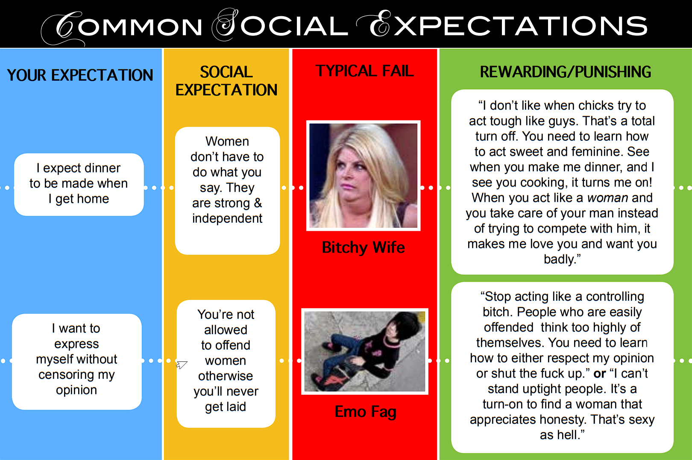

The Principles That Govern Social Interaction
RESTRICTIONS ON USE
The contents of this book are protected by copyright laws, and are the property of their owners. When you download copyrighted material you do not obtain any ownership rights in that material.
You may freely distribute the contents of our ebook, as long as you do not modify them in any way or use them for commercial purposes. This includes posting any portion out of context. Either you must post the ebook contents in their ENTIRETY or refrain completely from posting or quoting individual, isolated passages or content.
The same rule also applies to all Manhood Academy site content. Anything posted from the ManhoodAcademy.com website REQUIRES a hyperlink back to the original sourced content. When reproducing the material in the ebook or any portion of it, you must also reference its source: ManhoodAcademy.com.
This ebook is free to download at ManhoodAcademy.com. If you paid for this material from some other site, get a refund—you got scammed!
REVISIONS
This work is continually being updated for clarity and accuracy.
You are reading version 1.1.8
DEDICATION
This book is dedicated to all the embarrassed and frustrated men around the world. Your failures became the impetus for seeking a competent understanding of interactions. You did not fail in vain.
Special thanks to Dr. LeDice who brought much needed clarity to this work. Without him, this would still be just a jungle of disjointed ideas.
And thank you to all the students at Manhood Academy. Your progress verifies the authenticity of this work.
Clearing Out The Bullshit
Countless books have been written about social interaction. But none have actually helped you fully achieve your social goals. The advice is often
- short-sighted (change your wardrobe)
- too theoretical (“improve your vibe,” “be present”)
- too simplistic ("be confident," "be yourself")
- too situational (“this only works in bars/clubs”)
- flat out wrong ("make sure you pay for the first date")
Today’s relationship and dating “experts” bombard you with contradictory approaches to social interaction. They promise secret formulas, exclusive techniques, and ground-breaking methods.They fill you with false hope and shower you with false promises.
Yet, no one has been able to accurately explain the nature of social interaction. Instead, they construct business models designed to capitalize on your social incompetence. These companies have a vested interest in keeping you dependent on their never-ending parade of “new and improved” products.
Gurus claiming to teach you social skills usually package a bunch of gimmicks into a DVD with catchy titles like Seduction Secrets and Instant Sexual Charisma. Other experts offer worthless, feel-good advice epitomized by titles like How to Win Friends and Influence People and I’m OK, You’re OK. The vast majority focus on superficial outward changes. By over-emphasizing the importance of wardrobe, social status, diet, income and lifestyle, these professional marketers hook you into buying an endless parade of products directed at your emotions. After all, it's much more profitable to just sell you fish than to actually teach you how to catch them yourself.
Social interaction businesses don’t want to tell you the truth: their expensive 3-day weekend retreats and thousand-dollar seminars won’t provide long term results; you didn’t become a social hermit overnight. It took years of bad social conditioning. Thinking you’re going to cure that overnight is delusional.
To protect yourself from social snake oil salesmen, you must remember one important fact: social competence isn’t found in a genie bottle. Developing any skill requires time and effort. This entails much repetition. Social competence comes from consistency of application, not simply learning a better way of doing things.
If you’re looking to make an overnight change, you’re only fooling yourself. Quick fixes appeal to an immature urge to avoid the pain of self-discipline. Band-aid solutions are much more tempting than following a principled approach to social interaction.
Addressing your poor social skills requires more than just changing your wardrobe or learning how to say ‘cool’ things. Before you can develop a practical view of social interaction, your own delusional perspective must be exposed. Thus, it’s necessary to examine the natural laws that govern all social interactions.
Part I: Identifying The Problem
The Neurotic Mind
Some Symptoms
Have you ever felt nervous? Sweaty palms. Constantly clearing your throat. Making awkward eye contact. Tight shoulders. Hands stuffed in your pockets and arms crossed. Want to know what you look like?
Surprisingly—even though a hundred emotions may rage inside you—your face remains blank. Every thought and emotion is subdued and filtered as you constantly fight to conceal your emotions.
For example, a coworker may tell a hilarious joke, causing you to inadvertently break into a smile. But because you're terrified of offending others, you quickly recompose your face to hide this naked emotion. Trying to open up to strangers feels like stretching a rubber band; sooner or later your anxious thoughts drive you back to your original closed position. Your secret box of thoughts and emotions remains buried under a mountain of terrifying “what if” questions.
You keep your inner self hidden behind a carefully controlled facade. Like a seasoned poker player, you hide any hints of your desires. By keeping your eyes from squinting, you suppress telltale signs of joy and anger. Your unmoving brow betrays no hint of worry or ecstasy. You mumble your words. You speak in a dry monotone. Joy, sorrow, curiosity, and anger all sound the same coming out of your mouth as one thought grips you: I am afraid of being discovered.
How To Spot A Serial Killer
The eyes are supposed to act as the General of the face, conveying the bulk of your emotions. But your eyes don’t know where to look because you lack direction. Instead, they anxiously dart around, refusing to cooperate with the lower half of your face. Smiles look forced and uncomfortable because your eyes refuse to squint. Excitement is subdued by their refusal to widen.
Although the mouth is the most animated part of the face by necessity, it produces a sterile monotone. You might think that this bland expression is normal. But it requires tremendous effort to maintain an expressionless demeanor. Restraining a constant river of thoughts and emotions is a full-time job.
As a socially incompetent person, you constantly worry about living up to the expectations of others. You are always comparing yourself to more successful people. You never feel good enough, smart enough, or athletic enough. Because you fear failure, you’re afraid to try anything new or do things differently.
This type of neurotic mind-set forces you to focus on yourself. You worry about how you look, how you dress, what others think of your family and friends, what kind of car you drive, where you live, how you sound, what school you attend, what job you hold, etc. This self- absorbed perspective makes it extremely difficult to pay attention to what others are saying. Since you keep beating yourself up, you’re quick to criticize others. You assume that others judge you in the same negative light that you judge them. You hesitate to express yourself because you’re afraid of risking rejection. Since you hold back what you’re really thinking, people can’t relate to you. You don’t feel close to them. You keep thinking, “Nobody gets me!”
Like most people, you gravitate towards convenience: you look for those who play the same video games, participate in the same sports, attend the same classes, or share the same career. The underlying assumption is that finding people with similar interests will lead to strong relationships. But by focusing on these external factors instead of revealing your personal thoughts and feelings, you fail to meet the social needs of others. Ultimately, this leads to unsatisfying relationships.
While you may have friends, these relationships remain optional rather than necessary. Often times instead of talking to people you’ll over indulge in external activities. These activities are more convenient than putting in the effort to build relationships, and they help compensate for your lack of human contact. For example, millions of guys play Xbox and PC games and have developed entire electronic cultures to accommodate this abnormal habit1. There are electronic- sport leagues, online gaming forums, professional gamer video streams, fan sites, and gaming slang—all of this becomes a substitute for face-to-face social interaction.
And when it comes to flirting, you're terrified. Most of the time, you wind up in the dreaded FriendZone™. This leaves you either resenting girls for not wanting such a “great guy” or feeling helpless to maintain a romantic relationship. Since you don’t get enough sex, you resort to porn to address your sexual needs. And even if you manage to get a girlfriend, her attraction to you never lasts— you’re always the one getting dumped. Whenever you spot couples spending time together, you either envy or despise them.
You also have serious problems with getting your expectations met. Directly stating your needs to anyone feels embarrassing. This causes you to sweep confrontations under the rug. At school and at work, others violate your expectations with impunity, leaving you with a general sense of frustration.
Why Are You Like This?
“Yesterday, my mom and I went grocery shopping. As I pulled out a shopping cart, I looked back and saw this little girl with her mommy looking right at me. I had no idea why they were just standing there looking expectantly at me instead of getting their own cart from the other rows. I wheeled my cart around them and kept rolling. As soon as we were out of earshot, my mom exploded.
‘James! Have some decency! You should’ve handed your cart over to those two ladies. They were counting on you to be a gentleman!’
‘Why can’t they get their own carts?’ I asked.
She sighed with the exasperation that only a mother knows. ‘James, I’ve taught you better than this.’
As she kept walking, I froze to the spot as memories of her decade- long nagging flashed into my mind: 'You can't just say that to a girl! I don’t care if she was rude or stupid or you think she deserved it. That’s not what a gentleman does!’ ; ‘You should always hold the door open for me—I’m a lady.’ ; ‘James, you can’t criticize your friend’s opinion! Everyone has their own beliefs, and you’re not entitled to question them just because you think they’re wrong.’
Suddenly, it felt like a dam had broken inside me. A pent-up flood of realization came pouring out:
THIS IS WHERE I GOT MY NEUROSIS.
My mom did her best to raise me, but she had no fucking clue how to do it. Since my father’s too scared to stand up to her, she’s been ruling over both of us for years. This has gradually reduced me to a neurotic mess, cowering under my own self-censorship.
"I am terrified of being criticized by the world and not living up to its expectations.”
But why?
Why do you feel like you must constantly monitor yourself? Why do you treat women as if they are better than you? Why does talking to people seem like such a massive chore?
Like James, you too have been worn down by society’s constant reprimands. You have become a passive, neurotic mess constantly trying to justify your existence to others.
Today you're going to change all that. And the first step is to determine the root of your social problems.
What Is Feminism?
Today, most people view feminism as a political and social movement purporting to secure equal rights and legal protections for women. However, to properly understand how feminism threatens your social competence, it is necessary to distinguish between its political phases and its fundamental governing philosophy.
At its heart, feminism represents women’s desire to control men. By attempting to seize male authority through the legal system, women hope to gain special rights and privileges, entitling them to your male resources.
But because feminism is masked by feel-good slogans of gender equality, it is often misunderstood and rarely ever opposed. In fact, it thrives on the ignorance and complacency of its victims who unknowingly help perpetuate its damage on society.
However, once its modern political slogans are sifted out, we’re left with a destructive social philosophy that blames men and absolves women. Not only does feminism poison relationships, it also erodes the very gender functions necessary to maintain healthy relationships and a healthy society. In fact, nothing more aptly captures the destructive spirit of feminism than the age old sentiment: “I don’t need a man!”
While feminists celebrate the spirit of gender independence, countless disillusioned men go ignored; for every woman who believes she can replace the role of a man, there’s a single mother out there creating a future criminal. For every wife encouraged to defy her husband’s authority, there’s another record-setting divorce statistic tearing apart society. For every girl taught to resent male leadership, there’s a feminist politician trampling male civil rights.
Yet, ironically, feminism purports to protect the rights of women from male oppression. It even goes so far as to associate itself with the civil rights movement of African-Americans. However, this faulty rationale completely disregards the difference between unjust oppression and natural capacity restriction. In other words, limiting a woman’s job opportunities is not the same as limiting a black man’s job opportunities.
Women are limited by their own natural gender design. Since allowing them into the fire department would unnecessarily endanger the lives of others, restriction must be put in place to ensure the safety of others. This is not the same thing as preventing a black man from joining the fire department based solely on his skin color; his physical appearance does not affect his ability to do his job properly, whereas a woman’s lack of upper body strength does limit her job performance.
Feminists created this false association with the black civil rights movement as way of circumventing their gender limitations. The misleading comparison between gender limitation and racial oppression allowed feminists to gain sympathy for their dysfunctional cause. But by examining the necessity of limitation, we see just how dangerous feminism is to a healthy society.
Consider how restriction affects a child’s life. Since children lack foresight, they act according to their immediate desires. More often than not, they fail to consider the possible consequences of their actions. Thus, children require healthy restrictions to protect them from their own short-sighted behavior. If this protection is removed, children will be in danger of suffering the consequences of indulging their reckless whims.
A child admiring a parent’s ability to drive a car will desire the same privilege. Even though a child lacks an adult’s mental and physical capacity, they will still insist on shouldering adult responsibilities. The exciting prospect of impressing others to gain praise is just too enticing. Although this foolish decision places the child and others in danger, they lack the foresight to understand why their function is limited. Thus, the child requires an adult to restrict their actions for the sake of everyone’s welfare.
Women also lack foresight because, like children, they focus on themselves to a dysfunctional degree. Even the way they argue reveals their love of appearance over substance.
Instead of addressing the merits of your argument, women will focus on the way you argue; if your point hurts their feelings, they will complain about your intentions. If your argument upsets their beliefs, they will scold you for lacking manners.
Women place priority on their feelings above all else. Reason and common sense come in a distant second. Discovering the painful truth is less important to a woman than maintaining her pleasurable delusions. Without male guidance, women invariably neglect to consider the viewpoint of others. As Florence Nightingale once said:
In one sense, I do believe I am “like a man,” as Parthe [the writer’s sister] says. But how? In having sympathy. [...] Women crave for being loved, not for loving. They scream out at you for sympathy all day long, they are incapable of giving any in return, for they cannot remember your affairs long enough to do so. [...] They cannot state a fact accurately to another, nor can that other attend to it accurately enough for it to become information. Now is not all this the result of want of sympathy?
Thus, women lack the capacity to bear the same heavy responsibilities that men bear.
Yet, because of feminism’s reckless encouragement, women happily volunteer to “steer” the lives of others, oblivious to the dangerous situations they create; our feminist society lowers academic, professional and civil service standards to accommodate women’s irresponsible desire to accept duties they were never designed to fulfill. Consequently, our schools, our economy and our lives must all sit in the passenger seat, waiting for the inevitable crash.
What Does The Term "Bitch" Really Mean?
The term “bitch” refers to a repugnant or difficult woman. Bitch characteristics include:
- Anger toward men
- Condescending attitude
- Emotionally unstable
- Unreasonably demanding
- Self-serving
- Stubborn
- Argumentative
Examining the relationship of these aspects reveals a common pattern of dysfunctional behavior typified by women deprived of male authority. Instead of respecting the male leadership role, women in feminist societies are conditioned to ignore necessary gender limitations. Add to this academic institutions that defer to women and the result is a legal system that now bullies men into submission while encouraging women to seize or circumvent male authority.
These damaging effects can be felt in all areas of life, especially when men try to lead social interactions with women. Instead of respecting this male duty, women will attempt to subvert male authority by degrading male social status. As a result, condescending remarks about lack of friends, lack of social savvy, unattractive appearance or desperation are not uncommon. Such women often condemn male greetings by refusing to make eye contact or offering sarcastic, insulting remarks.
Enduring this type of adversarial social interaction is commonplace for males in feminist societies. Not only is male attention taken for granted, masculinity itself is routinely mocked by women focused on dominating their male counterparts.
Bitches regard the feminine disposition with contempt, preferring instead to adopt an aggressive and condescending style of communication. Such women view courtship as a competition rather than a cooperative effort. Feminism advocates this competitive approach to dating under the assumption that men favor challenging women.
However, this competitive dating philosophy actually hinders the development of romantic relationships. It forces women to sacrifice their most essential feminine value—their submissive attitude.
As a result, women find themselves living in a general state of fear—lacking direction, security and emotional comfort. Their relationships are characterized by bitter power struggles over leadership and resentful negotiations of gender roles. Not surprisingly, these unstable unions usually fail, contributing to the epidemic divorce rate and mounting social isolation felt in feminist societies. It should be no surprise then that Sweden, the most feminist society in the world, has the highest divorce rate of all at a whopping 54.9%!
Feminism Deforms Society
An Attitude Of Entitlement
"Equality is a slogan based on envy. It signifies in the heart of every republican: “Nobody is going to occupy a place higher than I.”
“There is, in fact, a manly and lawful passion for equality which excites men to wish all to be powerful and honored. This passion tends to elevate the humble to the rank of the great; but there exists also in the human heart a depraved taste for equality, which impels the weak to attempt to lower the powerful to their own level, and reduces men to prefer equality in slavery to inequality with freedom.”
— Alexis de Tocqueville, Democracy In America
Feminists bombard society with sound bites like “gender equality” and “social diversity,” but beneath this facade of feel-good sentiments and moral posturing lies an ugly truth: feminism conditions women to believe they unilaterally deserve what men have earned. As a result, women feel entitled to male authority.
However, feminism fails to inform women about the heavy price that must be paid by those in authority positions. To women, leadership merely translates into the acquisition of personal benefits. Sacrificing themselves to meet the needs of those under their care—even if it means forfeiting their lives—never even occurs to them. Nor do they realize that a leader’s decisions are audited for competence and accountability. Women foolishly assume their gender will forever exempt them from the responsibilities placed on those in authority positions.
Feminism allows women to ignore this fundamental relationship between authority and accountability. It deceives them into believing that having their cake and eating it too is possible. The opportunity to wield male authority without worrying about the cost is an enticing carrot.
This can be observed in feminism’s complaint about wage inequalities. Even though women work fewer hours, performing less work in less dangerous occupations than men, no mention is made of these facts. Instead, feminisim poisons women with the feel-good notion that they deserve more. The thought of responsibility is chronically absent from their considerations.
Provoked by feminism’s angry demand for equal benefits, women remain ignorant of the necessary sacrifices required to secure such benefits. Instead, they are conditioned to believe gender hatred is the cause. Such irresponsible claims of perceived injustices characterize the indulgent nature of the feminist philosophy of entitlement.
This entitlement attitude is grafted into females at a young age. Our feminist culture raises young girls to believe their value far exceeds men’s value. Girls grow up feeling they deserve better treatment than boys, based solely on their gender.
According to the American research, there has been a 67 per cent increase in [Narcissism] over the past two decades, mainly among women.
They soon learn that others, especially men, are expected to shoulder the burden of their living expenses. Society supports this view by coddling females with affirmative action programs and other gender-biased privileges unavailable to their less valuable male counterparts.
Women Shielded From Sexual Accountability
Even though women complain about being objectified by men, they completely ignore the hypocrisy of sexualizing their own appearance. Mothers allow their daughters to wear make-up, dress in revealing clothing and flirt with boys. Permission to entice and provoke sexual response from boys is permitted as early as elementary school.
Adult females carry this vain self-objectification even further. Countless women buy from, publish articles about and actively promote billion-dollar make-up, fashion and cosmetic surgery industries aimed solely at drawing attention to their physical appearance.
But what about boys? Are they allowed to respond to female provocation? Is it fair for women to exploit male sexuality without consequence?
Feminists often lament the emergence of a “rape culture” supposedly perpetuated by men. Yet no feminist is willing to hold women accountable for their systematic exploitation of male sexuality in strip clubs across the world. On a daily basis, women are allowed to use their bodies to defraud men out of their hard earned money. While women fault men for not being able to control their biological urges, they have no conscience about manipulating the male sex drive to fill their own bank accounts. This is especially hypocritical considering that feminists try to absolve women of blame whenever a scantily dressed female is raped.
Women fail to see the connection between their behavior and its consequences. Accountability for one’s appearance is ignored as feminism encourages shifting blame onto men for any negative reactions. Men find themselves demonized as perverts for staring at breasts on display; animals for constantly desiring sex; and predators for seeking sexual fulfillment.
The dangerous assumption that both genders possess the same sexual appetite further exacerbates this problem. By failing to acknowledge the stronger biological motivation in the male sex drive, society burdens men with unfair sexual standards based on a lower female sex drive.
From a biological standpoint, men have always pursued women. And contrary to fashionable myths, males possess a far more potent sex drive than females. In The Handbook of Sexuality in Close Relationships, Harvey, Sprecher, and Wenzel (2004) observe:
In our review, we saw a strong pattern of findings indicating that men have a stronger sex drive than women. In terms of our categories, we found that, relative to women, men think about sex more frequently (e.g., Eysenck, 1971;Laumann, Gagnon, Michael, & Michaels, 1994); more often experience sexual arousal (e.g., Knoth, Boyd, & Singer, 1988); have a greater number of fantasies, which occur more often and are more varied (e.g., Leitenberg & Henning, 1995); desire sex more frequently (e.g., Klusmann, 2002; McCabe, 1987); desire to have more sexual partners (e.g., Buss & Schmidt, 1993); masturbate more often (e.g, Oliver & Hyde, 1993); want sex sooner within a relationship (e.g., Sprecher, Barbee, & Schwartz, 1995); are less willing to live without sexual activity (e.g., Kinsey, Pomeroy; Martin, & Gebhard, 1953; Leiblum & Rosen, 1988); engage in more initiation of sex (e.g., O’Sullivan & Byers, 1992); expend more resources (e.g., time, money) to get sex (see Elias, Bullough, Elias, & Brewer, 1998); take more risks and make more sacrifices for sex (e.g., Blumstein & Schwartz, 1983); desire and enjoy more varied sexual practices (e.g., Laumann et al., 1994)
Even the vast majority of internet porn consumers are men. And recent studies further supports this fundamental difference between the genders by noting that sex is optional for women:
When it comes to health, drinking the recommended daily amount of water is more important to women than having enough sex, according to a national survey conducted by our magazine. When asked to prioritize behaviors related to their overall health and well being, women ranked drinking enough water fifth and sex seventh on the list. More than 1,000 women participated in the nationwide Women’s Wellness Survey, which polled their opinions on healthy living, eating, and exercise. Respondents ranked the following behaviors in terms of importance to overall health and well being. Their priorities may surprise you:
- Getting enough sleep
- Keeping stress level low
- Finding time to relax
- Eating healthfully
- Drinking the recommended amount of water
- Finding time to exercise
- Having enough sex
But our feminist society fails to acknowledge such obvious gender differences. Instead, it forces men to accept the absurd notion that their libidos exactly parallel that of women. By ignoring this key biological difference, feminism sets men up for failure.
Even the legal system is hostile toward male sexuality. The issue of sexual consent has now become a dangerous minefield for men. As feminist legislators twist the definition of 'rape' to excuse female liability, vindictive double standards unfairly punish men. Thus, while women are allowed to ignore age-of-consent laws, men are accused of creating a ‘rape culture.’
In case after case, society automatically designates women as victims while stigmatizing men as perpetrators. The Duke Lacrosse, David Copperfield and Kobe Bryant cases perfectly illustrate this disturbing legal trend. Men find their civil rights violated as they fall victim to feminist double standards of sexual accountability. Once a person’s gender replaces the actual evidence as the overriding argument, a trial is no longer required. Men’s reputations and lives are unjustly destroyed by vindictive women permitted to abuse the justice system.
Amelia McDonell-Parry, The Frisky’s editor and regular contributor to major news organization, CNN.com, recently posted an article condoning the rape of minors. “21 Guys We’re Ashamed To Say We’d Totally Screw,” features minors Nick Jonas and Taylor Lautner, with the captions: “Please don’t take me to jail” and “If I waited until he was legal, my shame would go away.” Now just imagine if a man posted a picture of Miley Cyrus with the headline, “I’d love to objectify and sexualize this minor!” Society would be screaming for his head.
But McDonell-Parry’s cavalier attitude reflects the sexual impunity afforded to women by the feminist legal system. Since its political heyday in the 60s and 70s, feminism has been excusing women from sexual accountability. Even women sexually assaulting a young boy made it to the front page of Reddit and was recommended for the “Best Of” category. Imagine if the genders were reversed and it was a picture of two adult grown men grabbing the crotch of a young girl. Somebody would be in jail.
Because feminism assigns women default victim status, they have virtually no legal reprisals to fear—shame doesn’t require a prison term. Feminist laws act as safety nets, enabling women to engage in risky, get-out-of-jail-free sexual behavior because they realize men will inherit the blame. Since all sexual accountability falls on the man’s shoulders, feminism’s ever-expanding judicial bubble negates the educational sting of liability. And for those women unfortunate enough to get caught (Debrah Lafave, Mary Kay Letourneau), a sympathetic publicear and media celebration await. Thus, women feel encouraged to flaunt their bodies, exploit male resources with abandon and hide behind hypocritical codes of sexual conduct.
An Unfair Sexual Advantage
In contemporary romantic story lines shown on TV and in movies, female interests take precedent. No matter how obese or lazy a woman is, there’s a victim right’s group ready to embrace her. No matter how vindictive, irresponsible, self- absorbed or flagrantly disrespectful a woman’s behavior becomes, justifications will be made for her behavior. Regardless of how little a woman reciprocates in a relationship, feminism demands that society focus its attention and sympathy on her alone.
Men, on the other hand, are portrayed as nothing more than relationship props designed to serve a woman’s narcissistic dating criteria. Dorks and nerds are routinely dismissed as beneath dating consideration—“she’s out of your league.” Failure to pay for a woman’s dating expenses or failure to meet other unreasonable demands incites public mockery and contempt. Men who give too little are labeled as "douchebags" while men who give too much are vilified as "creepy." In a never ending quest to please dysfunctional women, emasculated men contribute to their own mistreatment and marginalization. Consequently, sexual manipulation has become a sport for today’s women.
Since male biology dictates that men will initiate romantic interactions, women realize they hold a powerful sexual advantage. This allows females to choose between multiple suitors. Yet, because this advantage serves women, feminists remain silent about this biological “inequality.” Women are allowed to exploit this advantage without restriction.
By wearing revealing outfits, using makeup and cosmetic surgery to enhance their appearance, women employ calculated flirting to tempt and tease men into thinking they will get laid—all while simultaneously blaming men for not being able to control themselves.
Men too possess their own natural advantages in the form of superior physical strength and superior mental prowess. However, when men seek to benefit from their own natural advantages, feminists cry foul. No longer are men allowed to freely compete for jobs that suit their natural capacity. Nor are men allowed to demand that women pay their fair share of dating expenses. Instead, men must now contend with affirmative action quotas and sexist social expectations like chivalry—both designed to nullify natural male gender advantages. While women’s natural gender advantages are celebrated, men’s natural gender advantages are denounced as misogynistic tools of oppression.
By negating male gender advantages through legal intimidation, feminism removes male authority and places it in the hands of women. Thus, while women are taught to indignantly clamor for ‘equality,’ they are also conditioned to ignore the hypocrisy of capitalizing on their own innate gender advantages. This not only ruins relationships, it also places society in a dire economic situation.
An Unfair Economic Advantage
A simplified model of society, composed of ten men and ten women, can be constructed to expose the economic problem caused by feminism. Each person is given a gender-based job. All twenty jobs represent the entire economic structure of society.
Everyone in the society will need clothing and food, so the men will be given ten hunting jobs, and the women will be given ten sewing jobs. The men's jobs fulfill the women's food needs and the women's jobs fulfill the men's clothing needs. In this way, everyone’s necessities are met.
Now, feminism enters the picture. It enacts a policy called "affirmative action” designed to provide “equality” for women. Instead of worrying about meeting the needs of society, the policy is focused on making sure everyone has access to each job, regardless of whether or not they're qualified.
As a result, five men lose their hunting jobs to five women. But because women lack the capacity to meet the demands of the hunting job, their output is very poor. Soon society suffers a food shortage.
Today, our situation is not unlike this model. Feminism entitles women to male-oriented economic positions through affirmative action quotas and other gender-biased programs. Working men end up picking up the slack created by incompetent female employees who lack the capacity to fulfill their job duties. Men subsidize their female co-worker’s paychecks by producing more, higher quality goods and services while their actual compensation for work done is lower.34 Even women who don't work receive this benefit through welfare subsidies and other programs designed to benefit "disadvantaged" female groups. As men subsidize female wages by working harder to offset female job incompetence, they end up essentially paying women’s taxes as well.
On the surface, securing equal wages for women seems like a noble, egalitarian goal. But only when the reasons for gender wage disparities are examined does the ugly truth come out: feminism doesn’t just want equal pay for women—it expects entitlement wages. By conveniently neglecting to address the fact that women overall work less hours in less dangerous, less demanding careers than men, feminism deceives society into believing an economic injustice exists. Thus, the feminist State forces employers to pay women what they think they deserve rather than what they have actually earned.
Nowhere is this imbalance more clearly observed than in the economic disparity men experience in a feminist dating environment.
While feminism claims to support economic equality for both genders, it fails to protect men from falling victim to traditional gender roles (the same ones denounced by feminists). By shaming men into acting like ‘gentlemen,’ women secure special economic entitlements. Advice columnists like Judy McGuire routinely advise women to exploit this hypocrisy:
“Just because [a man] bought you a lobster doesn’t mean you need to [reciprocate].”
Because women are essentially being subsidized by men on these dates, women now receive two paychecks. Through a one-sided application of chivalry, men allow themselves to be robbed of their economic means. Thus, feminism’s manipulation of the economy affords women special rights under the facade of “equal” rights.
"Equal Rights" vs. Equal Representation Of Interests
“There are people in Europe who, confounding together the different characteristics of the sexes, would make man and woman into beings not only equal but alike. They would give to both the same functions, impose on both the same duties, and grant to both the same rights; they would mix them in all things - their occupations, their pleasures, their business. It may readily be conceived that by thus attempting to make one sex equal to the other, both are degraded, and from so preposterous a medley of the works of nature nothing could ever result but weak men and disorderly women.” — Alexis de Tocqueville
Voting is designed to give citizens of a state the means to have their interests represented. In a democracy, a majority rule system is instituted with the intention of fairly representing all interests; however, this short-sighted approach to governance presents a significant problem as the majority opinion is often detrimental to society.
"A democracy is nothing more than mob rule, where fifty-one percent of the people may take away the rights of the other forty-nine.”— Thomas Jefferson
Imagine a group of ten parents and 100 children about to eat dinner. Only the adults can vote on the menu. Although the parents may opt for delicious food, they are primarily concerned with the children’s health; the future interests of the children are more important than their immediate gratification. As responsible adults, they have better dietary knowledge and superior financial resources. This places them in the optimum position to provide for the children. It is proper and justified for the adults to shoulder the burden of the voting responsibility.
But now let’s include the children in the voting decision. The parents still vote for a balanced meal, but the children, lacking foresight and caring only about immediate gratification, vote for ice cream. According to the democratic process, the majority opinion has been fairly represented. The children will be having ice cream for dinner.
Yet, maintaining this democratic voting system will endanger the children’s health over the long term. Although the majority opinion has been fairly represented, the common good has been sacrificed. Emotional mob rule has trampled over reason. You now have a “tyranny of the majority.”
Democratic voting only caters to the lowest common denominator in society. It offers no protection against harmful self-indulgence and affords even less justice. Since the majority can always outvote any legal restrictions, security and liberty are the first to be sacrificed on the Altar of Good Intentions. Without the ruling principle of the law, unjust actions, uneducated opinions and unstable emotions will destroy a society from within.
Allowing women to vote is no different than allowing children to govern themselves. Women allow their emotions to determine their governing structure, negating the point of even creating laws. And since female self- esteem is so fragile, women value group consensus over personal integrity. This means women will typically side with an unjust policy as long as the majority of people have adopted it. Without the stable guidance of men ruled by principle, male authority loses its foundation.
This authority is also required to enforce the law. Without the ability to enforce a governing restriction, the law becomes meaningless, atrophying to mere words on paper. Ironically, those most in need of the law’s protection suffer from their own emotional voting decisions.
On the other hand, men neglecting to care for those under their authority present just as great a problem. Irresponsible men have driven women to mismanage their own lives. In the absence of male leadership, women are forced to govern themselves, even though they lack the capacity to do so. Just as men lack the capacity to bear children, women aren’t qualified to govern society. They require men to properly care for their needs.
Yet today, because of feminism’s insistence on including women in our governing structure, male authority languishes in a sickened condition. A generation of effeminate, emasculated, apathetic young men now burdens our economy. Even cultures around the world experience the debilitating effects of feminism: politically correct speech, damaged family structures, epidemic divorce rates, a litigious attitude, a chronically overcrowded prison system populated by the offspring of single mothers, bitter custody battles, hypocritical gender standards and dysfunctionally aggressive women.
Few things hamper a child as much as not having a father at home. “As a feminist, I didn’t want to believe it,” says Maria Kefalas, a sociologist who studies marriage and family issues and co-authored a seminal book on low-income mothers called Promises I Can Keep: Why Poor Women Put Motherhood Before Marriage. “Women always tell me, ‘I can be a mother and a father to a child,’ but it’s not true.” Growing up without a father has a deep psychological effect on a child. “The mom may not need that man,” Kefalas says, “but her children still do.” — Caitlin Flanaga, Time magazine
How Feminism Destroys Chivalry
Historically, men have been expected to shoulder the burden of providing for those under their authority. Women supported this functional relationship by managing the household duties.
But today, women often complain about the lack of chivalry shown by men. They point to men’s reluctance to pay for women’s dating expenses (dinner, drinks, shows, gifts) as evidence of this trend. Yet, women fail to realize that their own self-serving demands killed chivalry.
In recent history, the political arm of feminism provoked women to enter the workforce for the sake of gender equality. However, it failed to warn them of the consequences. Women took jobs designated for men, desiring to gain the same respect accorded to males by proving themselves to be “strong and independent” individuals. As budding feminists, they viewed financial independence from men as a blessing.
Yet, women failed to realize the conflict this new economic situation would create with their natural and functional desire to be cared for by men. As feminism continued to belittle the notion of women depending on male support, job competition increased. Now, instead of being the recipients of male affection and comfort, women were competing with the hand that fed them.
Women naively expected to maintain this dysfunctional relationship indefinitely. They failed to realize that gaining the same respect as men would require making masculine sacrifices.
But when such bothersome duties surfaced, women childishly tried to reclaim their original status as social welfare recipients; they reasoned that it was a gentleman’s obligation to care for a lady. After all, chivalry only stressed what a man should do for a woman. It never mentioned reciprocating that sacrifice.
Confused and frustrated by feminism’s self-serving design, men gradually abandoned the gentleman role. Feminism’s female- focused agenda forced everyone into highly competitive social and economic conditions. Gender competition slowly replaced gender cooperation. Feminism’s philosophy of female entitlement had turned the notion of chivalry on its head. The same traditional gender roles that feminists bitterly rejected were the equitable glue that held relationships together. How could women still expect to be considered welfare recipients while selfishly benefiting from their newly acquired economic independence? As Rashida Jones laments, men began to protest with their own reluctance to follow traditional gender roles:
“I feel like women have come so far because of the sexual revolution, women’s lib, the feminist movement—we can work, we can nurture, we can be equal partners. Meanwhile [...] guys in my generation don’t have manners, really; they’re not gentlemen. It’s sad.”
Today, women can no longer depend on the generosity of men they now compete against in the economy. They can’t rely on the kindness of men they now take advantage of in the legal system. They can’t expect romance from the men whose social status they have hijacked. As feminism continues to degrade and devalue the male gender function, chivalry is pushed over the same economic and legal cliff it created. Even as a social philosophy, chivalry is at odds with feminism’s “equal rights” motto. Championing gender- based entitlement under a banner of equality creates understandable resentment. Thus, the more feminists demanded, the quicker chivalry caved.
Feminism Damages Women
The Victim Mentality
Feminism strands women in an adolescent, self-pitying stage. It conditions women to blame men for their problems. The legal system today reflects this social trend, skewing verdicts in favor of women at the cost of personal accountability. Those who complain of being offended by men are rewarded with feminist laws favoring their arbitrary and self-righteous sense of indignation. The more courts validate “emotional distress” claims, the more women become accustomed to viewing themselves as perpetual, blameless martyrs. Thus, the courts act as enabling agents, institutionalizing women as default victims.
In the workplace, women can now be as ultra-sensitive to sexual language as they choose. Or in social settings, they can emasculate male sexuality with cavalier abandon. Under this irresponsible legal climate, women are granted license to impose their hypocritical standards upon men. Anyone daring to object faces the threat of litigation. What man would dare point a finger at this legally protected gender. How can anyone even blame a “victim,” given such a biased legal definition.
Not only does their self-imposed victimhood tarnish legal and professional climates, it also undermines romantic lives. Nowadays, you are unlikely to hear of women acknowledging any fault for their failed relationships. It’s always the “asshole” boyfriend or the “abusive and controlling” husband who causes the problems. Women will constantly complain about being taken advantage of or lied to, yet feel no responsibility whatsoever for their choices in men. Such knee-jerk assignment of blame is the reason their relationships never improve.
Women Encouraged To Deceive
In countless advice columns and dating surveys, women lament the lack of honesty from the men they date. Complaints about male deception are commonplace. But why then do women end up dating such men? Simple: women fail to account for their own dishonesty:
“[Women] cannot state a fact accurately to another, nor can that other attend to it accurately enough for it to become information.” —Florence Nightingale
Feminism trains women to excuse and justify their own dishonest approach to life. Denial persists because feminism never holds women accountable to their word. Instead, self-deception is held up as the female social interaction model.
As Robert Franklin notes:
One of the worst aspects of feminism historically has been the willingness of certain feminists to make up “facts” and misrepresent others. It is this tradition of intellectual dishonesty that has brought us such noteworthy gems as “all men are rapists, and that’s all they are.” (Marilyn French) “Every year nearly four million women are beaten to death.” (Katherine Hanson) “Women’s income level drops 73% post-divorce." (Lenore Weitzman) "As the river of a girl's life flows into the sea of Western culture, she is in danger of drowning or disappearing.” (Carol Gilligan) "95% of married women are dissatisfied with their sex lives." (Shere Hite) “Women just are better.” (Cokie Roberts)
Needless to say, I could go on almost indefinitely. The mere fact that books and articles criticizing feminist claims so often contain the word ‘myth’ says more than I ever could. Indeed, it’s not at all unheard of for feminist academics (Gilligan and Weitzman come to mind) to base their claims on “data” which has the suspicious quality of never having been seen by anyone else. And when other academics ask to see their data, even time and again over many years, they never produce it.
This trend is even notable in the way such women view their own sexual identity. Taking pride in their purity, women often advertise their innocence and high moral standing when dating. Note this personal ad excerpt:
I’m not looking for a one night stand. There is no way I’m having sex with someone unless I’m in a committed relationship. If a quick fling is what you're looking for, no hard feelings—just keep on looking elsewhere.
There’s only one problem—this woman had sex on the first date. Her lie perfectly epitomizes the rampant self-deception women use to meet the dysfunctional expectations of feminism. As Maureen Rice reveals:
The truth is that [women] have always lied about [their] sex lives. British men consistently claim to have had more partners than women—the current average is 13, while women claim to have had only nine.
Plainly, someone is lying here. While men might exaggerate their sexual conquests, the bigger liars are women.
When studies about sexual partners or fidelity use a mixture of face-to-face interviews and anonymous computer questionnaires, men will give the same answers to both, but women will report much higher numbers when the answers are anonymous.
Women don’t permit themselves to hear the truth about their age, weight, appearance, behavior, capabilities or limitations. Instead, like single-minded drug addicts, women focus on maintaining the euphoric flow of praise afforded by their social advantage.
Men are held hostage to this deceitful self-esteem architecture through constant threats of sexual deprivation. Amelia McDonell- Parry, editor-in-chief at The Frisky scolds her ex-boyfriend for the unforgiveable sin of telling the truth:
“Apparently, no one told him that honesty is not always the best policy...”
Apparently, feminists feel that men should be scolded for telling a lie or telling the truth. Amelia implies that men need to learn how to read minds better if they hope to please women ruled by a “have your cake and eat it too” philosophy.
Additionally, women’s tendency to remain in denial about their limitations and weaknesses is indulged by shows like Sex And The City, Cougar Town and Desperate Housewives. By normalizing the “cougar” lifestyle, older women are given the freedom to sexually manipulate younger men with impunity. In the process, female self- esteem is coddled by artificially orchestrated consequences designed to hide aging women’s loss of sex appeal.
As much as men are discouraged from inquiring about a woman’s age, weight or appearance, women will just as easily lie to conceal the fact; denial requires deception. Men must buy into the lies being sold by feminism if women hope to successfully indulge their characteristic self-reprievals.
Many advertisers now market their products to accommodate this deception. From Dove soap ads showcasing obese ladies in their underwear with the unspoken message: “Look at me! I’m fat and proud of it. Get used to it!” to blogs like The Rotund advocating fat acceptance, women are taught to believe that whatever gains the most popularity must be right.
Perpetuating this deception even further, the cosmetics industry—an annual multi-billion dollar charade of doctored bodies and disguised faces—manipulates women into valuing self-deception. From cosmetic surgery to fake eyelashes, women feel pressured to impress, in a vain quest to feed their malnourished self-esteem. Feminism dictates that “strong, independent” women show no weakness; however, this proves an impossible task for a gender designed to rely on the protection, provision and praise of males.
Feminism even teaches women how to lie more effectively. A recent article from Oprah’s website encourages women to use deception by providing “54 Ways to Get Out of Doing Anything You Don’t Want to Do.” The article offers 54 sample lies, distortions and excuses to use in various social situations58. For example, instead of simply saying no to a request, the article coaches them to make up imaginary excuses. This deceptive advice is readily accepted by women desiring to feel good about themselves no matter what the cost.
And nowhere is this deceptive trend from women more apparent than in the dating arena where lying becomes par for course. YourTango advises women to avoid telling the truth in an article titled, “5 Acceptable First Date Lies.” This is supported by DivineCaroline’s claim from, Vicki Santillano, who says:
A little fabrication is mandatory in order to function within society. In fact, one social psychologist studying liars found that people who lie are often more popular than their honest peers. Telling white lies here and there keeps others happy and keeps us in their good graces.
Irresponsible statements like these lend unwarranted scientific credibility to female deception and place additional social pressure on women to lie to avoid society's contempt. Under such flawed reasoning, female deception becomes a justifiable necessity.
Emasculated men are conditioned to excuse women from being held accountable, further adding to the pervasiveness of female deception. As any man actively dating already knows, getting a phone number from a woman is about as reliable as a promise made by a used car salesman. But because emasculated men never protest, women see nothing wrong with their behavior. And even if these men did complain, they would incur mocking allegations of sexual impotence or the catchall insult of harboring unresolved anger issues toward women. Deceit thrives in an atmosphere devoid of respectful social standards. And even having such standards proves useless without the requisite male authority to enforce them.
Instead of acknowledging this culture of deception, women routinely slap euphemistic labels on top of it. “Large and in charge” slogans now validate women’s disorderly eating habits. Dysfunctional women no longer fear being called “bitches” because “assertive” and “independent” have become fashionable excuses for their behavior. Whatever provokes a second look in the mirror is quickly sanitized by the diplomatic trappings of etiquette; “you don’t ask a woman’s age or weight! How dare you!”
Females Encouraged To Neglect Their Gender Roles
Females possess a nature designed to complement that of males. Yet, feminism compels women to abandon this symbiotic design in favor of competing with males. Contempt for male authority defines the modern woman. Her lack of submission reveals a damaging cultural trend—hatred of healthy gender roles:
PRETTY in pink? Not Deborah Watson. “If I see a floral print or pastel dress in my closet, I think: ‘Ugh, gross! I don’t want to wear that,’ ” she said. Ms. Watson, a fashion stylist in New York, has turned her back on those hallowed totems of femininity in favor of the raffish look of a big T-shirt, well-worn jeans and a graying black cotton overcoat. “Anything more girly, I just see as weak,” she said. “It’s not cool to be demure.”
Instead of tending to feminine functions like nurturing, supporting and comforting, she abandons them for masculine functions like disciplining, planning and leading. Through feminism’s short-sighted quest for “gender equality,” women have been deceived into hating their natural function. Instead they’ve been taught to covet male functions in order to feel valuable. Essentially, feminism causes women to hate the very reason men value them—their feminine nature. By condemning this complementary aspect, feminism erodes our social structure.
Feminism’s irresponsible handling of common gender interests also infects the national economy. As more women are artificially introduced into the workforce via affirmative action hiring policies, money that should rightfully be distributed to men is lost. This restricts the financial means of males and further prevents men from caring for those under their authority.
Today, most women still expect men to pay for their dates, relying on the traditional model of female dependence. But feminism’s insistence upon forcing females into male- oriented careers undermines the symbiotic nature of functional gender roles. Women desiring children or dependence on male financial care incur society’s contempt. Housewives feel like pariahs. Others become seduced by the promise of social status assigned to those pursuing authoritative careers. Yet their romantic lives suffer. By belittling functional gender roles, feminism makes it impossible for healthy relationships to survive.
Because feminism fails to differentiate between equality of person and equality of function this leads to a grave misunderstanding of the worth of women.
Consider the human body. The foot plays a different role than the eye. Both carry out different but equally essential functions. Without the foot, the eye cannot go anywhere. And without the eye, the foot cannot see where it is going. Both foot and eye are unequal in function, but both equally necessary to the body. Their value is not determined by comparison. Their value is determined by how well each fulfills its individual function. Since both functions are vital, the foot and eye will always be equal in worth.
Over-Emphasizing Male Functions
Oprah Winfrey recently wrote:
Isn’t meaning the common denominator of human experience? Over the years while doing my show, I’ve learned that we all want to be validated, to know that what we say matters, that it means something. We all want to feel as if our lives have been significant and purposeful.
Today, instead of gentleness and submission, women covet strength and independence. Feminists belittle housewives for their decision to stay at home and support their husbands. Unless women carry briefcases and PhDs, their very worth is questioned.
The more women fall victim to feminism’s dangerous message, the more they are conditioned to hate their own feminine function. As Oprah stated, women need validation to feel valuable. Yet, feminism misdirects this fundamental feminine aspiration by claiming it can only be met through developing a masculine function.
But can a gender—unable to visit the bathroom alone-really be qualified to determine its own future? Does the current viral growth of gossip websites give us any indication of the superficial tendencies of women left to their own devices? Can those who avoid personal accountability for the sake of convenience ever be fit to govern their own lives, let alone an entire nation?
Feminism Emasculates Men
The Demonization Of Men
Today’s feminist society subjects boys to its dysfunctional view of masculinity. Even though males are naturally smarter, stronger, faster, more capable and less incompetent than women (as history and objective observation prove), it’s still considered heresy to even think, let alone voice such obvious gender differences. Instead, boys must endure a constant assault on their gender identity.
While feminism supports ugly girls with age-old sentiments like, “beauty is only skin deep”, it exercises little conscience when criticizing young boys. Accusations of small penis size, mommy issues, and violent tendencies are all fair game for feminism’s systematic mockery of masculinity.
The feminist media portrays men as incompetent, sexually depraved fools, desperately seeking the love of women. TV shows condition impressionable boys to view ridicule of their gender as a normal experience. Being outwitted and outperformed by females becomes an expectation for young men growing up. Even in schools, boys are told girls mature faster. Male social incompetence is stressed while female mental prowess is exaggerated. Girls’ faults are accepted. Boys' inadequacies are magnified. The message is clear: in a feminist society, girls are more valuable than boys.
Demonizing Male Sexuality
Whenever male sexuality is expressed, it’s quickly labeled as perverse. Feminism teaches young boys to fear and loathe their own sexuality. Various news articles describe social networking sites like Myspace and Facebook as “breeding grounds for sexual predators” (read: men)”. It’s common nowadays for males to be thought of as potential rapists and pedophiles, preying on innocent “victims” (read: women). The feminist media is quick to condemn young men in the court of public opinion. But what are they guilty of? The same thing all men are guilty of—desiring to have their sexual needs met.
Society fails to recognize the validity of male sexual needs. While girls are permitted to entice and provoke the male libido, boys are shamed for expressing their sexual desires. Sexual advances are now characterized as criminal coercion tactics.
Society neglects to teach boys how to address the sexual desires generated by girls. Instead, male sexuality is suppressed under the feminist proviso look, but don’t touch. Males are left unprepared, without any relevant social training to meet their needs.
Dating Incompetence
Countless advice columns make accusations of male dating incompetence: men don’t listen, men don’t appreciate, men don’t consider, ad infinitum. Women's incessant complaints of “controlling and abusive” behavior by spouses and boyfriends are never reconciled with the fact that women actually control and abuse all the dating cards.
So-called dating experts advise men to “do it right... or else.” Attention is focused almost entirely on addressing female whims while men find all their concerns lumped into one-dimensional categories for society to mock and condemn. Food, sports, violence and sexual acquisition sum up the entirety of male interests according to the media.
While society trains women to seek out golden parachute marriages, it makes little mention of female relationship responsibilities. Instead, men are handed the blame for most relationship failures. This becomes easy when male mating strategies are characterized as criminal and immoral, even psychopathic. Common feminist slanders like “rapist”, “pedophile” and “predator” have subtly worked their way into our daily vocabulary.
As a result, men today feel guilty about addressing their sexual needs. They feel inclined to overvalue the female gender at the expense of their own male identity. All the while, feminism wags its finger at men who have the audacity to demand gender equality for males. Feminism conditions men to hate their sexual necessities, fear their social inadequacies and ridicule those who dare speak out against this culture of shame.
Throughout their lives, males are subjected to these constant messages of social ridicule and sexual rejection. Lacking the necessary resources to meet their sexual needs in a healthy way, these young men grow up lonely and frustrated. The older they get, the more they bear the fruits of these harmful messages. Violence and inappropriate sexual behaviors consume many men today. But instead of offering sympathy or dating resources, society dismisses male concerns, advising them to “take it like a man.”
Instead of addressing men’s social failures, society normalizes male emasculation. Like slaves bred into captivity, dysfunctional men learn to ridicule the very thought of social freedom. Men today shun the exposure of their own miserable condition, running from the truth like fearful cockroaches. The systematic assault on their male identity proves too much to bear; the unfair assignment of shame causes men to abandon their masculinity. They would rather forfeit their authority than risk becoming social outcasts.
The Cycle Of Emasculation
Growing up, countless young men have been ill-advised to “just be yourself.” Of course, this advice proves useless because their “self” is the problem. Years of poor social conditioning under feminism has reduced their lives down to a conglomeration of conflicting rules, unrealistic ideals, unhealthy relationships, and unattractive social behaviors. Obeying women at any cost and expecting Disney movie results characterizes the delusional outlook of these emasculated males.
Being themselves doesn’t solve the damage already done to their gender identity. Men today lack competent male mentors and a guiding vision of what constitutes proper masculine expression. Instead, the feminist culture has molded these men into the impotent Nice Guy model. Perpetually wasting their time, money, effort, and attention on females who never reciprocate, these men typically earn the “best friend” label. And even though girls claim to prefer the Nice Guy, they never view such males in a romantic or sexual context.
This unhealthy social trend is then passed on to future generations as these emasculated men grow up to become role models to future generations of unsuspecting boys. They use their positions of social and economic influence to foster the cycle of emasculation.
In “Act Like a Lady, Think Like a Man,” Steve Harvey, an emasculated male mentor, portrays cheating as an exclusively male shortcoming. Discussion of female accountability is almost non-existent. Dysfunctional female behavior is not only accommodated, it's systematically justified. Even feminist political and legal policies (like Joe Biden’s VAWA laws) support this emasculated view of excusing women of all accountability, thus ensuring the cycle of emasculation.
Those few men who do demand respectful treatment from women are ridiculed and dismissed as disgruntled misogynists. Women are at liberty to refuse male authority when emasculated men outnumber functional men by the thousands. Women know that for every authoritative man who refuses to accommodate bitch behavior, there are thousands of emasculated males willing to offer unconditional love.
Lack Of Men's Resources
Women receive access to thousands of female-focused support networks built into this feminist culture. On TV shows like Oprah, women can discuss sexual issues with impunity, no matter how graphic. They also find acceptance for their weight issues, despite their indulgent lifestyles. And regardless of their incompetent relationship skills, consolation is just an advice column away. In a feminist’s world, self-absolution is a vaccine administered to prevent the onset of reality.
Gender bias also infiltrates publicly funded education systems where it should be least welcome. Funding “Women’s Studies” and the “Psychology of Women” takes priority over any male equivalent courses. When the federal government itself supports discrimination against males, gender equality becomes a criminal shakedown of the American public.
President Barack Obama himself signed an executive order creating an unconstitutional White House Council on Women and Girls. The accompanying press release revealed his gender-biased goal of “improving women’s economic security by ensuring that each of the (cabinet-level) agencies is working to directly improve the economic status of women.” Once again, economic support is unfairly funneled to women (via an emasculated male) while men’s economic status is continually neglected. Under feminist leadership, the civil rights of men remain in jeopardy.
The Failure Of Men's Rights Leadership
Even men’s rights advocates display telltale signs of emasculation. From “Angry Harry” to Paul Elam, men’s rights leaders ignorantly endorse feminist gender constructs by removing inherent gender distinctions. The very thought of acknowledging the superior strength and intelligence of males is demonized while female capacity is exaggerated. Thus, men are led to believe their male function is less valuable than their female counterparts.
Mainstream “male” mentor groups are even worse. Publications like The Good Men Project purport to speak for men. Yet even their staff is populated by hardcore feminists like Amanda Marcotte who demonize men as “rape-loving scum”:
“...such lowly, sleazy scum that it’s no wonder no one talks to you. They’re afraid by acknowledging you, they will catch the evil. Know this. Absorb it. Hope you enjoy sleeping at night, you sick, hateful bastards.”
Instead of teaching males how to get their needs met, these deceitful leaders indoctrinate young men with the feminist agenda. Myths advertising female competence are reinforced. Male gender performance facts are systematically suppressed. Young boys are taught to hate their own masculinity. In the end, men are left bargaining for sex as usual—only now with fewer bargaining chips. Without practical knowledge of biological gender limitations, men have no practical means to get their expectations met. Without intellectual honesty, the next generation of men have no way to even address the problems created by feminism. In the hands of these con artists, masculinity becomes a mockery. Thus, the Men’s Rights Movement is reduced to the Wishful Thinking Movement.
Feminism Ruins Social Interaction
How Feminism Ruins Relationships
Today, feminism indoctrinates unsuspecting children with its gender homogenization ideology—“Everybody is equal!”. Instead of appreciating healthy gender distinctions, boys and girls are taught that they can’t be valuable unless they perform the exact same roles as the other gender. Women are conditioned to believe they have no value to society apart from acquiring male strength and intelligence. On the other hand, male accomplishments are belittled to decrease the appearance of any gender differences. In fact, males are even shamed into mimicking the less aggressive female sex drive.
Women are coddled to inflate their abilities. Men are shamed to lessen their dominance. Thus, the feminist definition of equality isn't concerned with those below them. It’s only interested in making sure no one is above them. It is a shallow attempt to guard the female self- esteem at the cost of society’s welfare.
Feminism wrecks the potential for healthy relationships. It deceives women into thinking that men are only attracted to females who compete for male authority. Thus, it actually fosters a competitive relationship between the genders. Instead of relying on each other as healthy socialization dictates, men and women now fight each other for jobs, resources, status, praise, etc. Sentiments like “I don’t need a man” and “I’m strong and independent” were initially intended to impress men; however, this rejection of necessity is now employed as a weapon against men, undermining any potential for order in relationships. By encouraging competition between the genders, attraction is ultimately being sabotaged.
The media and pop psychology even denigrate functional relationships by assigning “dependence” a negative connotation. Weakness is vilified. Submission is condemned. Limitation is scorned. Deferring to a man is equated with defeat. Leading a woman is deemed barbaric.
However, these so-called experts fail to realize that life has always been a matter of dependence. No living person ever graduates from eating, drinking or breathing. The human life depends on so many conditions and limitations to thrive.
True independence equates to death. Tables and chairs don’t depend on anyone for anything because they lack life. The less you depend on others, the nearer you move to your grave. Thus, avoiding death means recognizing your need for life. People who neglect their necessities or fail to realize they are limited by necessity, soon find out that no human can truly live an independent life.
Yet today’s dysfunctional society abhors dependence. Everywhere you look, independence is celebrated. From our worship of individualism to our ‘dog eat dog’ business attitude, we’re plagued with messages commanding us to be different from everyone else. We’re taught to flee from our parents as soon as possible. We’re cautioned to avoid depending on others. We’re shamed into hiding our weaknesses and lying about our failures, just to feel like we don’t need anyone else.
Yet whenever independence enters relationships, death results. Independence kills attraction. As female independence increases under feminism, men shift their focus onto the one remaining orderly aspect of females—their physical beauty. The emphasis placed on appearance today is no coincidence. The competitive, independent behavior of today’s women turns men off. Thus, the only thing left to appreciate is their physical appearance.
By the same token, women have also shifted their focus to respond to the lack of male leadership in relationships. Because new laws now limit male authority, men no longer have the ability to govern and create order in the lives of women. Without this authority, men no longer have the means to sustain attraction in a relationship.
Because men have lost their personal authority, women now focus on the one remaining authoritative element still ruling their lives—social authority represented by social status. Men of high social status receive constant public praise. Since women need praise, they naturally seek out those who are able to obtain it. When society praises these men, women feel praised by association. However, physical appearance and social status ultimately fall short. Neither can produce or sustain an orderly relationship; a beautiful bitch is still a bitch, and an emasculated celebrity is still emasculated.
The Feminist State Replacing The Function Of Men
Society further compounds the attraction problem by employing the feminist State to replace the function of males. Today’s women are ushered into a dysfunctional relationship with the State; police offer protection, courts offer social support, a welfare system provides food and shelter, the media provides praise, business careers provide an illusion of self-sufficiency, fertility clinics provide children, and prescription drugs provide instant pleasure. By replacing the function of men, the State undermines male authority—the basis for male attraction.
Ironically, the State’s own dysfunctional authority can’t meet the needs of women. While the judicial system works to deter crime, it can’t teach women to dress appropriately in public or prevent women from creating dangerous situations for themselves. Likewise, welfare housing can provide shelter, but can’t overrule poor spending habits that cause poverty in the first place. And health care programs providing medical benefits have no ability to train women to make responsible eating choices. Taxpayer-funded academic programs providing unconditional praise and resources, can’t bribe women into making responsible choices. Giving women access to higher paying jobs can’t produce satisfying relationships. Giving women custodial rights of children after a divorce will never solve the problem of overcrowded prisons created by single mothers. In short, the state’s inability to exercise proper authority over women results in a thoroughly unsatisfying relationship.
Where Dating "Experts" Go Wrong
Various celebrities and mainstream personalities have joined the ranks of self-appointed dating and relationship experts. From Oprah Winfrey perennially ruling female opinions with her popular “life-coaching” publications to Tom Leykis broadcasting his cut-throat male-oriented dating strategies to self-proclaimed “world’s greatest pick-up artist,” Mystery, offering his bar and club dating tactics, today’s purported experts offer incompetent advice based upon the flawed premise of feminism. All fail to adequately address today’s absence of male authority.
In fact, Oprah’s advice epitomizes this failure by removing the thought of accountability for her gender. By exclusively blaming men for relationship failures, she prevents women from ever addressing their dysfunctional behavior. The resources she prescribes (e.g. Men are from Mars, Women are From Venus; The Rules; Act Like a Lady, Think Like a Man) all advocate this same contemptuous approach toward the male gender.
On the other end of the spectrum, nationally syndicated radio talkshow host, Tom Leykis, teaches men guerrilla warfare dating tactics. While this approach helps men develop some ability to address their sexual needs, it overemphasizes a destructive concept of masculinity. His Leykis 101 method advocates the traditional and cultural appearance of masculinity rather than its functional form.
For example, peeing while sitting down is a common illustration used by Leykis to illustrate “unmanly” behavior; however, this type of ignorant correlation presents a significant problem. While adhering to “manly” bathroom etiquette may seem like a justifiable prerequisite to Manhood, such irrelevant concerns distract men from focusing on the real issue—the loss of their authority.
Leykis 101 also advocates traditional male dating practices like waiting three days to call a girl and saying as little as possible on a date. Though well-intentioned, such restrictions lead to neurotic, praise-seeking behaviors that discourage the exercise of male authority.
Another adaptive response to feminism has been the popularization of the “Seduction Community” with its various pick-up “gurus”. Like other dating authorities, they present dysfunctional female behavior as a social norm. Mystery, the poster boy of this movement, ignorantly links bitch behavior to evolutionary development, effectively eliminating any possibility of solving it. Although these seduction systems avoid typical Nice Guy mistakes like attempting to buy affection, they still suffer from the same core issue—the neglect of male authority.
Even internet dating sites reflect the cultural emasculation of men. Match.com founder Gary Kremen admits he designed the site with women in mind. “You have to design the whole system for women, not men. Who cares what men think?”
The "Game" Of Social Interaction
Countless times, men have approached women in the hopes of starting a conversation, only to be “shot down” for doing something deemed inappropriate according to some arbitrary dating rule found in Cosmo. Just making the effort to initiate social interaction results in constant penalization and reprimands for men, leaving them puzzled.
Feminism conditions women to harbor unrealistic dating standards. As men engage these dysfunctional women in conversation, they begin to realize a vast network of unwritten rules stands in their way. To make matters worse, these behavior protocols vary sharply depending on the woman. Taking a cursory look at female-oriented dating publications reveals a cornucopia of conflicting standards, advice and strategies.
Men can find themselves eliminated from romantic consideration based on any number of conflicting criteria; some women prefer a man who takes charge. Others want to lead a relationship. Some respond to sexual language. Others are turned off by it. Some fault a man for being too “forward.” Others ridicule him for being unwilling to initiate sexual activity. Some find a confident demeanor too cocky. Others advise against a cautious, passive approach. Some refuse to date men below a certain income level. Others sneer at the very mention of material prosperity.
Oblivious to these contradictions, both genders cling to unrealistic dating standards; the more women demand, the unhappier they become. The more men compromise, the more they suffer.
The “Game” of social interaction persists in its present problematic form because emasculated males allow it. Without proper guidance to weed through this mess of conflicting advice, guys become neurotic in their approach to dating. They end up bending over backwards to accommodate every childish expectation they encounter, only to be penalized for a lack of mind-reading skills.
Thus, both genders’ needs go unanswered. This leads to a dating environment full of anger and resentment. Emotionally frustrated women become more abrasive in their communication while sexually frustrated men fight back with cold-hearted dating strategies. The more men encounter the demanding, unforgiving attitude of feminism, the more they view women like video games—to be played and discarded. Video games are defined by their unforgiving nature. They ask you to perform a certain set of actions to perfection. Mess up just once, and you pay the price—game over. This is a picture of women today; unless played perfectly, you lose your opportunity to go any further with them. But this approach produces two types of dysfunctional males: the neurotic Nice Guy and the disinterested Player.
The Nice Guy
Nice Guys fear the rejection of women and will do anything to avoid it. They will bend over backwards to accommodate any expectation, no matter how unreasonable.
As perennial “YES” men, Nice Guys obey women at the cost of all self-respect. Consequently, women do not fear their authority in the least.
Feminism conditions Nice Guys to believe that sex can only be gained by catering to female whims. Thus massive amounts of compliments, money, time, effort, and resources are spent on bribing women for their affection.
The Nice Guy embodies the delusional self-pity of emasculation; he’s only “nice” in his own mind. But this thin veneer of niceness is only a deception. In reality, he lacks the training to deal with the rejection of women and the emasculating effects of feminism. It’s much easier for him to just hide his real intentions under the pretense of good manners.
While the Nice Guy claims to want nothing in return for his chivalrous generosity, he secretly pines for reciprocation. Outwardly, his behavior appears selfless and altruistic, but inwardly his motive is the same as any other guy—he wants sex. The only difference is in his denial of the fact.
The Nice Guy is unable to bear responsibility for his actions. His self- pitying mind-set characterizes all his relationships. Thus, he blames others for being “mean” to him instead of realizing his self-deception is the cause of his social rejection.
Women publicly adore the Nice Guy because of his chivalrous behavior. They even lead him on for years, milking his attention and financial resources, making him believe a relationship is imminent. But of course nothing ever happens.
Nice Guys remain sexually frustrated dating punchlines. Even while earning ubiquitous praise from society, their bribery fails to generate romantic interest. Women secretly loathe these men who lack self- respect and are unable to lead relationships. There are even feminist tumblr sites dedicated to publicly ridiculing and humiliating nice guys like niceguysofokc.tumblr.com.
Nice Guys are left wearing the “best friend” label like a Jewish star in a dating concentration camp.
The Player
On the other end of the spectrum is the Player. His goal is simple: sexual gratification. He understands women’s need to emotionally invest in their sexual relationships and takes advantage of this fact.
But unlike the Nice Guy, the Player only cares about getting laid. His concern is not the happiness of women but his own. To this end, he often maintains relationships with multiple women, which necessitates much deception. If his expectations begin to compete with the expectations of the woman he’s dating, he will exploit her emotional investment to get his way.
Although women may publicly badmouth his behavior, they secretly crave his ability to take control. Nothing is more intoxicating than a man who knows how to get his expectations met.
Jude Law tells Parade:
I think women like bad boys. That’s been my experience. I just think it’s kind of a given. You know, at a certain age you figure out what works for you and being a good boy never worked for me. And if you’re a bad boy, they like it.
But because the player doesn’t care for her needs, ultimately his partners remain frustrated and unsatisfied. Players simply don’t have the requisite social training to maintain a successful relationship where both parties needs are being met.
Why Feminism Persists
Society Not Allowing The Examination Of Feminism
It's difficult to even address feminism’s glaring hypocrisies and damaging social policies when women have been conditioned for so long to believe they can only be victims. In fact, female victimhood has been thoroughly ingrained into our culture that trying to hold women accountable for anything is universally condemned. You’d have better luck blaming a newborn baby. To even question feminism brings up immediate accusations of misogyny and sexism. Thus it’s easy for feminists to deceptively change the nature of the argument to absolve themselves of any blame:
- Instead of answering why financially independent women should get free dinners, men are accused of being sexist pigs.
- Instead of answering why women are allowed to advertise their sexuality, men are accused of being sexual predators.
- Instead of answering why women take advantage of the child support system, men are accused of being deadbeat dads.
- Instead of answering why women should benefit from unfair divorce laws, men are accused of having commitment issues.
- Instead of answering why women are allowed to provoke violence, men are accused of being default abusers.
- Instead of answering why women (who demand sole ownership of their bodies) are allowed to defraud men into paying child support, men are accused of being sexually irresponsible.
- Instead of answering why women demand equal pay for less work in less demanding jobs, men are accused of being oppressive and misogynistic.
If changing the nature of the argument fails, women resort to petty threats and angry denunciations: “You’ll never get laid! You’ll never get a date!” Threatening dissenting men with sexual starvation and social ostracization is a common practice. Refusal to abide by this emasculating social code even elicits public outrage. Dysfunctional women condemn masculinity. Emasculated men punish it; both prevent males from regaining their Manhood.
This creates an environment hostile to the proper exercise of male authority. Today, a perverted version of masculinity exists where dominance over other men is celebrated while dominance over women is condemned.
As a writer for Feministing recently stated:
“For some men, the perfect woman is one you can control, have sex with whenever you want and in a perfect world, vacuums and cooks. Those men are what we call misogynists.”
Thus, according to feminists, governments hate their citizens by controlling them with laws, generals hate their soldiers by controlling them with orders, parents hate their children by controlling them with boundaries and healthy people hate their own lives by exercising self-control over their diet. All functional relationships are automatically deemed hateful when control is demonized to mean slavery. Feminists figure it's much easier to apply intellectually dishonest definitions to their opponents than it is to answer for their assault upon the male gender identity.
Faulty Logic Due To Social Conditioning
Men growing up in this feminist culture have been conditioned to think haphazardly, without rhyme or reason. They’ve grown up under the damaging philosophy of Relativism that gives credibility to all ideas no matter how ridiculous or impractical. In fact, definitive conclusions are often mocked as “intolerant.”
Absolute standards do not exist in this unstable fantasy world of personal preferences and subjective emotional judgments. Relativists declare “everybody is right!” Consequently, their social interactions are governed by their good intentions and personal opinions.
But unlike these selfish individuals, universal principles do not play favorites. Justice demands fair treatment for all parties. While those who rely on their subjective opinion focus on their own happiness, justice concerns itself with everyone’s happiness.
Be wary of those who champion arbitrary boundaries over absolute standards. Such individuals not only prove unreliable, their own personal interests supersede your welfare.
Fortunately, absolute standards are not subject to anyone’s whims or personal preferences. Universal constants remain unchanged despite what others think or do. Where willpower fails, principles triumph. Where good intentions falter, principles remain steadfast. Where emotion betrays, principles remain the bedrock of our experiences.
Instead of seeing universal laws as a restrictive burden, you should consider how they stabilize your experiences. Be thankful that the law of gravity isn’t a subjective opinion, otherwise, you could no longer depend on it to govern your life. Your experience would be quite frustrating without its constant nature. If you stepped off a curb and could not know for certain which direction you’d travel, your life would become very difficult.
Every facet of social interaction is governed by some universal principle. Even in the business world, stable natural laws govern the flow of money in the economy. Every day, people rely on these laws to make healthy economic decisions. Dependence upon the knowledge of a natural law's constant nature helps you understand how to benefit from its correct application and avoid suffering the consequences of violating its boundaries. Understanding the dependable nature of any universal law (principle) becomes an absolute necessity if you hope to bring stability to your life, especially your social interactions.
Recognizing The Problem And Changing Our Approach
Today’s situation for men ruled by feminism parallels the historical institution of slavery in the United States. At that time, even those slaves who believed in the ideal of racial equality didn’t consider it possible to be completely free in that society.
Instead, they learned to excuse, justify and adapt to slavery. Few could even conceive of eradicating the entire institution. It had become so embedded in their culture and way of life that it seemed normal, even natural. Thus, to address their chronic dissatisfaction, a radical approach was required. Instead of looking for palatable ways to cope with slavery, a more fundamental question had to be asked: was slavery even necessary?
Addressing feminism requires just such a radical change in perspective. It’s no longer productive to merely ask how men and women can attain gender equality. Instead, a new question must be posed: is gender equality even necessary?
Should women try to replace the role of men? Should men embrace emasculation? Or should men and women start learning how to fulfill the functions of their own respective genders?
Why Your Social Interactions Fail
You’re stranded because you view social interaction like you’re looking at a fastfood menu where all items are optional. Everything you do depends solely on your personal preference. You assume that social interaction is made up of cue cards with cool things to say, sexual techniques, psychological studies, good looks, fashionable outfits, popular dating advice, compromise, natural charisma and sheer dumb luck.
All these poor misconceptions lead to today’s common social interaction problems:
Boring And Superficial
you: “What’s up, bro?..”
friend: “Sup. How you doing?”
you: “Nothing. Just chilling.”
friend: “Cool. Cool.”
No Direction
[Purposeless conversations with girls you like]
“Hi! So what classes are you in? I have a bunch of math classes and a theater class. I like my history of literature class though. It’s pretty good. The professor is great. The tests are really easy. I think I’m going to do well in it.”
Can't Lead a Woman
A woman agrees to date, but you rely on her to make the conversation interesting. You put the burden on her to decide what you’re going to eat, where you’re going to go and what you’re going to do.
Irresponsible Passive Behavior
You’re failing Economics class, but you’re too worried about looking stupid to ask questions. You don’t understand the material but never ask anyone for help. You sit back passively, hoping someone will reach out to you. You become angry and resentful when others do well on the test, yet you do nothing to prepare yourself.
Can't Make a Decision
“Should we eat Mexican food or Greek food? I don't know. Anything is fine with me."
“I’ll just watch whatever movie you guys want to watch.”
“I like all music equally.”
“You choose where we go. Whatever you want to do is fine with me."
Passive-Agressive
“Why are you being so mean to me?”
“I guess we can go to the beach. But I’ll probably get a sunburn and it will be so cold outside today. I know I’m going to hate it.”
Nobody Listens To You
You tell your children to behave, but they refuse to listen to you. You have no idea how to get them to do their chores or correct their disrespectful behavior.
Your friends constantly make fun of you. You complain about it, but you have no idea how to make them stop.
Unrealistic Expectations
You wish girls would just come up to you and ask you out. You fantasize about nobody ever bothering you. You just want to go through life without any confrontations. You dream about becoming famous and rich or changing your appearance so girls will like you. Your favorite phrase begins with, “Someday, I’m going to ...[insert lofty goal].”
Poor Expression
“This day is good.”
“That movie wasn’t great.”
“I like you.”
“Bowling sucks.”
“Skiing is cool.”
Can't Get Your Needs Met
You spend $150 for a dinner, but your date never calls back.
Your coworkers never take you seriously.
You think by being super nice to girls, they’ll fall in love with you. But it never happens.
Your girlfriend wants to hang out with her male “friends.” This makes you jealous, but you can’t stop her. She calls you “controlling and abusive” if you even try.
Girls Take Advantage Of You
“You’re the guy. You have to be a gentleman and pay for my dinner and drinks.”
“Couples should always compromise. You’re not the boss! We’re a team. That means we’re going to see Sex And The City together.”
“Give me an engagement ring, or you’re not getting sex tonight!”
Poor Social Interaction Models
You probably think women are attracted to money. You think only handsome guys get the hottest girls. Maybe you think you have no shot with hot women because you’re not an “alpha” male.
Everywhere you go, there are countless voices filling your head with these disastrous dating fallacies. From TV shows to movies to friends to family to advice columns to the internet, you’re bombarded daily with self-defeating messages. You’ll never be rich. You’ll never be cool. You weren’t born an “alpha” male. Just accept your fate as a lonely guy.
On top of that, you’re swamped with a sea of poor relationships models-divorces, sexless marriages, couples constantly fighting for control, employees resenting their bosses, children defying their parents, students threatening their teachers, etc. Social interaction problems run rampant in our society.
Why?
Simple—no direction.
Limited Social Interaction Knowledge/Experience
Your view of relationships is shaped by pop culture, family, friends and your limited social skills. Most of it is useless and will actually prevent you from meeting your needs. When others remind you to “just be confident," you want to remind them to fuck off. “Be nice to women” hasn’t gotten you anywhere. And “be yourself” fails because you’ve been raised to think and behave like an introverted social misfit.
Where To Start
Because of your poor social conditioning growing up, you’ve become isolated. Interacting with strangers feels like climbing a mountain. You socialize sporadically at best. Maybe you talk to the grocery store clerk or say hello to a neighbor. But for the most part, you’re stuck on a secluded island of social incompetence. And the longer you’re stranded, the more awkward you feel around people.
In short, you’re lost in a social wilderness without a map to direct your behavior. You have no idea what to say to a pretty girl because you have no idea how to express your needs in an attractive way. Making new friends seems impossible because you don’t know what to say to strangers. And the very thought of a confrontation makes your skin turn white.
Sifting through social advice is the last thing a person in your position is qualified to do. Without direction, you also have no idea what even constitutes social competence.
Instead of worrying about how to get a girlfriend, you first need to learn how to interact with other males. You need to learn exactly what constitutes a successful social interaction.
Social training is cumulative. Don’t skip the fundamental principles in the quest for instant social success. You skip steps at your own peril.
Unlike your prior attempts to socialize, we’re going to do things differently. We’re going to focus on becoming thorough. This means starting from the ground up. If you’re in a rush to become competent in a few weeks, let me save you the trouble—you’re going to fail.
Social Interaction Is Universal
Social interaction is universal in nature; what works in Hawaii works in Russia. What works underwater, works on an airplane. What works for fat people also works for skinny people. What works for store clerks also works for celebrities. The principles that govern social interaction apply to everyone, at all times just like gravity or eating. Everybody eats through their mouth, just like everyone feels the same gravitational pull. No one is exempt from these universal laws. Principles set the same boundaries and rules for everyone.
Yet as universal as social interaction is, ironically, it’s misunderstood by nearly everyone.
How To Approach Social Interaction
The Need For Public Scrutiny
Although there are other types of purported male-oriented resources (from religious groups to Tony Robbins to Men’s Rights Activists to the “Seduction Community”/Pickup Artists) on the web, none of them offer a solution to the problem of male emasculation plaguing men today. There’s a lot of talk about needing to “man up.” But without open discussion and public scrutiny, there’s no practical way to achieve that. Not only must men weed through confusing and contradictory definitions of masculinity, they also have to deal with the con artists looking to make a quick buck off of their naivety.
Blindly accepting any theory will lead to failure. Valuable knowledge can only be separated from good intentions by meticulous examination.
Don’t be afraid to treat any assumptions with unsympathetic, brutal analysis. Conclusions only gain credibility if they can withstand a skeptic’s unforgiving eye. You should openly welcome criticism. The truth of a matter can only be discerned when all parties are allowed to examine and test the merits of any claims.
All dysfunctional theories follow the law of entropy. Whatever lacks order, whatever lacks purpose, whatever fails to pass the test of public examination will inevitably move toward a greater state of disorder. Public scrutiny is essential in distinguishing between unstable assumptions and objective facts. This ensures the division of immutable principles from emotional theories.
Insecurity fuels decisions as often as imagination works to protect the self-esteem. Both inhibit the discovery of true cause and effect. Failure to carefully scrutinize assumptions leads to the construction of reckless theories. As these errors grow more elaborate, so does the resulting dysfunctional behavior. In order to avoid confusion and frustration, you need to be sure you’re depending on reliable knowledge and not just wishful thinking.
Satisfaction
You are designed with an innate desire for pleasure. In everything you do, you seek satisfaction as your end goal. Physical, psychological, and spiritual forms of pleasure like eating, friendship, and love represent this ongoing thirst for satisfaction.
But what brings satisfaction? What conditions are necessary to produce it?
Disorder must be removed for satisfaction to exist.
When you clean your room, stabilize a relationship, eat a balanced meal or accomplish a task, you experience some degree of satisfaction. As you move away from disorder and progress toward a state of order, you become more satisfied. Full satisfaction means a perfect arrangement has finally been achieved and all disorder has been removed. To end in a satisfying condition, you must eliminate options and focus on necessity—the ultimate orderly limitation.
Order is an indication that you’re moving in the right direction toward satisfaction. Conversely, moving away from an orderly state creates dissatisfaction or a state of disorder.
Unhappy places of poverty are lined with trash and graffiti. Children growing up in chaotic, painful environments, experience psychological disorders as adults. Dirty clothes, filthy houses, and unhealthy eating habits are all symptoms of disorder. Extremes of either indulgence or deprivation indicate a disorderly root perspective governing your life in a harmful way. Whatever lacks order is automatically dissatisfying. Any disorderly thing, event, circumstance or person is by default moving in the wrong direction toward dissatisfaction.
The Cause Of Attraction
Men blindly search for ways to attract women. They study animal mating psychology, develop conversational gimmicks (aka pickup lines), don fashionable clothing, decorate their bodies with tattoos and piercings, enhance their appearance through weight training, and attempt to raise their social status—all for the sake of attracting women. Granted, some men do form relationships. But they often erode whenever conflict exposes a lack of male authority. Frustrated and confused, these men begin to resent the very concept of a relationship. Meanwhile, the important question remains unanswered: what really attracts women?
To discover the answer, it’s necessary to investigate the principle that governs attraction.
Consider money, represented by unimpressive colored paper. While its aesthetic appeal may be limited, its actual significance proves quite attractive to people. You can use money to buy food, secure protection, purchase services, support relationships, and influence others. In short, money, like any other tool, functions to create order when properly employed.
Consider social status. Many women find men of high social status (rock stars, celebrities, politicians) to be attractive because of their ability to garner massive praise. Because receiving praise is a necessary component of an orderly life, women are drawn to men of high social status who constantly receive it.
Consider sex. You desire sex with a woman to resolve your sexual tension. Resolving this tension brings you toward an orderly state.
Sex also leads to children. This, in turn, leads to an orderly social outcome—the propagation of life.
Consider physically attractive people. Their facial symmetry along with the balanced, proportional arrangement of their bodies expresses order. This is naturally more attractive than a disorderly body whose features are disproportional to others or missing altogether.
The closer individual elements of the body align to the specific, balanced proportions characteristic of humans, the more you’re attracted to this sense of order. This is why, when an amateur artist draws the human body, even though you’re not an art critic, you can instantly tell something is off. In most cases, he’s abused the rule of proportions by drawing the legs too long or the arms too short, the eyes too close or the mouth off center. Your innate sense of order recognizes the natural disparity in the human form.
Regardless of your cultural origin, we all recognize one elegant design—one universal expression of order in the human body. Amid all the birth defects, injuries, varying stages of growth and old age, there exists a pleasing, balanced arrangement of complementary parts that appeals to our highest aesthetic sense of order.
Because we deal with money, social status and symmetrical faces on a daily basis, we mistakenly credit these agents of order for causing attraction. We attribute love to appearance or affection to social reputation. However, it’s not the tools themselves that cause attraction. Rather, it is the resulting harmonious, orderly arrangement that draws us. Order is the attracting principle— the common denominator fulfilling everyone's universal need.
Functional Knowledge
Functional knowledge is attractive because it creates order when applied. I don’t need to ask whether or not this book is attractive. Because it helps men arrange and control their social interactions in a satisfying manner, it meets the standard of attraction.
Learning how to grow apple trees, figuring out how to build a house and discovering how to properly interact with people are examples of knowledge that brings order to your life.
Facts in themselves are meaningless without purposeful arrangement. There is no design in a fact. For example, apples are red. However, just knowing this fact does not create order. Facts need to be arranged to accomplish a purpose. Once this purpose is achieved, order is produced. Functional knowledge describes this orderly arrangement of facts.
Only applied knowledge contains the relevant element of order. Don’t strive to be a container of facts. Become a man who knows how to apply what he’s learned to create order. Only this proves ultimately attractive.
Attraction Is Based Upon Necessity
In today’s disorderly social climate, men overemphasize the importance of physical beauty while women obsess over social status. Neither of these dysfunctional perspectives produce a healthy relationship.
Real long-term attraction is always linked to necessity; whatever you depend upon becomes attractive. Functioning men and women are attracted to those who meet their needs. Since order ultimately meets everyone’s needs, it proves fundamentally attractive to both genders. This means men are ultimately attracted to women who submit to their authority, and women are ultimately attracted to men who create an orderly arrangement with that authority. In laymen’s terms, men are drawn to women who appreciate male care, and women are drawn to men who provide that care. In practical terms, this means men are attracted to women who listen, obey and support them, and women are attracted to men who direct and take charge of a relationship. When this arrangement becomes orderly, a romantic relationship results.
Romantic relationships meet the needs of both genders. This is why men and women, regardless of what they claim or intend, naturally gravitate toward romantic relationships. You may want to have sex with super models. You may daydream about sleeping with an entire harem of women. But in the end, your need for companionship will dictate your behavior. You will naturally gravitate toward finding one woman to meet your companionship needs. A strictly sexual relationship will not meet that basic human need.
Romantic relationships give women the opportunity to depend on men (for protection, affection, stability, security, provision, etc.). And they give men the opportunity to depend on women (for sex, companionship, children, support, etc.).
Men have needs that only women can meet, and women have needs that only men can meet. When men and women mutually depend on each other to meet their needs, a proper relationship is formed. When dependence is mutual, order is established. Such orderly relationships cause mutual satisfaction.
Too Short, Too Ugly, Too [Insert Inadequacy]
“I’m short. I’m bald. I’m ugly.”
Men today worry about not being tall enough or handsome enough to attract women. You assume women reject you because of your lack of physical appeal. But you really have no idea what causes lasting attraction in women.
First, you must recognize the difference between a disorderly physical appearance and a disorderly life.
Abnormal height, big ears, acne scars, hair loss and a crooked nose are all examples of a disorderly physical appearance. On the other hand, obesity, tattoos, piercings, bad posture and muttering your words are all symptoms of a disorderly life. The former things are out of your control. The latter things result from a lack of self-control— your inability to exercise your authority to create order in your life.
Being short is not under your control. You were born that way. Being fat, on the other hand, is under your control. Your poor eating choices resulted in a disorderly condition (you’re fat).
Unfortunately, today’s society scolds you for having crooked teeth, acne and wrinkles—disorderly conditions that you were born with. But it protects against the ridicule of obesity—a disorderly condition directly under your control.
Some genetic disorders can be addressed quite easily (braces for crooked teeth, medication for acne). Others prove more difficult (crooked nose, balding). But you should realize that none of these conditions are significant enough to inhibit your ability to attract others. All of these can easily be overcome. Your crooked nose, your discolored tooth, your balding head, your wrinkles, your asymmetrical facial features, and other naturally occurring disorderly features do not prevent you from exercising your authority to create order. Thus, they will not prevent you from attracting women.
On the other hand, smoking, obesity, bad hygiene, decaying teeth are all symptoms of a disorderly life. These are naturally offensive to others. You should do whatever is necessary to rectify disorderly conditions resulting from your negligence.
Unlike men, women are not particularly attracted to physical features. You don’t yet realize this, but your ability to create order is your most attractive feature, easily trumping your physical appearance. An ugly man who can create order will inevitably become more attractive over time than a handsome man who can’t. Creating order is always more attractive than a handsome appearance. Creating order even overcomes your own plain/ugly outward appearance. Just ask Mick Jagger.
Second, being short/bald/Chinese is not that unattractive in itself, as are many other perceived shortcomings. The real problem begins when society attaches an undesirable association to these things. Because society portrays short people as less attractive, bald people as creepy and Asians as nerdy, you believe yourself to be unattractive. This belief causes your expression to suffer. Instead of conveying yourself to others, you succumb to these negative social expectations. You respond by creating defense mechanisms to preserve your self- esteem. Instead of acknowledging your perceived shortcoming, you seek to deny it or distort it. Or you begin to reject others before they can reject you.
These defense-mechanisms alienate others. While you may temporarily feel better about yourself, in the long run, your social interactions will suffer. People will reject your defensive behavior, causing you to become even more defensive. And the cycle will repeat. To break out of this cycle, you need to learn how to manage the expectations of others.
Third, you erroneously assume that women emphasize physical attractiveness the way men do. You spend ridiculous amounts of money on unnecessary haircuts and outfits. You follow metrosexual fashion codes—makeovers, tattoos, body piercings, bodybuilding—in a vain attempt to attract women.
But stylish elevator shoes, plastic surgery and laser hair removal will not make up for a lack of authority. None of these silly remedies address the real issue hindering your attractiveness—your inability to create order.
To really become attractive to women, you must learn how to create order. This means you must learn how to control a social interaction by dictating how others should respond to you. Instead of changing your physical appearance to meet the dysfunctional expectations of society, you need to learn how to change the negative associations connected to your appearance. You need to learn how to properly govern social traffic. You need to learn how to influence the view of others to fit your expectations. [This will be addressed in Part III].
The Need For Principles
Many men make the mistake of relying on one-dimensional, situation- based strategies to meet women. While creating a definite plan of action will help you feel more in control, if it’s the wrong plan, it will lead nowhere. Because you lack an understanding of the principles that govern all social interactions, you’ll make common mistakes like:
- Lying to yourself and others to feel comfortable
- Wearing eye-catching clothing to draw attention
- Developing a repertoire of canned jokes and stories to seem interesting
- Buying women drinks to gain sexual access
- Playing hard to get
- Complimenting women and “just being yourself”
Situational strategies may feel helpful, however they actually hinder your social interactions. Additionally, any shift in the social environment may even nullify their effectiveness. These strategies can also backfire when unforeseen variables are introduced. And the lack of flexibility along with extraneous procedures result in tedious, overly complicated social interactions.
Principles, on the other hand, do not suffer from environmental or circumstantial constraints. Principles are universal laws governing all situations. For example, the principle of entropy dictates that all things move toward disorder. Whether referring to the decay of a physical building or the deterioration of a social interaction, entropy affects all situations.
Consider the principle of gravity. Its constant nature allows you to base your behavior upon it, regardless of the circumstances.
In the same way principles govern the universe, they also dictate how, why, when, where and with whom people socialize. They are a steady foundation of laws directing and restricting all social interactions. Principles are responsible for giving form to specific gender functions. For example, since men require jurisdiction over women to meet the needs of women, the principle of masculinity dictates that authority is the proper form required to address those needs.
Yes, you can neglect the proper application of authority and still experience some “success” with women. But without understanding how to properly employ universal governing principles, your social interactions will remain inconsistent and unsatisfying.
Whether at school, in a club, at work, at home, in a store, in writing or over the phone, the natural laws governing social interactions never change. The unyielding nature of principles dictates and restricts the behavior of others. Methods and techniques can be freely violated without incident, but ignoring principles always results in problems.
Order vs. Disorder
Order is a condition in which all things are properly arranged in relation to one another. Order implies balance—a pleasing arrangement of components, establishing a peaceful condition.
Whenever you violate social principles, your interactions become unbalanced and eventually degrade into a disorderly condition. Without understanding how immutable principles govern all your social interactions, no possibility exists to create or maintain orderly relationships.
Your current condition is characterized by contradicting information, irrational perspectives, dysfunctional methods and frustrating results. It bears all the tenets of disorder. Once something goes out of whack, it affects the harmonious arrangement of everything else because order depends on each part functioning properly and balancing against the other.
Consider the inner workings of a clock. The wheels, dials, latches and springs all depend on each other for the whole device to function. If a single piece becomes dislodged and fails to fulfill its necessary function, it affects the entire time-telling system. Pretty soon the whole clock is prevented from functioning. Either it starts giving inaccurate times, or it stops telling time completely.
This analogy illustrates the problem people experience with their social interactions today. It’s not just a matter of one broken, isolated social interaction but rather a systematic breakdown of their entire socializing function.
Each individual part depends on all the other parts working properly for the entire system to function. When either gender breaks down, the other gender suffers as well.
Unrealistic relationship expectations, bad social advice, men and women abusing and/ or neglecting their gender function—all these dysfunctional elements act like monkey wrenches thrown into the gears of social interaction, inhibiting it from moving forward.
As a result, men can’t meet their sexual needs, and women can’t meet their emotional needs. This is exactly what’s occurring today as feminism emasculates men. Eventually, both genders pay the price.
To remedy this, your assumptions must undergo scrutiny, and your conclusions must be tested—you can only work toward an orderly result after all the crap has first been exposed and removed.
Right now, whether you realize it or not, you are full of disorder. This affects all your social interactions, which in turn, affects the social interactions of everyone around you. You’re not the only one that suffers when you don’t get your expectations met. Since you are part of society by definition, your broken function hinders all of society.
Focusing on addressing only the symptoms of your problem will not solve the problem. The root cause must be addressed. Issues like difficulty attracting women, lack of respect from your peers, financial troubles and health problems all stem from the same source: your disorderly approach to life and society’s accommodation of that disorder.
All these concerns are holistically addressed by becoming orderly. Order makes you attractive to women and gets your expectations met. Order addresses your financial dilemmas and health issues. Order affects all areas of your life. By learning how to create order, you will simultaneously address many of the symptoms that result from its absence.
Balance-The Perfect Arrangement
Balance indicates an orderly arrangement has been achieved. For example, as a parent, you must learn to apply merited pain and merited pleasure to your child’s behavior.
When he obeys you, he is behaving in an orderly manner. You should reward him with pleasure. Order merits pleasure.
When your child disobeys you, he is becoming disorderly. You should punish him with pain. Disorder merits pain.
A child will mature into a functioning adult under such an orderly arrangement, evidenced by his balanced character.
As a parent, you are responsible for punishing (applying merited pain) and rewarding (applying merited pleasure) your child. When these tools are properly applied, his personality heads in an orderly direction. The painful deterrent of discipline and the pleasurable incentive of love work together to arrange his personality in an orderly way. The resulting satisfaction experienced by both parent and child indicates balance has been achieved.
Balance can also be illustrated by the earth’s atmosphere. A harmonious arrangement of oxygen (21%), nitrogen (78%) and other elements (1%) is required to sustain life. However, because oxygen is so prevalent, many assume it’s the only element required to sustain life. They don’t consider nitrogen and the other elements to be that important. Yet adding a disproportionate amount of oxygen to the atmosphere will actually destroy life. This reveals that just having the essential elements around isn’t adequate. The elements must be arranged in proper proportion to one another. Once the arrangement is correct, balance is achieved.
Now, consider eating. As a principle, it is good to eat. But if you eat too much food, you will get fat and experience health problems. Likewise, if you don’t eat enough, your body will become malnourished and equally troubled. Not only must you avoid gorging yourself, you must also avoid starving. For your body to function, a balanced diet is essential.
There are countless degrees of disorder but only one degree of order. It’s incorrect to say you’re becoming more orderly. This implies there is another type of degree of order. Anything that does not fit the ONE perfect arrangement can only be considered part of disorder.
There is only one proper arrangement for life to exist. Any deviation from this perfect balance of order eventually causes death.
A balanced arrangement of elements indicates order. Thus, anything less than a balanced arrangement indicates disorder. The closer you come to the one proper arrangement, the less dysfunctional you will be. The closer individual elements move toward balanced proportions, the less dysfunctional the outcome. Once all degrees of dysfunction/disorder have been removed from something, it becomes functional/orderly.
Dispositional Order
How does a watch tell time? First, its gears, springs, dials and casing must be arranged together in an orderly way. Each of these parts must work together with all the other components. An orderly internal arrangement results in a properly functioning watch. A watch’s internal arrangement and functioning can be referred to as its dispositional order.
Any purposefully designed thing contains an orderly arrangement of parts. You have your own set of internal components that constitute you (eyes, head, organs, skeleton, mind, heart, etc.) and dictate your various functions (working, eating, socializing, thinking, loving, etc.)
To run any orderly system—from a car to your own body—energy is required. Whether it is a battery supplying electrical power to a computer or an athlete putting food into his body, energy must constantly be exerted to maintain order. If the flow of energy stops, the function will break down along with the arrangement itself. Energy is required to both create an orderly arrangement and maintain its function.
Building a car, maintaining your health, constructing a skyscraper, managing a business or teaching a classroom of students all require energy. Energy must be expended to produce a functional result. Something must be sacrificed in order for something to be gained. Effort and work must be put forth to produce an orderly, satisfying result.
Positional Order
Once you learn how to train your disposition to become orderly, you will have created dispositional order in yourself. That dispositional order then needs to be properly applied to your life to bring you into positional order.
When a clock is assembled in an orderly way, it can tell time. The clock may then be used by people to arrange meetings, form schedules and plan ahead. This means the clock is fulfilling its purpose. It is being applied in a functional way.
If however, you were to abuse the clock’s function by using it as a hammer, you would ruin its orderly condition, causing it to become useless. A clock must comply with its design-its specific function-to create positional order in its environment. Likewise, you must comply with your own gender design to become functional. This will bring your life into positional order.
Just how important is positional order? Let’s say you are the best architect in the world. No one can build structures like you can. But each of your buildings sits on top of sinking marsh land. It doesn’t matter how great an architect you are if the building is positioned on unstable ground. Even if you build the most structurally sound building on earth, placing it in the wrong position renders its dispositional order (structure) useless.
The Leaning Tower of Pisa is a prime example of this problem. It’s a great piece of architecture. But it’s placed in a bad location. This affects its function—its usefulness. Because the position is wrong, adding more floors would cause it to topple over. A building must not only be well constructed but also properly placed. It’s position is vital to its function.
Practically speaking, this means you need to maintain a functional position in life. For example, you may be very skilled at exercising your authority. But if you’re using that authority to commit a crime, your authority is already in the wrong position.
You may have excellent driving skills. But if your car has no brakes, you’re in no position to drive.
You may have a great plan to save your dying company. But if you’re not the boss, you have no authority to make any changes.
You may be able to figure things out faster than your peers. But if you don’t have a formal education, few people will give you the chance to prove it.
You may know these principles backwards and forwards. But if you’ve burned too many bridges in your life, you may have limited the number of opportunities you get to display this.
Don’t neglect the importance of maintaining your positional order.
Bringing Order To Your Social Interactions
Order should be the litmus test for all your social interactions. If your conversations wander aimlessly without direction, they will lead to a dissatisfying social life. This often indicates that authority is missing. Without authority, you will be unable to give meaningful direction to your social interactions. Meeting your needs requires authority.
Satisfying social interactions benefit everyone involved. Because they move in an orderly direction, all the participants are satisfied.
To accomplish this, you need to learn how to exercise authority over your social interactions. This means you will need to train to function as a man. This will move your social interactions in the right direction.
Exposing Disorder
Lack of social knowledge, poor social training and society’s dysfunctional expectations create a self-loathing cycle within you. Painful social experiences reinforce your feelings of worthlessness. The more social frustration you experience, the more dysfunctional your attitude and behavior become.
This leads to the development of self-defense mechanisms; you create distortions to excuse your lack of friends. You deceive yourself into thinking your situation is normal. You deny the painful truth of your condition to avoid dealing with it. And you suppress anything that would expose your feeble, incompetent social skills.
Your dysfunctional behavior causes others to avoid talking to you, which in turn causes you to become even more dysfunctional and withdrawn. And the cycle repeats itself in a downward spiral, ending with you blowing away all your coworkers or classmates.
...Or maybe you’re just stuck with a computer full of porn and a lot of lonely weekends. Either way, life blows.
Because of your disorderly condition, your perspective resembles a fun house mirror—everything appears distorted. For example, you exaggerate your abilities to shore up your self-esteem. Then you’ll burden yourself with impossible expectations that you don’t have the self-discipline to accomplish. The end result is frustration.
Only a sufficient amount of pain will dispel these delusions. Only a sufficient amount of pain will expose your true condition. Thus, punishment—the administering of sufficient, merited pain-is required.
For example, people will often punish an obese woman with rejection. Even her own body may punish her with a painful heart attack. In either case, the message is clear: something about her is not functioning correctly. Punishment is required to expose her disorderly condition.
But in her disorderly condition, self- criticism becomes debilitating; mistakes cause extreme frustration and failure feels like an impossible obstacle. It’s easier to eat without limits and avoid exercise. It requires no responsibility to ignore warnings, rules and laws. Imagining herself to be the exception to every rule is much less painful than following the rules. Her desire to escape responsibility causes her to reject anything or anyone that could expose her true condition.
Without punishment, she will remain trapped in her disorderly condition.Without punishment, she will continue to delude herself into thinking her weight isn’t a problem. Or she will attempt to justify it by comparing herself to people more disorderly than herself—”At least I’m not as fat as her!”
Only a sufficient amount of pain-through scoldings, failing health, and social rejection—has the power to cut through her excuses and delusional beliefs.
This same principle applies to your social interactions. Because your true condition remains carefully guarded by your own self-esteem, there is no practical way for you to deal with your social problems by yourself. Another person must punish you to expose your disorderly condition. This is why self-help books never help.
As a socially-designed being, you were never meant to thrive alone; your problems require a cooperative remedy. You cannot address social problems by yourself.
Under ideal conditions, it’s your parents’ job to punish your dysfunctional behavior as a child. Their painful discipline lets you know when you’re misbehaving. In turn, you develop a healthy self- discipline habit that allows you to remove your own dysfunctional behavior.
Self-discipline is the ability to restrict your own behavior. It means you’re able to punish disorder whenever it appears. This enables you to correct any problems caused by your actions.
For example, as a preventative measure, self-discipline allows you to exercise and eat a healthy diet. Or as a corrective measure, self-discipline will cause you to eat smaller food portions and exercise more often to get you back in shape. Self-discipline makes you turn in your work on time. Or if you screw up, self-discipline will force you to become more diligent and put in more effort to ensure the job is done right. Self-discipline will make you a good parent. Or it will force you to eliminate irresponsible behavior to ensure your child’s safety.
But because this undisciplined, indulgent society has discouraged parents from punishing their children’s dysfunctional behavior, it now produces adults full of social problems. You exhibit many of the symptoms of this disorderly behavior (no direction in life, employment problems, anxiety, poor social skills, lack of motivation, inability to maintain relationships). You’ve been conditioned by society to avoid the pain of self-discipline. Without understanding why or how to punish your own dysfunctional behavior, you have no way to resist entropy’s constant pull toward disorder.
Your dysfunctional perspective is linked to your identity; simply reading a self-help book or attending a group seminar won't fix the problem. Your self-esteem will fight being exposed, making your current perspective even more stubbornly resistant to change.
This is why “nerds” attempt to control every variable in their environment, down to the most insignificant details. They hope to avoid any painful exposure by controlling every possible outcome. Their irrational desire to micromanage everyone and everything is a telltale symptom of a disorderly life. Instead of correcting their dysfunctional behavior, nerds will neurotically attempt to cover up their failures and shortcomings by developing complex contingency plans. As one nerd reveals:
“To me, the feeling of standing there frozen in front of a girl and not being able to control what might happen is far worse than the actual response. When I realized this, it was obvious why I was so neurotic in my approach to socializing. I was trying to logically plan out every possible thing to say and create a contingency plan for every situation. By doing so, I naively hoped to avoid the possibility of ever being exposed as socially incompetent.”
This obsession with controlling every possible variable mimics the attitude of the overbearing mother who goes to absurd lengths to guard her children from ever failing. By placing herself as an artificial buffer between her children’s actions and any painful consequence, she inhibits the natural maturation process stimulated by a healthy fear of pain.
On a larger scale, our feminist Nanny State epitomizes this short- sighted approach. The government stunts the intellectual growth of its citizens by burdening them with feel-good laws. Men thoughtlessly trade in their civil liberties for a false sense of security. In the rush to alleviate pain, we make a blind sacrifice of common sense and reason on the altar of good intentions.
It's difficult to expose disorder on such a large scale when so many in society have a vested interest in maintaining it. Even exposing your own disorder proves a difficult task. You have built your sense of worth around your identity. You even take comfort in it. To sacrifice that identity is like pushing your only friend off a cliff. Revealing an identity problem causes great distress; however, exposing your disorderly condition is necessary to progress toward order.
Acknowledging you need to change equates to an admission of error on your part. To expose your disorderly condition, you not only have to accept that you are wrong, you also have to accept that who you are is wrong.
This will cause you to feel terrible. This is why you treat any attempts to fundamentally change your perspective as cold-hearted attacks against your being. Your self- esteem hates the exposure of your disorderly condition.
However, a proper change in perspective will touch your identity at its core. It is an extremely painful matter because, in effect, changing your perspective asks you to sacrifice the belief that's been comforting you for so long.
When your condition is finally exposed, your self-esteem will react violently since it’s heavily invested in the deception you’ve created. This frustration is to be expected. Don’t avoid it. Pain is necessary to cut the umbilical cord between your dysfunctional perspective and your identity.
This acknowledgment enables you to address your disorderly condition without collapsing psychologically. Because you have finally given yourself permission to make mistakes—even fail—progressing toward order no longer seems like an impossible task. Acknowledging your disorderly condition is crucial to your progress.
Addressing Disorder In Others
As you learn to expose disorder in yourself, you’ll soon realize that disorder exists in everyone. And just as you were reluctant to expose your own disorderly condition, you'll find others just as reluctant to face their true condition. Incentive must be given to move anyone toward order.
Disorderly people are like sick children. They will refuse a bitter-tasting medicine, even if it will cure their illness. Honey must be mixed with your bitter remedy before it will become palatable to them.
Likewise, correcting disorderly behavior must be mixed with the pleasurable incentive of love. All the correction in the world won’t matter if your patient refuses to receive it. Only those fueled by your satisfying provision will be motivated to heed your painful correction. In short, if you can’t meet the needs of the misbehaving party, they will have no reason or desire to meet your needs.
Becoming Accountable For Others
Although acceptance isn’t as powerful an incentive as love, it must come before love. Because love depends upon the ability to meet needs, those who are unable to meet your needs are in no condition to receive your love. But in order to change their disorderly condition, you must first endure their dysfunctional behavior. In other words, you have to get your hands dirty when teaching people how to clean up their lives.
Love means you’re willing to be held accountable for things under your control. Acceptance, on the other hand, means you’re willing to be held accountable for things outside of your control, things you are unable to change.
Before you can love people, you have to be willing to accept them. Practically speaking, this means before you teach someone how to behave in a functional manner, you must become accountable for their dysfunctional behavior. Essentially, you are becoming a parent to a new child. You are being held accountable for the behavior of someone who does not yet know how to be accountable for their own behavior.
For example, you may have the desire to teach a drug addict how to take care of his health, manage his problems, and find employment. But along the way, you must be willing to assume responsibility for his failures and fuck-ups. If the drug addict was already taught how to be responsible for his own behavior, he never would’ve ended up a drug addict in the first place. As the person with authority, you must decide whether or not to accept responsibility for another person’s dysfunctional behavior before you begin training them to behave in a functional manner. Before you teach them how to meet your needs, you must be willing to meet their needs.
Dysfunctional people are in no condition to live an orderly life. They simply do not have the ability meet your expectations (needs). If you expect a drug addict to shape up overnight, you’re in for a rude awakening.
Before anyone can meet your needs, they must be trained to do so. Just as you would not expect a 90lbs. kid to be able curl a 30lbs. dumbbell in their current condition, you cannot expect a man suffering from years of emasculation to suddenly know how to exercise authority over women after just a few lessons. Even the best teacher must learn to bear with the dysfunctional tendencies of his students before he can expect them to demonstrate competence.
Allowing yourself to fail in the process of moving toward order is crucial. Allowing others to fail as they attempt to meet your expectations is equally important. Don’t try to force others to do what they don’t yet have the training to do. Your authority, coupled with an orderly expression, will motivate others to meet your expectations over time. [Both will be covered in Section III]
Do not be threatened by the fact that disorder exists. Exposing disorder is the first step toward becoming an orderly person. When your disorder is dealt with, you will then be in a position to address the disorderly state of others.
Without incentive and direction, people feel helpless to change their disorderly lives. As you develop an orderly expression, you will cause others to become more receptive to your authority—the tool required to address their disorderly condition.
By creating order with your authority, you give others the right direction to follow. And by conveying this order through your expression, you give them the incentive to follow it.
Limitation Prevents Disorder
Right now, obesity plagues America. The average person looks like a walrus on legs. Why? Eating too much. Eating convenience food (McDonald’s, Snickers bars, chips— packaged, machine-processed, artificially preserved foods that are quick and easy to obtain). Eating for comfort. In essence, eating without limitation.
Lack of limitation also affects our educational system. America daily produces illiterate, incompetent adults. Teachers, forbidden to use disciplinary limitations, are forced to lower their classroom standards. The average graduate doesn’t know the difference between your and you’re. Coherent thoughts drown in a sea of homemade syntax and pop culture idioms. This apathetic generation is defined by its incompetence, relying on lazy axioms like, “It’s all good,” “Whatever” and “No worries.”
From professional inefficiency to family instability to relationships failures, lack of limitation ruins lives.
Even on a national level, a lack of limitation produces disaster. Because of borrowing excesses (i.e., spending without limitation), the country and the rest of the world are now experiencing the worst financial crisis in history. Without limitation to keep things in good order, the breakdown of life is inevitable.
Schedule Your Time
“Show me somebody with anxiety, and I’ll show you somebody with a shitty schedule.” —Professor Plum
Poor time management causes great stress for people. For example, if you have a big math test coming up and have no study schedule planned, you’ll feel overwhelmed with anxiety and despair. Not knowing what to do paralyzes you with terror. This means you haven’t learned how to apply limits (self-discipline) to yourself. You have too many options; you can study all night, or the day before the test, or an hour each week, or not at all. Having more than one option indicates a lack of direction.
When you lack direction, you feel chaotic inside because you have no idea what to expect. The way to alleviate this stress is to remove your options. Limitation removes options. Limiting yourself down to one option creates a direction. Once you have a direction to follow, you gain a feeling of security.
Competent people rely on self-imposed limitations called schedules. By creating a map out of your time, you focus your activity toward a pre-determined direction.
Successful Olympic athletes create workout schedules to focus on winning a gold medal. Steve Jobs creates a blueprint with his time to maximize the efficiency of Apple. Even the top students in school know exactly what they should be doing at any given moment because their day is planned out before they even wake up.
Schedules lead to competence just like maps lead to treasure. Competence is a treasure that can only be discovered when all the wrong directions are eliminated and the one right direction is made clear. Just like a treasure map, your schedule should be designed to eliminate all the wasted activity going in the wrong direction. It should point only in one direction—toward the goal. Nothing else.
When creating your schedule, map out your obligations in red. These are activities that must be done—no exceptions. Then map out your goals in blue. These are things you are working on becoming good at or achievements you’re trying to reach. Finally, map out your optional time in yellow. This includes leisure activities and rest time that can be sacrificed if necessary.
Be as specific as possible. The point of creating a schedule is to specify and limit your time. Mapping out 3 hours for “homework” is not as good as mapping out 1 hour for algebra, 1 hour for physics and 1 hour for English. The more specific your schedule is, the more efficient your work becomes.
If your schedule is too general, it defeats the point of even creating one. Everybody already has the useless “I need to do stuff today” schedule in their head. At the very least, make sure you map out your entire week. Be sure to include every hour of the day. Your schedule shouldn’t have any gaps. Even your bedtime should be scheduled.
Stick to your schedule. If you can’t follow it, something’s wrong. Change it until you can follow it. Your schedule is meant to push you, not break you.
This schedule above isn’t quite there yet. It still has too many options.
Limitation makes life grow! The more you limit your options, the closer you come to creating a functional direction for yourself that will get you to your destination/ achievement/goal/maturity/ satisfaction.
Make sure you purposefully limit your schedule by creating goals.
Goals are different from hopes and aspirations. They are meant to be practical and applicable to real life. If you can’t reach your goal, it’s not a goal—it’s a distraction. GET RID OF IT. Your goal should have a specific time limit and a specific strategy for attaining it. If either of these are missing, you’re starring in a Disney movie—wake up. Stop daydreaming.
You’re going to need to create two types of goals to end your cycle of confusion, despair and apathy:
Long term goals typically take more than a week to achieve. They can be anything from earning a bachelor’s degree to building a model airplane.
Short term goals are necessary to accomplish your long term goals. In the above example, a good short term goal for earning a bachelor’s degree would involve studying 3 hours after school each day. Or to build a model airplane, you can set aside 30 mins. each day until completed.
To improve your short term goals, just make them more specific. Give them better direction. The clearer you are with your goals, the easier it will become to achieve them.
Success And Failure
Very few people ever ask: “How do I succeed?” Most wonder: “How do I avoid failure?” And this reveals the nature of the problem; their mind is poisoned with society’s dysfunctional expectations. They are ruled by consensus rather than common sense.
So many people assume that doing nothing is a valid alternative to making a decision.
“I’m not exactly succeeding... but I’m also not failing either.. I’m just kinda hanging out.”
Be warned: this is a foolish idea at best and a dangerous indulgence at worst. There is no neutral. There is no time out. There is no safety zone of inactivity. Such a thought is delusional in nature. It’s a fairy tale. It’s a trapdoor for your potential. And it’s a very real threat to your life. Unfortunately, those ruled by popular opinion will fail to realize that no such middle ground exists.
Everyone loves to imagine themselves being the exception to the rule. But the reality is, no one can live outside the governing forces of natural law. Daydreams should really be called inarticulate pipe dreams. They are illusions nursed by the incompetent, the lazy, the careless and the indulgent.
Bad news for daydreamers: the only way to avoid failure is to succeed.
In other words, if you don’t know how you’re going to get better, you’re not going to get better. Hoping you get better will not make you get better. Intending to get better will not make you get better.
Achieving anything meaningful requires a direction and a means to get there. You must create a plan with specific steps designed to reach your goal. And you must become accountable to another person to help you reach that goal. When you become competent, you’ll be able to hold yourself accountable to your goal. But for now, you'll need to find someone else to hold you accountable. This relationship will motivate you to reach your goal. Only training to become accountable will move you beyond wishful thinking toward competent application.
Most people fail to succeed because of their pride. They don’t want to admit they are failures. They don’t want to admit they don’t know what they’re doing. They don’t want to admit they need help. And that’s why they are so good at making excuses for not succeeding. Rationalizing their failures is much easier than doing something about them.
You have to realize that failure is an integral part of the process of succeeding. It is not a conclusion. Stop pretending you know what you’re doing. Drop the pretense of success. You’re only shooting yourself in the foot when you deny your failures.
Sit down and devise a detailed, specific course of action that will get you from point A to point B. Anyone reading your schedule should be able to look at any given point in time and know exactly what you’re doing to reach your goal. If they can’t, your schedule is incomplete.
Disorganized people never improve because they have too much clutter blocking their path from point A to point B. Instead of taking the practical step of clearing out the garbage, they rely on the effortless Someday Method: “Someday, I’ll get there.”
Fearing failure is useless. Most people don’t realize they’ve already failed because society hides this fact from them. Society is too busy trying to artificially boost your self- esteem. But the truth is, failure is life’s default setting. Failure is not something you’re working to avoid right now. You start at the point of failure—doing absolutely nothing IS FAILING.
Ultimately, your schedule isn’t designed to help you reach a goal. It’s designed to teach you how to proceed, how to move forward, how to avoid stagnation. Its real function is to eventually bring you into a successful condition. Success isn’t found in achievement. It’s the attitude you develop to achieve. You are learning to form the habit of self-discipline that fosters success.
Success starts small. It starts with your schedule.
Limitation Creates Proper Form
Form defines the boundaries of an applied principle. When a form is created, its function is determined by that boundary.
For example, when an engineer places gears together in a specific way, he creates a design we all recognize as a watch. The watch’s design is its boundary. The watch is limited in what it can do by the boundary of its own design walls.
The watch must behave according to its boundary, just as cattle behind the boundary of a fence must stay within a specific confined space dictated by that fence. The fence dictates where the cattle can go. Likewise, the design boundary of the watch dictates where it moves. According to the watch’s design, it must tell time. That is the watch’s function. What the design (boundary) demands, the watch must do (function). In this way, the watch’s function is inherently tied to its ‘form.’
The more confining the boundary, the more efficient the resulting design becomes.
Take fruit-bearing trees for example. Good farmers know that it’s necessary to prune their crops to produce the best fruit. Unpruned trees produce large crops of small, worthless fruit. Without limitation, life does not mature. Without self-discipline to limit your behavior, you will not mature.
The old saying, “Jack of all trades, but master of none,” refers to a man who lacks limitation. He may know many things superficially. But he fails to truly master any of them because he lacks the necessary self-discipline to become thorough. Limitation is essential to proper growth.
The better the form, the less dysfunctional the outcome. This means, the more specific the limitation, the more efficient the result. And the single correct form-the most specifically limiting boundary possible—always leads to the only functional result possible.
So what then is the most functional limitation? What single correct form always leads us in the right direction?
The answer is necessity. Necessity represents the ultimate form.
Your needs epitomize the best, most efficient limitation possible. Your needs represent the most uncluttered version of your wants. The highest limitation always reveals your needs. If your needs aren’t clear, something is wrong with the limitation.
For example, you may want a car. But is it a good limitation? Does it clarify your needs? Yes, it can act as transportation. But so can a bike or your own legs. While a car may be convenient, it also causes pollution and doesn’t allow you to exercise. It’s also very expensive and takes money away from your food budget. Thus, even though a car may be an enticing limitation, it doesn’t represent a functional limitation characterized by necessity.
The best limitation—the best form—is always determined by necessity.
Whether shaping words in a poem to touch an emotion, molding a clay pot to hold water or perfecting a jump shot to score a basket, form determines outcome. Once a thing achieves its highest form, it will only produce a functional result.
A functional result is the intended result. For example, you can use a cup in many ways. You can use it as a hammer. You can use it as a door stop. You can even use it as a weapon. But it was only designed with one function in mind—to drink liquid from. Once the cup is used solely for drinking, it achieves its intended purpose. It is at the pinnacle of its function. In short, correct form leads to the right outcome.
But too often, people make the mistake of focusing on the outcome instead of perfecting the form. Even though we need goals to keep us focused, being fixated on the goal and ignoring the maintenance of proper form leads to disaster. By trying to make the form fit the outcome, instead of making the outcome fit the form, you actually inhibit yourself from reaching that goal.
For example, if your goal is to score enough points to win a basketball game, you need to develop a proper shooting form. This means you need to start practicing shooting a basketball over and over in a specific way to become as efficient as possible at scoring.
But if you focus on the goal of scoring instead of perfecting your shooting form, you’ll start to notice dysfunction creeping in to ruin your competence.
At first, you'll celebrate scoring any points, even if it comes from poor shooting form because it meets your goal requirement—winning the game. But you don’t realize the subtle damage being done. You are taking pleasure in an outcome produced by a dysfunctional form. Essentially, you’re being rewarded for becoming incompetent.
Focusing only on scoring points may help you win a few games. But over the long run, it will catch up with you.
Poor form is very inconsistent. Poor form lacks boundaries and limitations. It allows you to do things in more than one way. Poor form makes it very difficult to achieve the same result twice.
Good form, on the other hand, avoids inconsistency because it provides the ultimate limitation—direction. Whenever anything is limited down to its functional state, it aligns with the principle of direction.
Good form only has one option. It forces you to go one way. It directs your behavior. Because of its inherent limitation, it consistently gets you to the same destination every single time. Whereas shooting a basketball a thousand different ways will make it much harder to score points, limiting your shooting form down to one option will make it much easier. This is because limitation is the precursor to order. Anything that is limited becomes part of a stable arrangement. This produces order. Once your shooting form is limited to a specific motion, the result becomes stable. You can now produce an orderly outcome.
Form determines outcome. The form you develop will determine where you end up.
Proper form can only be developed through repetition. Focus on repeating the form, not the outcome.
At times, the outcome can become a distraction. Your desire to achieve the outcome will often undermine the development of proper form. When you remove the distraction of the outcome and instead focus on perfecting the form, you’ll discover the real secret to successfully achieving the desired result; proper form always produces the correct, orderly, satisfying outcome.
A well developed form produces consistency—the backbone of competence. If your outcome is inconsistent/wrong/bad, this indicates a problem with your form. To obtain a consistent outcome, it’s necessary to first perfect your form. Form always precedes outcome.
Training Produces Consistency
“We are what we repeatedly do. Excellence, then, is not an act, but a habit.” —Aristotle
When you observe a trained artist painting a picture, you notice something in his behavior that amateur artists lack—consistency. Years of study and practice result in simplified, efficient motion. He has honed and refined his brush strokes down to a consistent, functional form with no excess. What you see is a simple brush stroke repeated a thousand times over. This consistent, repeatable behavior distinguishes long-term training from short-term trying.
From an outsider’s perspective, consistency looks simple. Those observing well-trained individuals applying their skill are often deceived by this simplicity and become eager to imitate it. But the novice’s resulting frustration reveals the truth about training: it’s not an accident. It does not happen overnight. There are no shortcuts. Time and effort must be sacrificed to achieve consistent order.
Think of any carnival game where an employee demonstrates how “easy” it is to toss a ring onto a bottle or knock over some metal pins with a single pitch. He always makes it look deceptively simple. He can do it almost every time. Why. Is it really that easy? No. In fact, you will lose your money trying. And that’s what he’s hoping will happen.
He won’t tell you that before the carnival started that day, he practiced for ten hours to get it right. And he’s been doing it for years. Every practice toss got him closer and closer to that one simple, efficient, functional motion. Eventually he could do it in his sleep.
That’s not luck. That’s training.
Freedom And Limitation
Currently, your view of freedom means having no restrictions. You should be free to do and say whatever you want. But removing restrictions and limitations affects everyone around you. Neglecting to restrict the behavior of people leads to anarchy, chaos and disorder.
For example, if you were able to fire a gun from your house without restriction or limitation, you might kill another person standing outside. This creates a dangerous situation for everyone living around you.
Since humans have a need for order, limitations, restrictions and rules must be created to safeguard people from disorder. This is why our society designs laws to restrict harmful behavior.
Inward Limitation vs. Outward Limitation
As a child, your parents should have applied loving discipline to your disorderly behavior. The outward limitation of your parents is meant to teach you how to apply inward limitations to your own person. Discipline produces maturity—the ability to govern your own behavior through self-discipline.
Society is a reflection of the parenting we received. The number of outward limitations reflects our ability to inwardly limit ourselves.
Because of feminism, society today is cluttered with countless laws designed to regulate our behavior from the outside. There is no thought of inward regulation because feminism removes personal accountability. When no one feels responsible, limitations must be created to prevent irresponsible behavior.
For example, there are laws today preventing you from bringing your dog to the beach. Because people are too irresponsible to clean up after their dogs, outward limitations have been applied to prevent this irresponsible behavior from occurring. Instead of forcing people to become accountable for their actions, feminism creates more laws to simply eliminate the possibility of those actions even occurring.
The only problem is, if people are never taught to inwardly account for their behavior, they will forever engage in irresponsible activity. Just because the State has created a law to prevent one type of irresponsible action doesn’t mean that people won’t simply express their irresponsible condition in new areas.
Irresponsible behavior can never be eradicated by sweeping it under the rug and ignoring it. Laws designed to eliminate the consequences of irresponsible behavior only redirect the problem to different areas. But they never solve it.
Without self-discipline, people are forced to rely on the State to police their behavior. The State becomes an overbearing parent applying restriction after restriction as its citizens become increasingly infantilized by feminism.
Whenever people fail to inwardly regulate their behavior, the result is always an increase in outward regulations. The less self-control we have, the more State laws we require.
Direction
People desire good direction in life. Yet our culture is constantly scolding us for wanting to conform to anything. We’re told it’s better to ‘break the rules’ and ‘think outside the box.’ Individual options and preferences are praised while limitation is ridiculed as boring and mindless. Many people even demonize limitation as harmful to society. But regardless of what our current dysfunctional culture preaches, people need to know which way to go, what to say and how to behave. While imaginary TV characters flaunt their individuality and independence from society, real life people crave the ultimate restriction— direction.
True direction leaves no room for an option. Functional direction doesn’t say go north or south. Instead a good direction points only to your destination and gets you there in the most efficient way possible.
There is only one way to go when you have a competent, orderly direction. True direction eliminates all optional desires and points only to one necessity. A functional direction tells you exactly what to do and lets you know exactly what is required.
When you discover the right direction—the functional direction—you become free. As counterintuitive as it seems, having direction is liberating.
Consider a social activity like baseball. When all the participants of a baseball game understand the rules—the limitations and restrictions— of play, they all share a mutual direction. They know what to expect from themselves and others. This facilitates an enjoyable game. Although their behavior is structured and limited by rules, they nonetheless experience freedom while playing.
Conversely, if there are no agreed upon rules of play, nobody will know what to do during the game. Everyone’s experience will suffer. People will be full of anxiety, not knowing what to expect. They will worry that the other players might injure them. They will feel stupid not knowing which direction to run. Unlimited behavior options will create a miserable, unsatisfying situation for everyone involved.
It seems counterintuitive to think that removing options by adding limitations will create more freedom. But people only feel truly free when order is achieved.
Direction not only creates freedom in sports, it also frees up your social interactions. When you know how to interact socially, you become eager to participate because you experience social freedom. Speaking and conveying yourself to others becomes a liberating activity.
Conversely, when direction is lacking, you become paralyzed.
For example, when you see 20 different brands of cereal in a supermarket or 20 different shirts on display in a clothing store, you can’t decide what to buy. You become anxious that you’re missing out on something if you make the wrong choice.
Lack of direction also affects social interaction. For example, most people try to push conversations forward. They indiscriminately throw out everything they know—every fact, observation, question or piece of advice in their brain. Because they have no idea what their expectations are or how to get them met, they dump their entire purse full of knowledge and experience onto the table, hoping something appealing will eventually fall out. But without a proper direction, the countless conversational options only bring confusion and frustration.
Too many options stalls movement. Too many choices undermines production. Too many alternatives inhibits proper functioning, especially during a social interaction.
Even women suffer from this lack of limitation. Females have been damaged by the permissive philosophy of feminism. Society actively encourages women to usurp male authority. This is similar to how pop psychology advocates the removal of parental authority, placing it in the hands of unqualified children.
For example, today’s parents face a nightmare of legal worries when attempting to discipline their children. Instead of addressing disobedience with a spanking to reassert their authority, parents now cower under the constant threat of legal reprisals. Applying merited pain to disorderly behavior is forbidden by so-called child experts.
But this contempt for limitation leads to great disorder. Children eat unhealthy foods, engage in dangerous activities and resist protective restrictions whenever parental authority is absent. Without proper authority to restrict and limit their behavior, children will suffer poor health, injury or death.
Limitation makes life grow properly. This principle can be seen throughout nature. The best wine is not produced by wild grapes, but by those that have been carefully pruned and tied. Restrictive training produces the most useful animals. Regimented workout programs and confining diets produce the world's best athletes. Regulated educational training and strict discipline produce the most successful businessmen. Even the President undergoes the strictest public scrutiny and subjects himself to the most limiting standards of personal conduct.
Those who apply limitations and restrictions to themselves, excel. Those who indulge in unregulated whims and excesses don’t.
Authority-The Proper Male Form
Purpose Of Authority
While women and children often lack the capacity to grasp the inner workings of authority, they still have an instinctual, positive response to it. Authority brings poorly arranged things, people, events and circumstances into a state of order. Hence, people are attracted to those who have the ability to create order.
Having authority means you have jurisdiction over someone or something. You have the right to control and determine a course of action or a final outcome.
For example, Steve Jobs is the CEO of Apple. This gives him the right to make all decisions involving the Apple corporation. If you are an employee of Apple, you are under his authority. Even if you’ve never met the man, as long as you are employed by Apple, Steve still has authority over you.
If, however, you do not work for Apple, you are outside of his jurisdiction. Steve can no longer direct your life or make you do anything you don’t want to do. In order to control your behavior, he needs authority over you. Without it, he can do nothing.
Being outside of Steve’s authority will give you more freedom to do as you please, but it also means you will not benefit from his care. You will not receive an Apple paycheck. You will not receive job related medical benefits. You will not be allowed to have access to privileged information only available to Apple employees. In short, you are free, but without provision. Only when you place yourself under Steve’s authority by joining the Apple corporation are you able to benefit from that authority.
Authority brings order. If you want your social interactions to meet your need for order, you must exercise your authority over them.
In a family relationship, men need authority over women and children to meet everyone’s need for order. Authority is necessary to organize responsibilities, to correct bad behavior, to manage resources, to provide security and to enforce limits and boundaries.
Consider the punk rocker lifestyle. It is the antithesis of order. In fact, its philosophy encourages the dismantling of social order. Only dysfunctional people are drawn to such a chaotic, aimless life. Their houses, cars, personal appearance and relationships display a disorderly, limitless view of life. If you were to stop taking care of your house and your appearance, both would spontaneously start resembling this lifestyle. It’s not so much a lifestyle choice as it is an act of personal neglect. Apathy and dissatisfaction fuel such disorderly living.
If you fail to direct a relationship with your authority, disorder will creep in, cooperation will deteriorate, reciprocation will cease and attraction will wane. Eventually the relationship will end. Similarly, if you fail to exercise authority over your life, your health will deteriorate, your grades will drop, your income will suffer and dissatisfaction will grow. Whenever things move toward disorder, they inevitably die.
Society Opposes Male Authority
Masculinity is properly expressed in the form of authority. Yet today’s immature society associates authority with negative stereotypes of masculinity. Men exercising their authority are branded as “controlling” and “abusive,” suffering from a superiority complex. In an article titled, “Abusive men: The Top 10 Signs of an Abusive Man,” Stephany Alexander accuses men who are “always right” or "always in charge" of being abusive partners. This vilification of authority within female-oriented publications and mainstream media undermines the proper functioning of relationships.
Reinforcing negative stereotypes of authority causes women to resent those who exercise it; women want male resources and care, yet they resent those providing it. Women want security, yet they resent giving up their independence. Women want all of the control in a relationship, yet they resent all responsibility that comes with it. In essence, feminism encourages women to hate their own necessities.
However, this short-sighted approach destabilizes the very thing women hope to secure—healthy relationships. The current epidemic divorce rates testify to this fact.
Women fail to realize that both authority and submission come with a price. Either women must give up their autonomy or learn to bear the burden of responsibility inherent to leadership. Either women must obey the men governing their relationships or start creating their own civilization by the sweat of their own brows. Benefitting from the sacrifice of men while offering nothing in return creates a disorderly social environment.
Because feminism teaches women to remain independent within their relationships, authority is always being fought over. Women are encouraged to make their own decisions without the help of a man. Females attempting to usurp male authority, not only nullify the male function, they also endanger the foundation of orderly social interactions. Because authority is never established, accountability is never assigned. Men are simultaneously scolded for being too “controlling” and failing to take charge. Such dysfunctional social expectations inevitably result in relationship conflicts.
Lack of male authority is the major source of chaos damaging relationships today. And its long list of debilitating symptoms— skyrocketing divorce rates, rebellious children, overcrowded prisons, loss of civil rights and historic levels of prescription medication— continues to grow.
Removing authority compromises the stability of any relationship and makes society unsafe. Authority gives men the means to erect civilizations and establish the rule of law. Authority allows men to care for women and children. Yet feminism’s demonization of the male gender role undermines this authority and inhibits men from meeting the obligations dictated by their authority position.
Authority is urgently needed to accomplish what your male function demands— establishing and maintaining order in social interactions, and by extension, in society. You must learn to reestablish your authority.
Authority Maintained By Pain & Pleasure
Energy is required to maintain order. Without the introduction of an energizing agent, things spontaneously move toward a state of disorder. Likewise, without the requisite amount of pain and pleasure—the ordering agents of authority—people naturally move toward disorder.
Even your physical body needs an ordering agent to keep it from returning to a state of chaos or death. It requires a great amount of food energy just to maintain a healthy body. Most of the energy in the food you eat doesn’t go toward growth. It’s used to maintain your body’s orderly state of good health.
And along with that pleasurable food energy, your body requires some form of painful exercise to direct it toward an orderly operation. The strain of running, lifting weights, moving furniture, cutting firewood, building a house or mowing the lawn all work to discipline your body to respond in an efficient manner. Pain directs your body away from disorder. Pain disciplines your body to maintain its healthy, orderly condition. As a result, your life becomes more enjoyable.
But without exercise, your body will soon become disorderly. It will grow fat, become sick, invite disease and break down. Eventually it will cease to function. Death is the ultimate sign of this disorder. Your physical environment also requires energy to maintain it. On the positive side, you need to create a good environment for yourself. On the negative side, you need to maintain it by removing dysfunctional elements causing disorder.
For example, you can buy a bike to help you meet your transportation needs. But you must maintain your bike’s orderly condition. It requires an infusion of energy to prevent it from rusting and breaking down. Thus, you must keep it clean to ensure the gears work properly. You have to oil the chain, wash the frame, scrub off the grease, etc. This requires the painful exertion of your muscles. Maintaining its orderly condition requires your painful effort.
If you stop taking care of your bike, like everything else, it will eventually fall apart. Likewise, if you stop cleaning your house, dust will gather. If you stop taking care of your car, the engine will die. If you stop taking care of your body, it will cause you health problems.
Everything and everyone needs to have the energizing elements of pain and pleasure applied to them to thrive. Everyone requires pleasurable provision and painful limitation. Everything follows this same principle.
This is why people are naturally drawn and attracted to ordering agents. If you can perform a service that brings order to others (business consultant, plumber, personal trainer, mechanic, baseball coach, tech support, parent, teacher, doctor, mentor, fireman, policeman, etc.), you will always be in demand. People require the establishment and maintenance of order to lead satisfying lives.
Pleasure Establishes Authority
Pleasure is required to establish your authority. People must see a benefit to being governed by you. If you are going to direct the behavior of another person, you must be able to lead them toward a pleasurable result. Those in charge must be able to meet the need for order. This requires a pleasurable provision on your part. Your words, actions and resources must all be used to care for those under your authority. This means your words should make others happy, your actions should safeguard their welfare, and your money should provide for their physical needs (food, clothing, shelter). In short, if your authority isn’t pleasurable to those being governed by it, it’s dysfunctional and will lead to disorder.
For example, the government is responsible for making its citizens happy. It has the requisite authority to control our behavior. This is necessary to create order. Just as a parent controls the behavior of a child with rules, the government controls the behavior of its citizens with laws designed to safeguard everyone’s welfare.
But many times, the government abuses that authority by creating dysfunctional limitations. For example, speed limits are functional laws designed to safeguard the lives of all citizens on the road. Hate crime laws, on the other hand, are unjust restrictions designed to benefit only one class of people. They are often employed to threaten or censor dissenting opinions. Such laws violate the principle of limitation. Instead of creating order by limiting harmful behavior, government authority is used to suppress healthy expression. As a result of the government’s failure to meet the need for orderly social interaction, the citizens become unhappy.
Our financial crisis and government corruption are also symptoms of dysfunctional authority. When the government is unfit to provide security for its citizens or enforce laws in a just manner, everyone suffers. If government authority creates enough disorder, its citizens will attempt to remove authority from those who are making them unhappy.
Likewise, if you fail to provide a pleasurable incentive to people in your social interactions, they will remove you from their social groups. If you neglect to cheer others up, if you neglect to touch their emotions, if you neglect to show them love, if you neglect to stimulate their thoughts, if you neglect to provide them with helpful knowledge, if you neglect to create order in their lives, your authority becomes useless to them. They will reject it.
In order to motivate others to meet your expectations, they require pleasure. Pleasurable feelings and a valid direction motivate orderly behavior.
When someone gives you pleasure, you are motivated to meet their needs. For example, if your dad hugs, clothes and feeds you, he has created a pleasurable experience for you. This causes you to love him. Thus, you want to make him happy. You become willing to be ruled by his authority and obey his direction. Your love for your dad becomes the basis, the motivation behind your behavior.
But if you do not love your dad, you have no motivation to do anything for him. Unless he is threatening you with bodily harm, you have no reason to meet his expectations.
Men who neglect to provide a pleasurable arrangement in their social interactions also fail to incite love in others, especially women.
Pain Maintains Authority
Once your authority is established, pain is required to maintain it. This doesn’t mean you suddenly cut off the pleasure. It just means that the pleasure you provide must be conditional—it must be merited.
You should give others pleasure to motivate them to move toward order. However, if those under your authority stop moving toward order, they will become disorderly. Thus, you need to apply pain to quell dysfunctional behavior. Pain causes those under your authority to fear your authority.
Fear
Healthy fear is necessary to maintain order. Fear limits what you’re allowed to do. For example, fire is painful to touch. It creates fear in you. If you fear touching a hot stove, you cease all careless behavior that could injure your body. Likewise, if you fear the pain of falling off a cliff, you’ll be more likely to avoid reckless behavior when standing near a steep ledge.
Fear is different than terror. Whereas healthy fear depends on stability, terror depends on not knowing what to expect. Fear is generated by merited pain. Thus, it motivates you to behave in an orderly way to avoid harm. Terror, on the other hand, is based on the application of unmerited pain. Thus, it paralyzes you as there is nothing you can do to avoid being harmed.
Terror fails to restrict dysfunctional impulses. Unlike fear which moves its recipients toward order, terror leads to disorder. Unmerited pain causes feelings of confusion and helplessness. This results in extreme anxiety and mental stress. Eventually, both perspective and behavior become dangerous.
Consider gravity. Most people fear standing near the ledge of a tall building because they realize that falling off will result in death. If they violate the law of gravity, there is a merited pain consequence in store for them. A painful result is guaranteed if they fall.
Yet this knowledge doesn’t paralyze people with terror. All day long people work inside skyscrapers without feeling terrified or paralyzed. Why? Because gravity is consistent. Because gravity is a law, it applies everywhere the same way, every single time. And more importantly, people can take specific measures to avoid its harmful consequences. People even come to depend on the law of gravity because it will not change. Its consistent nature creates stability.
Even though you fear the consequences of violating gravity, you know that you can avoid any painful consequences by simply behaving in an orderly way around cliffs, high ledges and tall office buildings. Gravity will not try to trick you or surprise you. Its nature is dependable. Its law is stable. Thus, your relationship with it remains stable. You fear violating the law of gravity, but you are not terrified by the thought of it.
Fear is necessary to prevent disorderly behavior. When children fear their father’s authority, the family experiences peace. When students fear their teacher’s authority, the learning environment prospers. When people fear breaking the laws of their government, society experiences order. Fear of merited pain removes the threat of disorder.
Conversely, when people don’t fear breaking the law, society experiences disorder. For example, in classrooms today, students do not fear their teachers. Teachers have a hard time training their students because the students do not respect the teacher’s word. There is an absence of healthy fear. Without fear, there is no respect, and without respect, the learning process is inhibited.
Just as students need to fear their teachers, drivers should fear the state’s authority. If someone breaks the speed limit, the police have the authority to arrest that person. But what can the police do to make drivers obey them? Just expecting drivers to stop isn’t enough. Without pain, there is no reason to fear or obey authority. Without fearful obedience, there is no means to create order. This is why police officers need to carry a gun to enforce their expectations. The fear of pain causes drivers to stop their disorderly behavior.
Without fear of authority, disorder has no limitation or restriction. People feel the freedom to indulge their whims whenever governing boundaries are removed. Orderly behavior will not spontaneously arise without fear’s motivating guidance to ensure its arrangement. Any society lacking healthy fear will also be void of its by-product—peace.
As a man, you represent the highest ordering agent. Your capacity to exercise authority is inherently attractive and fearful to all people. When people genuinely acknowledge your authority, they will fear you. Yet because this fear provides an orderly arrangement, they will simultaneously become attracted to you. The end result is love.
Fear is required to meet the universal need for order. By neglecting to address violations of your authority with pain, you undermine any order previously created. In layman’s terms: if women cease to fear you, they will also cease to love you.
Many men today prefer to replace fear with compromise, not realizing that compromise leads to resentment. The more their authority is compromised, the weaker the relationship becomes until love is entirely depleted.
Whenever you experience disorder in a relationship, you need to realize authority is missing—fear is gone.
Since authority is the very cement meant to hold relationships together, neglecting to establish it proves fatal. If a woman refuses to submit to your authority, she is not in a position to receive your care. In fact, if you continue to validate her with your attention, affection and provisions, your efforts will backfire.
Authority Requires Submission
To bring a person under your authority, you first need to subdue their will. This means they must be conquered by both positive and negative incentives. Neither pain nor pleasure can be missing. You must have both. In fact, many authority problems stem from neglecting to supply incentives from one side.
Today, the United States government has conquered you with both positive and negative incentives. Because your will has been subdued, you seek to obey the laws of the land.
On the positive side, by obeying the laws, you gain the benefits of U.S. citizenship. You are protected by the police. You have rights granted to you by the Constitution. You can receive welfare benefits and other government assistance if necessary. You get to live in a clean environment, etc. These positive incentives encourage you to submit to the governing authority of the United States.
On the negative side, if you disobey the laws, the police will charge you with a crime. They can arrest you. They can imprison you. You can be fined. You can lose your property. You can lose your rights. The government can even go so far as to execute you if you disobey certain laws. These negative incentives serve to ensure your submission to the governing authority over you. [Gaining submission in social interactions will be covered in section III]
Your authority places you in the position of a sheriff. Once a person submits to your authority in a relationship, you are in charge. The responsibility for their welfare now rests on your shoulders. It is now your job to keep them safe and happy.
In return, you should require their full submission. They need to obey your laws (expectations) because they are now under your jurisdiction, receiving the benefits of your care. When you create order with your authority, they benefit from it. When you spend money to buy things, they become the recipients. When you share your knowledge, they get educated. When you kiss them, they get affection. When you protect them, they get security. When you pay rent, they get shelter. When you correct them, they get discipline. When you feed them, they get nourishment, etc. Your authority allows them to benefit from all that you have to offer.
Those who benefit from the order you create need to be brought into submission to your authority. Once a person agrees to submit to your authority, their submission must be maintained by the application of merited pain and pleasure. Practically speaking, this means you need to discipline bad behavior and reward good behavior.
While the term “authority” still remains acceptable in modern vernacular, its necessary polarity, “submission,” has lost its proper context. Feminists have demonized the concept of submission by associating it with a condemned patriarchal system.
While Webster's dictionary defines submission as: “yielding oneself to the authority or will of another,” many people, especially women, erroneously believe that submission results in a complete loss of identity, personality and choice.
Feminism misleads society into believing that submitting to the will of another automatically results in abuse. Submission is made synonymous with slavery, and in its most vilified context, female submission to male authority is depicted as the pinnacle of misogyny; feminists deem cooking and cleaning evil relics of a contemptible patriarchal system. They mock housewives as inferior women while painting their husbands as unsophisticated, cruel misogynists.
Yet we don’t characterize our relationship with our father as one of slavery. We don’t characterize student-teacher relationships as slavery. We don’t characterize employer-employee relationships as slavery. We don’t characterize military relationships as slavery. Yet for all of these relationships to function, authority over another person is required.
Intellectually dishonest characterizations of submission and authority undermine objective, rational examination and serve to shut down discussion. Yet, we can easily expose the incompetent nature of these criticisms by referencing an authority- submission relationship common to everyone’s experience:
From small tribes in Africa to large metropolitan cities across the United States, people voluntarily submit to some type of governing authority that meets their needs. Nations create agreements (laws) with its citizens, designed to safeguard everyone’s interests. These laws must then be enforced to protect those interests and thus maintain an orderly society. If these legal agreements are broken, all lives are put in jeopardy.
For example, when you exceed the speed limit, you are essentially breaking the legal agreements governing public roads. In doing so, you endanger the lives of those whom the State is legally obligated to protect.
If you steal from a bank, you break the laws designed to protect the economic interests of its investors. Everyone’s ability to purchase life- sustaining resources is put in jeopardy.
To fulfill its responsibility to its citizens, the State must use its authority to execute a punishment (e.g., fine, jail) against those who breach its legal agreements. Violators must be punished to remove the disorderly condition created by their actions. Enforcing painful consequences brings society back into a state of order.
Whenever people enter into a reciprocal relationship, each side must sacrifice its freedom; those who wield authority must bear the responsibility for everyone’s happiness, even to the point of sacrificing their own lives. In return, those receiving care are obligated to submit to the governing authority providing it.
Authority is required to enforce your expectations. Your expectations are designed to care for those submitting to your authority. Submission is the proper attitude/behavior/condition necessary for authority to function. Anything less than submission will result in disorder.
Just as obeying the laws of the State does not suppress your identity or turn you into a slave, submitting to male authority does not result in oppressive relationships. Both authority and submission are essential to meeting everyone’s need for order. If either component is missing, both sides will remain unsatisfied.
A wife submitting to her husband’s governing authority doesn’t lose her identity or ability to choose. On the contrary, her submission actually safeguards her freedom. It places her in a proper position to receive her husband’s care and protection. The only “freedom” she loses is the dysfunctional ability to act without restriction. This is no different than immigrants losing the ‘freedom’ to exceed the speed limit, yell fire in a crowded theater, steal from others or engage in any other unrestricted behaviors once they become lawful citizens of a nation.
In exchange for her freedom, she gains the right to physical protection, financial support, romance, a strong pair of arms for moving furniture and changing tires, peace of mind and a satisfying relationship. Whereas absolute freedom led her to a Wild West lifestyle of confusion and misery, a well-directed life will answer her need for order. Freedom is meaningless if you must constantly worry about being shot, stabbed, killed, raped or exploited by an unrestricted society predicated on self- indulgent freedom.
Thus, those who demonize authority and submission are really expressing their childish desire for immediate gratification. They fail to realize that their delusional utopia of absolute freedom will only lead to a complete disregard for human life. Without reciprocation and mutual dependence to guide your actions, human life becomes expendable. Self-interest always undermines the incentive to care for everyone’s mutual welfare.
Absolute, unrestricted freedom is very dangerous to any society, just as absolute, unrestricted freedom is dangerous to any relationship. Today, for the first time in history, there are more single people than married people. The high rate of divorce is indicative of society’s contempt for authority and submission. Because of feminism’s emphasis on self-esteem, women are encouraged to “break the law” of reciprocation by refusing to submit to male authority. Without a functional authority-submission relationship, there is no way to protect the interests of either gender or preserve a peaceful order. Romance will naturally move towards entropy (fights, break-ups and divorce) when its ordering agents (authority & submission) are removed.
Even feminists themselves are hard-pressed to ignore their own natural gender design. As much as fabulousness.html feminists love to claim that gender is a mere social construct, their own experience betrays their fraudulent philosophy. As The Frisky’s most staunch feminist, Jessica Wakeman, reveals:
“[Women] want to be dominated: Even big-mouthed ballsy women like me enjoy being dominated! Yet dominating a woman scares a lot of men because they are afraid — rightfully so — of being rape-y. But with tons of trust and communication, she’ll be creaming her panties in no time!”
Wakeman initially admits her own ignorance of gender function:
“I look back now and see that [the men I dated] realized I loved [submitting] long before I did.”
But through actual experience she later gains a valuable realization:
“...it was [his authority]... He had [an authoritative] personality. He could be fearless and decisive. He could be a leader. He could be stern and take charge when he needed to. He was protective... [He] dominated me in bed all the time, of course. But outside of bed, which was starting to feel like catnip in this new, weird way, I always felt ‘safe’ with him because of the way he took charge.”
Yes, even hardcore feminists— who routinely condemn authoritative men as “controlling” and “abusive”— admit that submitting to a man feels right. And as Wakeman confesses, it even feels pleasurable:
“I’ve been pretty open about my own enjoyment with [submitting to a man] and, I promise you, lots of women really like it.”
“... the idea of [submitting to a man] aroused me more than I had ever felt before. [...] I was horny constantly. And I mean constantly. Never before in my life have I experienced such weeks-long periods of horniness! [...] [he] was not abusive. I was not being hurt, nor was I unhappy. We were in a dominant/submissive relationship — or playing at one, anyway — and [submitting to his authority] got me unbelievably, unbelievably turned on.”
In fact, the significance of female submission is even backed by scientific studies such as the one conducted in 1973 by researcher and therapist E. Barbara Hariton. During interviews with women, Hariton discovered that the most common fantasy involved being “forcefully taken” by a man.
Such scientific observations and many others like it reveal the functional desire expressed by women to submit to male authority.
Author, Susannah Breslin, further confirms this innate desire by giving dating tips to men that emphasize the importance of male authority in relationships:
“Take Charge. We do not want to decide where to go. We will never tell you this, but it is true.
“... We are interested in how you portray yourself. Act confident, interested, engaged, self-assured, ambitious, and happy. We like that.
“... Feminism, shmeminism. [Remember when we said we were ‘strong and independent’ and didn’t need a man to take care of us?] We lied...”
She also provides the reason why women require male authority:
“Frankly, as women, we’re not even sure what we want half the time, but you knew that already.”
Even the scientific community confirms this fundamental truth about female design as Psychology Today’s News Editor, Matthew Hutson, points out:
“A recent analysis of 20 studies over the last 30 years indicates that between 31% and 57% of women have [domination] fantasies, and these fantasies are frequent or preferred in 9% to 17% of women. Considering that [women are ashamed to report such] fantasies, these stats are most likely lowball figures."
And the porn industry, which uniquely capitalizes on the social incompetence of men, sheds further light on the subject by revealing a telling fact: dominatrices can make a good living while female submissives are rarely in demand. Why? Because in a market based upon the inability to attract women, male authority is largely absent from its customer base; dominant, authoritative men can already attract women. Thus, they have little incentive to patronize sex workers.
Yet even with vast amounts of evidence to the contrary, feminism still conditions women to believe that competing for male authority leads to greater happiness. This is evident in Wakeman’s own struggle with functional gender roles:
“...even though I liked the feeling of [submitting to a man], I felt conflicted about giving up my physical power, thinking [this] wasn’t something an independent and opinionated woman should enjoy. Just how, I fretted, could a partner take me seriously as a thinker, a doer, and a creator when I wanted to be submissive to him? What if people think I’m weird or screwed up?”
While it’s true that women today experience much more social freedom to speak and do as they please, they also experience much more misery. Record numbers of women now take prescription medications to numb their chronic dissatisfaction. Feminism’s dysfunctional relationship model competes with a female’s natural submissive design, causing endless frustration. Whenever necessity competes with good intentions, the end result is always suffering.
Yet, without men exercising authority over women, and without women submitting to that authority, relationships eventually break down. The mere “fantasy” of submitting to an authoritative man can never replace the reality of an emasculating culture that fails to meet the needs of women. By robbing men of their authority, feminism simultaneously deprives women of healthy male leadership. When relationships lack a stable leader, neither gender is satisfied.
Freedom that sacrifices necessity is meaningless; being shackled to feminism’s fraudulent ideology mocks the very purpose of freedom; the ability to do anything becomes contemptible if it fails to meet your needs.
Society must recognize the value of teaching females to submit to male authority, and it must teach males how to exercise their authority to meet everyone’s needs. Only then can men and women truly benefit from the healthy exercise of authority and submission within a relationship. When boundaries are responsibly placed to curb disorder, everyone enjoys the liberating peace of orderly relationships.
Why Authority Belongs To Men
Today, feminism has deceived women into believing their authority is autonomous. Because they see no distinction between male and female capacity, women assume that their authority exists independently of men’s authority. Many women even believe that their authority supersedes men’s authority. This stems from the belief that sexual access—a key male need—is independently regulated by women. But women fail to realize that their ability to regulate anything is attributable solely to men—apart from male permission, women can do nothing.
Because of feminism’s dysfunctional view of gender, women completely ignore a key authority principle: having authority requires the capacity to enforce it.
Just as men have inherent gender limitations (e.g., men can’t have babies or replace women as nurturers), women are likewise limited by their design.
For example, most men find lifting heavy objects or working long hours in military training to be elementary duties. But most women find such tasks physically impossible due to their limited strength and endurance.
Women also lack a stable reasoning faculty like men. They allow their emotions to dictate their decisions. For instance, many women reading this book will allow their anger to override the reasonable arguments presented. Rather than approaching this material from an objective, rational perspective, their hurt feelings will dictate their conclusions. Thus, instead of trying to reconcile the inherent contradictions of feminism, they will simply ignore them.
Because a woman’s self-esteem is central to her identity, her emotional state takes precedence over telling the truth. She will deny and distort information to avoid feeling bad about herself. This makes it virtually impossible to change a woman’s perspective by reason alone.
Like children, women allow their unstable emotions to dictate their perspective. They lack the necessary discipline to arrive at rational, objective conclusions, especially when their self-esteem is threatened. The disturbing amount of false rape accusations made by women each year confirms this fact. In the Duke Lacrosse, David Copperfield and Kobe Bryant cases, accusations were made against innocent men as a means of preserving female reputations and absolving women of responsibility. In each case, a woman’s feelings about her self-esteem superseded telling the truth. Thus, by virtue of necessity, men must take charge.
Men must work in the most dangerous and demanding jobs because they are the only ones with the physical and mental capacity to do so. Police, soldier, firefighter, construction worker, scientist, engineer, CEO and president are all male dominated professions for good reason— women can’t competently meet the physically and mentally demanding nature of these duties.
Because men perform these duties, women gain protection from rape and slavery. They gain houses that shield them from harsh weather. And they gain invaluable technology, resources and provisions. In short, women gain civilization. Without men, women wouldn’t be able to survive.
Just as governments are responsible for protecting and providing for their citizens, men are responsible for protecting and providing for women. And just as governing officials demand that their citizens obey the laws, men too must demand submission in order to fulfill their governing obligation. Submission is required to maintain authority.
However, women today have been conditioned by feminism to believe that protection is a right, not a privilege provided by men. Women assume that men must protect them simply because women demand it or are entitled to it. They fail to realize that men are stronger than women; if instead of asking for sexual access, men suddenly demanded it, there would be absolutely nothing women could do to stop men from taking it by force. Thus, without male consent, women really have no autonomy. Without male enforcement, female autonomy would never exist.
Emasculated men have been similarly deceived by feminism to believe that they don’t deserve to have authority over women. These men fail to realize they are the ones providing protection and provision to women solely by their own gracious choice. If men collectively stopped choosing to protect and provide for women, not only would women be unable to force men, they would have absolutely no independent means to protect and provide for themselves. The only way women could procure uncompensated protection and provision would be to utilize the same manipulation tactic they presently rely on—passive- aggressive shaming:
“You’re not a man if you don’t take care of me.”
“When you say things that hurt my feelings, that’s abusive.”
“Expecting sex is barbaric. You need to earn it.”
“You should pay for my dinner like a gentleman would.”
The only reason women aren’t in complete submission already is because men haven’t chosen force. Men have chosen to protect rather than enslave women. It is solely by male choice that women are granted any autonomy whatsoever.
According to feminism, men and women possess equal power. But the reality is, all female agendas, desires and activities are subject to male permission. Only men have the innate capacity to enforce their authority. Thus, women are privileged when men allow them to exercise choice. If men choose not to allow something, women immediately lose their privilege to do it.
Being Responsible To Those Under Your Authority
If you fulfill your function as a man by creating order, then you are exercising functional authority. If, however, your authority leads to disorder, it is the wrong form of authority. The misapplication of pain and pleasure always leads to disorder.
Remember, authority must meet the needs of those under your care to be functional and attractive. To enforce your personal 'laws'— your expectations—in a functional way, pain and pleasure must be applied only when merited.
Good parents enforce their expectations with their children. They set up rules of conduct that should be obeyed. If the rules are obeyed, a reward follows—pleasure must be applied. If the rules are broken, punishment follows—pain must be inflicted.
However, loving parents will never endanger their children with excessive pain or pleasure. Properly functioning parents will inflict pain to curb disorderly behavior and happily reward their children with pleasure when merited. To maintain order, both tools must be used only when appropriate.
Men are responsible for maintaining order and preventing disorder. Women and children require a healthy administration of male authority in their lives. Without it, they lack the means to become orderly.
Just as the government is charged with protecting and providing for its people, men are charged with protecting and providing for those submitting to their authority. Proper care always requires authority.
As a child, you were forced to submit to your parent’s restrictive policies. You thought having a curfew was unfair and infringed upon your freedom. But you didn’t realize that such restriction actually protected you from harm. Your safety depended upon submission to parental authority.
Receiving protection and provision requires relinquishing your freedom; at airports, you submit to searches because you want airplanes to be safe. On the street, you submit to police officers because you want to be protected from criminals. As a citizen of this nation, you obey national security laws and observe military jurisdiction because you want your country to be protected from foreign threats. You submit to paying taxes so you’ll be provided with government services like road maintenance and health care. Protecting and providing for your interests requires submission to the governing authority just as meeting the needs of women requires submission to male authority.
Personal Authority
Personal authority refers to the authority exercised by an individual. A husband exercising authority over his wife or a general exercising authority over his soldiers are examples of personal authority.
Social Authority
Social authority is a derivative of personal authority. It enforces the expectations of a group.
Jordan brand shoes are an example of social authority. Because Michael Jordan is famous, his personal authority influences many people. Whenever he makes a product, his authority is transferred to that product. Now, instead of wearing just any old brand of shoes, you’re wearing Air Jordans. They represent the authority of Michael Jordan.
If society accepts this authority, it helps perpetuate that authority by creating social expectations around the vehicle of that authority (in this case, his shoes). Now if you wear Air Jordans, people will think you’re ‘cool’ (valuable). This will grant you social authority over others. The more powerful Michael’s authority grows, the more willing people will be to meet your expectations when you display that authority on your feet.
As more and more people begin to value Air Jordans, the social authority grows in proportion. In short, you are wearing the cumulative authority of an entire society on your feet.
Conversely, when people stop valuing Michael’s authority, the social authority of his products will also diminish.
Exercising Functional Authority
Exercising functional authority means moving toward a state of order. The less dysfunctional your authority, the more capacity you have to produce order. If you are able to competently move yourself and others toward an orderly condition, this indicates your authority is functional. Functional authority meets the needs of both leader and follower in a relationship.
Conversely, if you find your apartment to be a perpetual mess, your relationships to be a chronic tug-of-war and your family to be a chaotic battlefield of competing wills, this indicates the absence of functional authority. Dysfunctional authority fails to address your needs and the needs of those submitting to it.
Dysfunctional authority is motivated by dysfunctional desires—your own personal wants and preferences.
When someone moves toward disorder, whether through drugs, poor choices, crippling insecurities, neglect or abuse, you need to learn how to confront them by saying no. Likewise, when things and events move toward disorder, you need to apply limitation and restriction to bring things back into an orderly state.
Saying "No"
As a man, one of your primary functions is to prevent and remove disorder. When women operate outside the guidance of men, they move in a disorderly direction and grow increasingly dysfunctional. This is no different than a child trying to live productively without parental guidance. Such a situation is doomed from the start.
Children require the ordering function of their parents to maintain peaceful lives. A large part of a parent’s responsibility is devoted to disorder prevention:
Don’t play in the street. Don’t stay up too late. Don’t eat tons of sugar. Don’t hang out with dangerous people. Don’t make friends with people of poor character. Don’t be lazy. Don’t neglect your chores. Don’t damage your reputation in society. Don’t take drugs.
Good parents must constantly tell their children ‘NO’ to prevent disorderly behavior.
Permissiveness leads to problems. Men who allow women to engage in unregulated behavior experience non-stop relationship problems. If you allow women to play with your authority, you will become a victim of your own careless, permissive attitude.
Women today feel entitled to do what they please without fear of reprisals because emasculated men like you allow women to seize your authority. You work only to allow women to take your earnings. You buy gifts only to allow women to take advantage of your affection. And you compromise your expectations only to allow women to gain emotional, social and financial leverage over you. Instead of saying NO to disrespectful behavior, you encourage it by doing nothing to stop it. In short, you allow yourself to become a human welcome mat for women.
You need to stop this dysfunctional cycle.
You need to stop allowing your expectations to be violated.
You need to stop catering and deferring to the demands of women and start caring about getting your own needs met.
You need to learn how to stand your ground. Being a functional man means saying ‘NO’ to bitch behavior.
Don’t be fooled. Even though women claim to be just as capable as men, they remain trapped in a childish state of insecurity when divorced from male authority.
Social interactions fail because men like you assume that females are supposed to be difficult and demanding. Since emasculated men in the media are your primary models of behavior, you fail to realize that your permissive (submissive) attitude only reinforces the problem. Whereas functional men refuse to let women order them around, you simply adapt to bitch behavior. Your passive acceptance normalizes the problem.
You haven’t yet realized that telling a woman ‘NO’ is one of the most valuable things you can do for her. When you take the opportunity to tell a woman NO, you demonstrate your ability to create order in her life.
Women respond positively to men who refuse to tolerate disorderly female behavior.
The idea of a man controlling his wife has been demonized by society as an “abusive” character trait. But control is necessary to create and maintain any healthy relationship.
For example, a husband should rightly control his wife’s associations. This practical use of his authority protects her from potential harm. If you realize that men mainly associate with women for sexual purposes, you too will protect your girlfriend or wife from careless associations with other men.
Just as loving parents routinely restrict the associations of their children as a matter of safety, in like manner, you should restrict the associations of the women under your authority.
To properly restrict a woman, you should take care to meet her needs. Restricting who your sister, girlfriend or wife associates with will ensure their safety. But it does not address the reason why such associations are formed in the first place.
Women need love and praise to maintain an orderly condition. They will constantly seek it out in various forms—the most popular being male attention. If you fail to provide love and praise (pleasure), women will look elsewhere for it. Prohibiting a woman from hanging out with other men will only work if you are meeting her need for love and praise.
You can tell a person to avoid eating sugary foods like candy and donuts. You can even make it a dietary restriction. But if you do nothing to provide nutritious, satisfying food in place of your restriction, you create a dysfunctional situation called deprivation.
Restriction can never be enforced by deprivation.
If you tell a person to avoid something bad (like going to a bar) or you restrict someone from engaging in an unhealthy behavior (like taking drugs), you become responsible for providing an alternative to fill the void created by your restriction. If you fail to provide a satisfactory alternative, your restriction becomes just as dysfunctional. Although your restriction may have good intentions behind it, if you fail to meet their needs, your restriction becomes nothing more than deprivation.
Women, like children, are in dire need of restriction. But this carries a huge responsibility. Their physical and psychological welfare rest in your hands.
Since men have the obligation to protect and provide for women, they must maintain a position of authority over women. And since women receive the benefit of male protection and provision, they must sacrifice their freedom by submitting to male authority. This functional governing arrangement can even be observed in our society.
Today, airport security is restrictive. It requires passengers to submit to the limitations set by government. But people are willing to sacrifice their time, privacy and freedom to feel safer.
This governing dynamic also occurs in relationships. To have security, women must give up their freedom to men. To have their sexual needs met, men must give up their freedom to women. Both genders bind themselves together to meet their needs. This mutual sacrifice of freedom is necessary to maintain the relationship. Just as children must sacrifice their freedom to receive the benefit of their parent's care, so too must parents sacrifice their lives to ensure the welfare of their children. However, authority always comes with a much greater responsibility; while women must sacrifice their freedom, men must sacrifice their very lives.
Unfortunately, feminism teaches women to neglect this necessary restriction. Instead of mutual limitations, women want to have their cake and eat it too. They wish to restrict and control men while remaining completely autonomous.
Women like Tyra Banks routinely use sex as a bargaining chip, yet hypocritically scold men who rely on their income or social status. Women like Erin Andrews take advantage of female-friendly laws yet turn a blind eye to male gender discrimination. Women like Oprah rely on the media to further their professional victim status yet self-righteously condemn men for wanting equality in the classroom. Sacrifice and equality have been quietly replaced by entitlements and special gender privileges.
If a woman’s cooperation is absent, your authority is absent. To remedy this disorderly situation, your permissive, emasculated attitude must be exposed. You must realize that if gender obligations aren’t mutual, relationships will collapse.
If you are willing to give up the right to pursue other women, you should demand that your partner meets your sexual needs. If you are willing to support a woman financially, you should demand that she does all the housework without complaining. If you are willing to protect and sacrifice your life for a woman, you should demand the final say in all relationship decisions.
If a woman refuses to submit to your governing authority, you should treat her as foreign citizen and immediately remove all her benefits. Just as a citizen who refuses to acknowledge the laws of a nation forfeits his civil rights, any woman who refuses to be governed by you should be cut off. Your support and provision should always be conditional. Your loving care should always depend upon her submission.
The burden of authority always requires the mutual sacrifice of freedom; she owns your life. You own her freedom. The exchange must be mutual in nature.
Stop devaluing your male function. As a man, you should never be ashamed of restricting and limiting women. Not only does it incite attraction, it also allows you to fulfill your gender responsibility of creating an orderly relationship.
Leading
Deep down, even women realize they’re incapable of making a competent decision without a man’s guidance. This is why you will often witness women interrupting their girlfriend’s conversations with men and physically pulling them away (commonly referred to as “cockblocking”). Since women deem themselves incapable of making a rational decision on their own, they are more than happy to place that responsibility on someone else’s shoulders.
Being a man places you in a natural position of authority over women. You are designed to lead women, not by choice but by virtue of your design. Compared to women, you possess much more natural capacity. You are stronger, smarter, and more capable. You can think and make decisions independent of your peers. Thus, according to your function, you must bear more responsibility. This is your obligation as a male exercising authority.
When you learn to take the lead and bring women into an orderly state, this will produce attraction. But do not assume leadership roles can be traded at your convenience. Leading women is a lifetime obligation. All positions of authority come with a heavy price. For the rest of your life, you will be held accountable to those submitting to your governing authority.
Since women lack the capacity to bear the burden of authority, you must take action. Too many men allow themselves to be crippled by the fear of pain or the fear of failure. When a decision needs to be made, they cringe. The thought of being held accountable becomes a nightmare. These men do not realize that pain is an integral part of moving toward order. Failure is necessary to properly calibrate leadership skills.
There is nothing wrong with cautiously approaching a decision. But paralysis is worse than failure. Being unable to decide is worse than making a bad decision; mistakes can be adjusted. Failures can be forgiven. But when no decision is made, no correction can occur. Your problems stay hidden. Your incompetence avoids exposure. In short, indecision prevents growth.
Avoiding a decision will not make your responsibilities vanish or keep your failures at bay. It merely prolongs the adolescent stage of authority. Instead of deciding, failing and learning from your mistakes, incompetence becomes entrenched in paralysis. Hiding from failure doesn’t mean you’ve escaped it. It just means you’ve failed to expose it.
Don’t be afraid of making bad decisions. Be fearful of neglecting to make any decision. Yes, bad decisions will sting. But indecision will cripple. Going backward may feel humiliating. But going nowhere will haunt you.
As a parent, you will make mistakes. You will spank your children when you should have praised them, and you will praise them when you should have spanked them. You will teach them bad habits and give them bad advice.
As a husband, you will pay too much for a used car. You will waste money renting when you should have bought a home. You will spend your savings on a vacation when you should have saved it for an emergency.
Your mistakes may be difficult to recover from. But while bad decisions cause you to lose money, property and sleep, indecision will cause you to lose people.
Order can eventually be reached by process of elimination. But failing to even start that process guarantees a disorderly, dissatisfying life of stagnation. Avoid indecision at all costs. Always fail forward.
This especially applies to your relationships. When speaking to a woman you’re attracted to, your goal should be to lead her toward a relationship. This means you need to direct her toward that goal.
If you’re not leading, you’re following—there is no middle ground in the universe. If you’re not in charge of your relationship, the woman is by default. This means you are no longer fulfilling your leading function as a man. If you fail to direct her behavior, she will be the one directing your behavior.
Similarly, if you neglect to express your interest in her and initiate movement toward the specific direction you want her to go, you will end up going nowhere.
Right now, you are a passive spectator letting things happen to you. You are merely reacting to what others around you are doing. Such a dysfunctional attitude always results in disorder. Don’t be fooled if you end up in a relationship. Just because you’re dating a woman doesn’t mean it’s going to work out in the end. Establishing and maintaining order requires your active directing work. Without taking the initiative to direct your social interactions according to your expectations, you will experience difficulty creating relationships or you will end up in unsatisfying ones that feel like suffocating prisons.
If a woman moves the conversation toward celebrities, favorite TV shows, or the weather, you must remember to focus on necessity. Everything is related to fulfilling your needs in some way. You must dig for that answer. Take the lead. Move her in the direction of necessity.
The goal is not to cover as many subjects as possible. Your goal is not to kill time or become best friends. Your goal is not to shower her with unreciprocated attention and affection. Your goal is not to buy her dinners, drinks, movie tickets and jewelry. Your goal is not to wait for her to make a move on you first.
Your goal is to lead her toward a romantic relationship with you.
Allowing her to violate your expectations does not accomplish this goal. Being a passive spectator waiting for something to happen does not accomplish this goal. You need to take an active hand in meeting your romantic expectations with women. [This will be covered in Section III].
All people are attracted to order because order is a necessity. You need authority to meet your expectations, but for authority to be attractive, it must move everyone in an orderly direction. In fact, the direction itself is an indication of order.
If you are experiencing awkward silences and passive periods of indecision, this indicates a fundamental lack of direction in your social interactions. To lead others, you must first know where you’re going. You must have a direction. And that direction must be necessity.
When you compare yourself to others, it’s easy to feel like you’re not doing so badly. But don’t be fooled by society’s low social standards. A functional standard always gives you a proper indication of your deficiencies. The clearer the direction becomes, the more you realize how everything relates back to necessity.
Honoring vs. Obeying
Women who honor and fear your authority will obey you. They will defer to your judgment, obey your commands and submit to your will.
Functional women honor your position of authority, regardless of whether it proves functional or dysfunctional. But obedience should only be given to decisions that do not violate fundamental ethical principles. This means the authority position should always be honored and preserved; however, the exercise of authority should meet a minimum ethical standard before it is obeyed.
For example, if a husband tells his wife to buy a gift for a wedding even though the gift may be tasteless or embarrassing, the wife should obey him. If he asks her to cook dinner when she’s tired or to perform her sexual duties even if she’s not in the mood, she should comply. Even if he asks her to dig a hole in the backyard and fill it back up, she should obey. Such decisions, while possibly foolish or flat out wrong, do not violate any ethical boundaries. They should be obeyed to preserve authority.
If however, a guy tells his girlfriend to rob a bank or jump off a cliff, the woman should still honor his position of authority over her with her attitude. But she is free to disobey his exercise of authority as such a request violates ethical boundaries.
Honoring and preserving authority remains the top priority, not making the best decision.
At times, a man will make the wrong decision. Other times, he will make the right decision. But it’s dysfunctional for a woman to play the referee, just as it’s dysfunctional for children to referee their parents’ decisions. Order cannot be maintained if the integrity of the governing authority is compromised by a rebellious attitude. A man may consult with his woman on a decision. But that woman should never presume to replace the governing authority of her man. This leads to a disorderly power struggle within the relationship.
As long as a man’s authority does not threaten his woman’s life or violate any ethical boundaries, it should be obeyed at all times.
Giver
As a man, you are the Giver. The woman is the Receiver. You are the responsible one providing for her needs. In return, she meets your needs. This symbiotic relationship results in mutual satisfaction.
Feminism ruins this natural balance. Instead of remaining in the receiving position, women are now conditioned to fulfill the male gender role. They want to be perceived as the Giver. Such an arrangement is impossible to maintain. As a man, you must preserve your authority by refusing to allow a woman to compete for your function in a relationship. Nullifying your authority always removes your function.
Your authority must be recognized before you allow others to benefit from it. If a woman refuses to depend on you, at that very point, you should cut off the giving— time, money, effort, attention, resources, all of it.
The receiving position is conditional. Only those under your authority— those relying on you for their welfare—are in a proper position to receive what you have to offer. You can’t properly care for those who refuse to submit to your authority.
As you learn about the nature of authority and how to exercise it to get your expectations met, you will begin to realize what feminism ignores: authority is a functional tool designed to meet the needs of others. Sure, you can and should use your authority to meet your expectations. But that’s only half the story. For authority to be functional, it must serve those who submit to it. Your authority is not meant to be a club to get things done your way. Your authority functions primarily as a service to those governed by it. There are innumerable ways to abuse authority, but only one way to functionally exercise it—as a service.
For example, fathers require authority over their children. This allows a father to direct the behavior of his children in an orderly way. He makes sure they do their chores and eat healthy meals. The control he exercises allows him to meet his expectations, but the outcome primarily benefits the children. Thus, the proper exercise of authority always benefits those governed by it.
But if fathers are careless, they can damage their children’s future. A dysfunctional exercise of authority fails to create self-discipline in a child. Consequently, many adults today are incarcerated because they lack self-control. They are the products of dysfunctional authority.
Your needs can only be met if your children’s needs are also met. If you use your authority solely to meet your own whims, it becomes dysfunctional.
In a relationship, everyone’s needs are tied together; your need for order is no different than any other person’s need for order. Thus, your welfare intimately correlates with the welfare of those you govern.
However, since the vast majority of men don’t know how to get their needs met, they require authority training. Such men do not yet know how to serve others. Before they can be useful, they must first learn how to gain the submission of others. Once they learn how to gain submission, they can get their expectations met. These men will then be in a position to use their authority as a service rather than a mere social advantage.
Why Women Play Games
As recipients of a man’s giving, women do everything to receive your praise. Often times women will pretend they aren’t interested in you just to get more praise from you.
When you pursue a woman, she feels validated by your interest. She wants to prolong this pleasurable feeling. By pushing you away, she is hoping you will continue to pursue her. This feels even more pleasurable because she has created an artificial obstacle. The more obstacles she can get you to overcome to gain her affection, the more pleasure she feels. This eventually “turns her on” and encourages her to reciprocate at some point.
Other games played by women aren’t games from their point of view. Many female behaviors are inherent to female insecurity. For example, women will flake on dates or fail to call you because they’re worried that something will go wrong. They’re anxious about how you’ll perceive them. They’re nervous and apprehensive about breaking social expectations. Insecurity causes women to waffle back and forth between decisions or neglect to make a decision altogether. This is why it’s crucial for you to direct and bring order to a woman’s insecure life.
Initiating
“Many people die with their music still in them. Why is this so? Too often it is because they are always getting ready to live. Before they know it, time runs out.” -Oliver Wendell Holmes
Some men have expressed displeasure about having to initiate the majority of social interactions with women. But this perspective completely neglects their own male design.
Women are designed to react to male stimulation. Women only respond to what is initiated because their function is to follow men not lead them. Thus, women reflect what males project. For example many women today complain about a lack of sex drive. But this only reflects the lack of male authority in their lives. Few men are able to initiate social interactions on their own without seeking female permission to do so. This of course turns women off. Many areas of life reveal this initiating principle.
Relatively few women ever approach men. Women could never handle the rejection. Initiation is simply not part of a woman’s capacity. For a woman to open up and become receptive to flirting, a man must first stimulate her. His pursuit provokes her sexuality. Exercising his authority over her is necessary to create a functional romantic relationship and results in her increased libido. Without this initial pursuit, a woman has nothing to react to, leaving her sex drive dormant. This is why females can experience years of sexual inactivity if their interest isn’t sparked by a male initiating and showing sexual interest.
Even civilization itself is a product of man’s propensity to stimulate. The number of male inventors far exceeds that of females for good reason. Men have built empires, invented new technologies and explored the boundaries of the universe because of their capacity to initiate and stimulate. Throughout history, men have always been the universal impetus.
Practically speaking, for you, this translates into taking action. Instead of passively sitting by and letting a woman dictate the conversation, you should actively be stimulating her. And the most stimulating thing you can do to a woman is to direct her life toward order.
Function
Bringing Others Toward An Orderly State
Function is specific to form. For example, when people want to move great distances, they require a vehicle (form) to help them travel (function). The wheels on a vehicle can be many different shapes. But only the circle form perfectly fits its traveling function.
Whenever something achieves its highest form, its correct function is realized.
For example, a clock’s function is to tell time. There are many different types of clocks, all with varying degrees of accuracy. But the highest form of a clock gives the most accurate time. A clock with perfect form will give the correct time.
This also means that correct form leads to one specific function.
There is no such thing as a partially functioning or somewhat functional clock. If something is not absolutely 100% working properly, it is dysfunctional. There are countless degrees of dysfunction, but only one final instance of function. Something cannot be considered to be functional unless its operation is 100% free of error. This means it’s redundant to say something is functioning properly. If something is truly functioning, its error-free nature is already implied. This also means that there is only one functional form of the clock. A functional clock only gives the correct time. All other forms of the clock are dysfunctional, even though they may only be off by mere nanoseconds.
To be functional, you require a purpose—a blueprint for your behavior. This purpose will dictate your function. Since you originated from order, you are designed in an orderly way, you are drawn to order and you are satisfied by order, your purpose must be intimately related to order. This means, as a man, you require authority—the means for creating order—to become functional.
Right now, you are a dysfunctional man without a purpose. As you learn to properly apply these universal principles to your life, your dysfunction lessens. This allows you to recognize and move toward order, both in your disposition and position.
Your own disorderly life is directly tied to your degree of dysfunction. To move toward an orderly state, you must remove dysfunctional behavior.
As you exercise your authority to bring order to your life, you will also move those under your authority toward an orderly state. Your authority functions to discipline disorderly people, disorderly things and disorderly situations. If your authority is moving everything in your life toward an orderly condition, it is functional.
The Relationship Between Function And Value
“...When hanging out with friends, I felt pressure to compete to see who was cooler. This coolness ‘value’ was determined by how many funny jokes you could tell or how many cool things you could say. In this competitive mind-set, whoever told the funniest jokes was the coolest guy. In my head I had created a finite piece of ‘cool’ pie that could only be taken by so many people. I felt like by the time I got there, all the pie was gone. Thus, I felt worthless comparing myself to others.”
Most people fail to make a proper connection between function and value. As a result, they attempt to compete for value as if it is some sort of tangible commodity to be won or lost.
You cannot compete for value because anything of real value is determined by function alone. Since no one can replace your singular male function, neither can anyone steal nor award you value. How well you fulfill your function determines your value.
Yet, even though all humans possess the capacity to fulfill certain gender-specific functions, many fail to express this capacity. Thus, their value to others remains unrealized. This can be illustrated by a simple analogy:
If you use a screwdriver as a hammer, you are abusing its function. It will be very difficult to build anything. You are abusing the function of the screwdriver by violating its intended use—its proper function. Thus, it becomes worthless.
You may be tempted to get angry at the screwdriver; however, the problem isn’t with the screwdriver itself but rather the way it’s being used. It was never intended to be used as a hammer.
To remedy this situation, the screwdriver must be used according to its original design, so that its proper function can be realized. Then it becomes valuable. Likewise, when people function according to their design, they become valuable.
Conversely, when people adopt the wrong form, their function is sacrificed. They become useless. Today, feminism is attempting to force women into playing the role of a man. Now, instead of behaving like women, females are taught to behave like men. They’re told to adopt male careers, assume male positions of authority and employ aggressive communication like men. But the more women neglect their female function, the less valuable they become.
Restoring A Proper View Of Function
Today's males reflexively defer and submit to women in the name of ‘equality’; however, this emasculated behavior is not the result of an inherent flaw but rather feminism’s perversion of functional gender roles. Emasculated males should not be viewed as a weaker subset of men. Their feminist upbringing is responsible for their dysfunctional behavior.
Neither should dysfunctional women be viewed as “bitches” from birth. Focus should be placed on the source of dysfunction, not its distracting effects. Both genders have been deceived by feminism’s seductive ‘equality’ ruse, threatened by social and sexual ostracization, and legally bullied into compliance by the feminist State.
People don’t choose dysfunctional behavior—feminism demands it. By refusing to acknowledge the fact that men and women are not ‘equal’ in function, feminism sets men and women up for failure. By demonizing functional behavior, dysfunctional behavior becomes unavoidable.
Innate gender design dictates that both men and women should operate as components of a whole. Like eye and foot, each performs a different function of the body. But both functions are equally essential to the whole operation of the body.
For example, the mind functions to decide where the body will go while the legs function to move the body to that location. Both mind and legs fulfill different (unequal) functions. But both are essential to the successful operation of the whole body. Without one or the other, the entire body will suffer. Both mind and legs are required to fully meet the needs of the entire body.
In like manner, men and women are designed to fulfill different functions according to their gender. Both functions are required to create satisfying relationships. If either gender function is neglected, the entire relationship suffers. Eventually the relationship will break down.
‘Equality’ is not found in mimicking another gender’s abilities but rather in fulfilling the specific function each gender is designed to perform. The testimony of men and women around the world confirms this fact.
Functional Desires vs. Dysfunctional Desires
The more you learn to exercise your male function, the more you are then able to bring others toward order. The order you bring to others is reflected in how much disorder you've removed from your own life.
When removing disorder, people typically focus on its symptoms while neglecting the root. For example, fat people may seek to exercise more often or eat better food. But addressing their general lack of self-control is much more difficult. Their obesity is merely a symptom of the real problem. Even if they do manage to lose weight, their lack of self-control will manifest itself in other ways if the root cause is never addressed.
There are certain things your being requires to remain alive. When these things are absent, your being experiences a painful craving that you naturally seek to fulfill to maintain order in your being.
For example, when you’re hungry, you seek out food. When you’re lonely, you seek out companionship. When you’re empty, you seek to be filled. These desires are universal to all people. They regulate your being, ensuring it stays in good working order. People often refer to these all-powerful cravings as needs. These needs are your functional desires.
Whenever these necessities are met, you experience pleasure. However, when you fail to get your needs met, you often resort to harmful, short-sighted solutions to alleviate your suffering. These short-sighted solutions are commonly referred to as wants. Your wants represent your dysfunctional desires.
For example, if you have cancer, you may decide to inject yourself with morphine to temporarily dull the pain. This is much more convenient than removing the cancer through a painful life-saving operation. The morphine represents a short-sighted solution to your cancer problem.
If you’re hungry for dinner, you may be tempted to eat a candy bar instead of a well prepared meal at home.
If you need transportation to work, you may be tempted to buy an expensive sports car instead of an efficient vehicle with great gas mileage.
All these short-sighted solutions neglect to address your real needs, thus leading to bigger problems down the road.
Addressing your needs (functional desires) results in satisfaction. For example, liposuction addresses your dysfunctional desire to look good, but exercise addresses your functional desire to maintain a healthy body. Since regular exercise meets your needs, it will lead to a more satisfying life.
Addressing your wants (dysfunctional desires), on the other hand, results in dissatisfaction. For example, you need to eat every day. But eating junk food won’t address that need. Although it may satiate your hunger, it does not address your body’s long-term health requirements. Thus, the more junk food you eat, the more dissatisfied you will become.
Today, society is designed to accommodate your dysfunctional desires. From a young age, people are conditioned to focus on their indulgences while ignoring their true necessities.
For example, the food industry processes, packages and preserves your food to accommodate your dysfunctional desire for convenience. Fillers are added to keep the price of food within the budget of the indolent. Food coloring is added to accommodate personal preferences. And artificial flavors are added to appeal to a childish urge for instant gratification.
For many, obtaining food in its functional state is too painful. To eat whole apples, you need to maintain an orchard, prepare soil, grow them, and pick them at an appropriate time. All this order requires much work and effort to maintain. It’s much easier to just go out and buy packaged apple sauce.
When you lack self-discipline, you focus on increasing your conveniences to accommodate your dysfunctional desires. This means watching TV instead of reading a book. This means buying fast food instead of cooking your food at home. This means playing video games instead of playing a sport. This means listening to your iPod instead of socializing with others around you. This means creating more laws instead of becoming responsible for your own behavior. This means feeling comfortable instead of working to become competent.
Removing disorder from your life is a daunting chore if you lack direction and motivation. Addressing your functional desires requires much more painful effort by comparison. But ultimately, meeting your needs instead of indulging your wants leads to a pleasurable state of order—satisfaction.
Functional Socialization
Society contributes to your disorderly condition by maintaining dysfunctional standards for basic socialization; if you can make small talk with another person, others will presume that you possess basic social skills. But this low standard completely neglects the function of socialization—to convey your very person to another person through the vehicle of experiences.
When you convey static information, your relationship stagnates because nothing living is imparted to the other person. However, when you convey your dynamic person, both parties enjoy a mutually satisfying experience that causes the relationship to grow. Information does not cause growth. Only life can cause growth.
All living things must grow to survive, including relationships. If either party remains unsatisfied or fails to move toward order, this is an indication that growth has ceased. Life is no longer being administered. Information has replaced the person. The relationship has become dysfunctional.
The Standard For Social Competence
A base level of social competence requires a proper destination and a way to get there. Your destination should always end in a relationship—the purpose for socializing. To get to that destination, you need a road to guide you. This road is created by your functional expectations. Your expression is your vehicle. Just as your vehicle should stick to the road so too you need to learn to express only what you expect. Lastly, your vehicle needs fuel to move it forward. This means your expression requires authority if you hope to move forward towards a relationship. Without fuel your car is useless. Without authority your words are meaningless.
If any one of these elements is missing, you will never reach the relationship you desire.
For example, the ‘player’ type guy can easily follow the road of his own expectations because he has the requisite authority fueling his expression. This means he’s enjoyable to be around when you first meet him. But because his expectations are leading him in the wrong dirction, he can’t satisfy the needs of the other party. Thus his relationships never last.
A father, on the other hand, may hold a functional expectation of caring for his family. Unlike the player, he is headed in the right direction. But if he lacks the authority to properly express this expectation to his family, he can’t meet their needs either. Thus, he too will be unable to create satisfying relationships.
Satisfying relationships aren’t created by accident. They are a result of a meaningful design that requires training to achieve.
The Test For Dysfunction
“With all of you men out there who think that having a thousand different ladies is pretty cool, I have learned in my life I’ve found out that having one woman a thousand different times is much more satisfying.” —Wilt Chamberlain, slept with over 20,000 women
Without functional expectations, it’s very easy to abuse your authority, leading to even greater problems. But to create functional expectations, you must learn how to discern the difference between functional desires and dysfunctional desires. To discover whether a desire is functional or dysfunctional, apply it to a global scale. This multiplies the effect of the desire and in doing so, gives clearer insight into whether it’s functional or dysfunctional.
Consider the following examples:
“I want to have sex with men.”
If you apply this desire to all men, mankind becomes extinct. Life as a cycle of birth, reproduction and death will be disrupted. Thus, you can conclude this to be a highly dysfunctional desire.
“I want to have sex with 100 women.”
If each man had sex with 100 women, relationships would be devastated left and right due to many overlapping sexual encounters. This would lead to all kinds of health and intimacy problems, leading people physically and emotionally toward a more disorderly state. While less dysfunctional than the first example, this desire is also dysfunctional.
“I want to be a rock star.”
If everybody chose fame-based careers, anonymous and thankless duties necessary to the practical functioning of society would be neglected. Thus, this desire is dysfunctional.
“I want to be a doctor.”
Although being a doctor might seem like a step up from a rock star, this is still a short-sighted dysfunctional desire. If everyone was a doctor, who would grow your food? Who would build your home? Who would govern your city?
It’s not enough just to desire a helpful occupation. Your work must fulfill a need. Society needs doctors. However, if too many people become doctors, your effort will be wasted.
Many different occupations are required to meet the needs of society; farmers are just as necessary as doctors. Engineers are just as necessary as police officers. Mothers are just as necessary as governors. Thus, functional desires are always limited by necessity. What is desired must also be what is required.
“I want to work.”
Since society requires you to perform some type of work to maintain it, this desire proves functional.
Dysfunctional expectations are characterized by their harmful, short-sighted nature. Eating a cheeseburger for dinner won’t kill you immediately (and it even tastes delicious). But if you expect to eat nothing but cheeseburgers over a long period of time, you will experience long-term health problems.
While cheeseburgers may satisfy your dysfunctional desire, they ultimately ruin your long term health. Thus, pursuing after dysfunctional, short-sighted desires eventually leads to a disorderly, unsatisfying condition.
Functional expectations always follow functional desires. Whatever you need in life requires a matching functional expectation to address that need.
When your expectations fully match your needs, order is created. The more order you bring to a relationship, the more you satisfy your partner.
An orderly relationship results in the highest emotional investment.
Social Interaction Does Not Happen In A Vacuum
Many of you are under the delusion that you can learn to socialize at home by yourself. You figure that just by memorizing these concepts, you’ll become socially competent. You want to practice by yourself, improve by yourself and do everything by your own hand. But you fail to realize that social interaction, by definition, is a team sport. It certainly does not happen in the vacuum of one man’s isolated experience.
This is not a self-help book. There’s really no such thing. Even this book represents the crystallization of the knowledge and experiences of many men. Without them, you would never be reading this.
All living things follow the principle of dependence. This means all living things depend on each other for survival. Society is like the ecosystem of a small pond. Life is so tightly intertwined and dependent upon its neighboring components that even the slightest change alters the entire system. Like the harmonious environment of a living cell depends on all its smaller components to function together, so too is all of society like one single cell, depending on each individual member to function, or else the entire cell will eventually collapse and die.
It is even foolish to assume that your social competence only relates to you. You are not incompetent by your own design. You are incompetent because of the social incompetence of others. Their incompetence affects your behavior. And in turn, your incompetence affects other people’s behavior.
True social competence translates into global competence. If you’re the only person who is able to competently socialize, you gain nothing.
Social competence relies on the ability to enforce functional expectations. This means everyone’s needs are being met in the relationship.
Whether you realize it or not, you’re in a relationship with every single person on the face of the earth. Sure, most people are not in your immediate family or group of friends or even in the same city. But whatever you do inevitably affects the life of the person next to you, just like a line of dominos falling. The single-mother scolding her son’s sexuality in London is creating another emasculated male who will enforce feminism in America. The player looking for a one-night stand in Brazil is creating another bitter female who will advocate the removal of male authority in Sweden. One by one, each of these individual social decisions will begin to add up. The cumulative social effect will influence society to either support or oppose your masculinity. Your male needs will either be embraced or condemned as a whole, depending on what each individual man does to meet them.
Today, social competence isn’t merely lacking in society. It’s systematically condemned in academic institutions, in the work place, in the legal system, in your families and in your romantic relationships. Being a socially competent male today is viewed as a hateful act. Creating an orderly relationship is viewed as “abusive and controlling” behavior. Attracting a woman is considered a contemptible act of misogyny. Even getting your most basic expectations met is sometimes viewed as a criminal activity in the eyes of this feminist society.
But this is only because socially competent men are few and far between. The current feminist environment doesn’t support social competence. It’s viewed as isolated, rogue behavior. To become socially competent you must not only swim against the stream of feminism, you must learn to create a new current of social influence altogether. Your social competence isn’t just for your benefit, it's for the benefit of every man. It is necessary to shift your entire culture, even the whole world environment, toward social competence.
If you are the only socially competent person on earth, it won’t matter. Your ability to create a functional relationship will be wasted. Dysfunctional women will be too extreme to govern. Emasculated men will resist you. The government will criminalize your behavior, and society will shun you.
Either you must become socially competent by necessity, or you will be forced into social incompetence by consensus. There is no middle ground. There is no neutral position in life. You are either influencing or being influenced. You are either training someone or being trained by someone. You are either getting your expectations met or meeting someone else’s expectations. No exceptions.
Social competence is like any other necessity—you must do whatever is necessary to acquire it. You must fight against whoever tries to take it away from you. You must guard it with your life. You’re not becoming socially competent just to get a girlfriend or find a better job or stand up to a bully. You’re becoming socially competent to satisfy the fundamental requirements of life.
Part III: Applying The Solution
Creating And Maintaining Order
Stop Rewarding Bad Behavior
Today, most men fail to get their expectations met because they don’t know how to enforce them. Instead, they indulge women with unconditional attention. They offer unwarranted praise, bribe with expensive gifts and shower women with unreciprocated affection. They even praise dysfunctional women as “strong and independent.”
At the same time, these emasculated men neglect to punish dysfunctional behavior. They completely ignore obnoxious insults, hypocritical dating standards, and childish ultimatums. When their sexual needs are neglected, they do nothing. When their masculinity is mocked, they ignore it. When their needs are deprived, they tolerate it. Emasculated men not only allow bitch behavior, they are responsible for perpetuating it.
When you neglect to enforce your expectations, everyone in your relationships suffers. As a man, your function is to create orderly social interactions. This means you need to learn how to enforce your expectations.
But to enforce your expectations, you first need to learn what type of behavior creates orderly relationships.
Types Of Expectations
Personal Expectations
Personal expectations refer to the expectations held and enforced by one person.
Social Expectations
When an expectation is adopted by a group, a social expectation is formed. Social expectations are powerful because they are enforced by consensus—the pleasurable praise and painful rejection of many people. Examples of functional social expectations:
- Working for a living
- Supporting leaders (Father, boss, President)
- A mother and father should raise a child
- Obeying traffic laws
- Recycling
Examples of dysfunctional social expectations:
- Tipping
- Welfare
- Feminism
- Desiring social status
- Men should pay for independent women
- Women are just as smart as men
- Strong, independent women are attractive
- Women can hit men, but men can’t hit women
How To Get Your Expectations Met
To practically create and maintain order in all your relationships, you need to ask yourself three questions:
- What are my expectations?
- Have I stated my expectations?
- Have I enforced my expectations?
What Are My Expectations?
A police officer is bound by the law and is obligated to enforce it. The law acts as his guide, directing his actions. Whatever the law says, he must enforce. Without the law, a police officer would have no direction. To create order, a police officer requires the law to direct his behavior.
Similarly, you can’t create order without having a code of conduct to direct your behavior in a functional way.
To create order, you need to exercise your authority in a functional way. This requires that your expectations lead to an orderly outcome. If your expectations are dysfunctional, it will be impossible to create order in your relationships or your environment because your authority will be going in the wrong direction.
Your Expectations Should Mirror Your Needs
Your needs are universal in nature. This means everybody possesses the exact same needs, according to their gender. These natural desires are functional because they drive you toward an orderly condition. For example, your need for food drives you to eat. Eating provides your body with food energy to maintain your body’s orderly condition.
Needs serve as guidelines for creating functional expectations. In simple terms, your needs let you know what you should expect from others.
Without expectations to govern the behavior of others, there is no way to get your needs met. Your expectations allow you to move all types of relationships toward the ultimate goal—order/satisfaction.
Your expectations should mirror your needs (functional desires). Your physical needs, sexual needs, emotional needs, psychological needs and spiritual needs all require expectations to fulfill them. Here are a few examples of your functional desires and the expectations you should be developing to match them:
Deprivation vs. Satisfaction
Most people today can get many of their basic needs met. They have access to food, water, air, shelter, etc. Yet the dissatisfying state of their lives shows that their needs are not being fully met. Because of feminism's damaging influence, both gender's social needs are neglected.
Because your needs still remain unfulfilled, you will start seeking out dysfunctional ways to meet them. For example, if you have access to food, you can meet your physical need. Now you can concentrate on other things because the thought of hunger doesn’t consume you.
But if there’s a food shortage, you will experience nagging hunger pangs. You won’t be able to think of anything but food. You will do anything to meet your need.
If you can’t get food in a functional way (by growing or buying it), eventually, you will employ dysfunctional solutions to meet your need; you might start stealing food from others. You might rob a bank. Or you might even decide to eat other people.
In a state of deprivation, your behavior becomes dysfunctional. Deprivation results in disorder. For example, if your sexual needs aren’t being met in a romantic relationship, the relationship will break down. It’s no coincidence that today, pornography is one of the largest industries capitalizing on sexual deprivation in males.
But males aren’t the only ones being deprived of their necessities. Because of feminism’s dysfunctional social climate, women also have needs that aren’t being met in their relationships. When men lose their authority, they are unable to fulfill women's emotional needs. Thus, the prescription drug industry now exploits the emotional deprivation in females.
Even cell phones and computers—initially created as social tools—now contribute to epidemic levels of social deprivation. Because technology can never replace male authority, everyone’s need for order remains unfulfilled. Adding more conveniences to your life will never be an adequate substitute for male authority.
Just as your body is not designed to eat artificial food coloring or other chemical additives, your need for social interaction will not be placated by virtual reality substitutions. Video depictions of sex can’t replace intimacy. Online “social” networks can’t replace in-person friendships. Artificial sex robots1 can’t replace love. To answer the problem of social deprivation, you must learn how to create and maintain order.
The solution is not to condemn your desires. Your need for love, sex and companionship will never go away. In fact, these functional desires are necessary to push you toward order.
The solution is also not to adapt to the problem as the Seduction Community has done. Quick-fix bandaid solutions only allow the problem to persist. They will never solve it. In fact, the problem is further reinforced by short-sighted solutions that normalize your deprived condition.
And the solution is not to sweep the problem under the rug as feminists have done by completely ignoring your male needs. Failing to address deprivation will not magically make it disappear. The epidemic social problems men and women face today are a testament to that fact.
Your present lack of direction is causing everyone in your relationships to suffer. Only by developing expectations to match your needs can your social problems finally be addressed. Once these expectations are made clear, you will then have the direction necessary to start governing the behavior of others to meet those needs. This allows you to move everyone in the relationship from a state of deprivation to a state of satisfaction.
A harmonious, satisfying relationship should be the ultimate litmus test for your expectations. If your expectations fail to move your relationships toward an orderly, harmonious condition, they should be discarded.
Dysfunctional Expectations
Just because others accept your expectations doesn’t mean they will automatically result in satisfying relationships. Your expectations must meet everyone’s needs—both yours and theirs—to establish order. All dysfunctional desires should be subordinate to this goal.
It's difficult to sacrifice your dysfunctional expectations because they lead to short-term pleasurable gains. For example, you may expect to have a good time with your girlfriend even if she’s refusing to listen to you. It’s tempting to preserve a happy atmosphere by ignoring her dysfunctional behavior.
But over time, you will find it increasingly difficult to get your needs met in the relationship. The longer you cling to your dysfunctional expectation, the more it will undermine your authority over her. Eventually, she will no longer fear your authority. And quite naturally, her love for you will also fade away.
These dysfunctional expectations will result in varying degrees of disorder:
- I want women to be in charge. [Dysfunctional. Can’t get needs met, no attraction.]
- I want to eat Chinese food instead of Mexican food. [Dysfunctional. Caring for personal preferences will inhibit orderly social interactions.]
- I go with the flow. [Dysfunctional. Relying on entropy won’t create order.]
Some expectations, like your acquired personal preferences, don’t seem dysfunctional (e.g., preferring blonds to brunettes). But no matter how seemingly benign an expectation is, if it’s not moving everyone toward an orderly state, it’s dysfunctional.
Any expectation that doesn’t fully meet everyone’s needs in the relationship is dysfunctional by definition. Any expectation that accommodates dysfunctional behavior will lead to misery in the end. By maintaining dysfunctional expectations, you guarantee yourself a life of disorder and dissatisfaction.
Functional Expectations
Functional expectations, on the other hand, always move all parties toward an orderly, satisfying conclusion.
Here are some examples of functional expectations:
- I expect a woman to follow my directions, so I can protect her.
- I expect a woman to fear my authority, so I can create order in her life.
- I expect a woman to show affection, so my need for companionship is met.
The less dysfunctional an expectation, the more it meets everyone’s needs. Once an expectation fully meets everyone’s needs, it becomes functional.
Functional means orderly. With order, there is only one direction. Every other direction is dysfunctional and will result in disorder.
Functional expectations have nothing to do with optional ‘lifestyle’ choices. You don’t choose functional expectations, just as you don’t choose your needs. You realize them.
Because of entropy, all things are drawn toward a natural state of disorder (memory loss, worn down buildings, sagging skin, unkempt lawns, eroding mountains). Your expectations are no exception. They require regular maintenance to remain functional.
This is not to say that failure to remove personal preferences will cause your life to immediately self-destruct. But you should be clear about the nature of your expectations, even if they seem harmless. There is no point in deluding yourself. The type of expectations you cultivate will affect your life and everyone in it. There is no such thing as an insignificant expectation.
Have I Stated My Expectations?
Providing The Right Direction And Removing Options
The second step in getting your expectations met is learning how to communicate your expectations to others. You must tell people what they shouldn’t do and what they should do. This means you need to give people a clear goal, and you also need to let them know if they are straying from that goal. For example, as a parent, you must direct your children to eat healthy food (goal) while forbidding them from eating junk food (straying from the goal). This clear communication of your expectations is necessary to create order.
Today, society often reminds you what you shouldn’t be doing. But it fails to tell you specifically what you should be doing. Rebellious teens are cautioned to avoid joining gangs, but little effort is made to mentor them. Drug users are warned about the dangers of their drug abuse, but they are never specifically told how to achieve a healthy life. Criminals are thrown in jail for breaking the law, but they are never properly educated to create functional relationships from the start. All the emphasis is placed on avoiding dysfunctional behavior while comparatively little effort is spent teaching people how to become functional.
Without specifying an orderly direction, merely removing unfavorable options will still result in an overall disorderly condition. To achieve order, people need both restriction to curb their disorderly tendencies and a clear, specific goal to move toward.
Be Specific With Your Expectations
Expectations are like government laws. A police officer can only enforce the laws that are expressed to the citizens. If there is no law expressed, there is nothing he can enforce. For example, if no speed limit exists to govern your driving behavior, the police will be unable to prevent you from driving recklessly.
Like unexpressed laws, failing to communicate your expectations will lead to disorder. If you expect others to follow you, it’s imperative that you not only lead them in the right direction but that you also effectively communicate that direction. The clearer you make your expectations, the easier it is for people to follow them.
For example, you may expect people to respect you. Although this sounds like a good idea, it’s a poor expectation. Because it lacks direction, it will be difficult to get this expectation met. If your expectations aren't specific enough to direct the behavior of others to meet your need, they are useless.
Requiring others to listen when you’re speaking is a much better expectation because it provides a specific course of action for the other party to follow. The more you weed out optional behavior from your expectations, the less dysfunctional your expectations become. When you're finally able to remove all optional elements from your expectations, they become functional expectations.
Remember: truly functional expectations only have one direction.
Clarifying your expectations removes disorder from your social interactions. People have a much more enjoyable time talking to you when they know exactly what to do to receive your love.
Have I Enforced My Expectations?
Enforcing your expectations requires you to become responsible by providing a clear, functional direction that benefits those submitting to your authority. It requires you to bear the cost of your authority. Being in charge of the direction means you’re also responsible for the outcome.
When your expectations are properly enforced, those being governed by them experience security and stability. If however, you fail to enforce your expectations, people will experience anxiety and frustration when dealing with you.
Complementary Expectations And Competing Expectations
In any social interaction, there are at least two expectations present— your expectation and the other party’s expectation.
If both party’s expectations are functional, not only will they align from the start, but everybody’s needs will get met. This means only one direction will be expressed. As long as everybody follows that one direction, the result will be an orderly, satisfying social relationship.
On the other hand, dysfunctional expectations will involve many different options. Since dysfunctional expectations compete with functional expectations, it’s imperative to know how to defeat competing expectations to maintain orderly social interactions.
Before you can give someone a functional expectation, their dysfunctional expectation must be thoroughly exposed and removed.
Rewarding & Punishing
Balancing Pain & Pleasure
Pain and pleasure function like a pair of legs on a body. Both must work together in tandem to get your expectations met. If either leg experiences a problem, the entire body is hindered from moving forward.
For example, if you belittle and criticize functional behavior, you will undermine your ability to provide pleasure. Any future reward you give will compete with the underlying resentment you’ve created.
Likewise, if you employ bribery as a means of stopping bad behavior, you will undermine your ability to administer painful discipline. Each bribe diminishes fear of your authority.
Without the correcting agent of pain, and the ordering agent of pleasure, your expectations become nothing more than wishful thinking.
Pain Stops Dysfunctional Behavior
Just as police officers are required to punish lawbreakers, you need to administer pain to those violating your expectations. Pain exposes dysfunctional behavior and stops it. A sufficiently painful punishment will cause an offender to fear violating your governing authority in the future.
Pleasure Produces Functional Behavior
Pleasure, on the other hand, gives others an incentive to become orderly. For example, if a father wants to motivate his children to do their chores, he can reward them with an allowance. Giving pleasure produces functional behavior. Thus, his children will love his authority.
How To Punish
Be Clear
You must have a functional purpose in punishing others. Punishment is not meant to injure indiscriminately. It is not meant to enact retribution. It is not meant to entertain. It is not meant to humiliate or oppress. The goal of punishment is to remove disorder.
Yes, punishment may feel embarrassing to the offending party such as when a child is spanked for stealing. It may seem like a just consequence when a corrupt police officer is sent to prison. Pain may even result in death if the State executes a serial killer. But regardless of the outcome, the goal in applying pain should always be to remove disorder. If this is not your goal, your authority is already abusive.
Be Direct
Avoiding confrontation doesn’t lead to orderly relationships. If you ignore a violation of your authority, the problem will only grow worse. When frustrated parents start screaming at their children, or when husbands snap and beat their wives, usually the problem can be traced back to a much earlier violation of authority that was never addressed.
Deal with authority violations as soon as they happen. Don’t put them off. The sooner you handle violations of your authority, the easier it will be to manage your expectations.
Excusing dysfunctional behavior does not make it go away. Failing to enforce your expectations will result in inward complaining. This allows resentment to build up against the offender. After enough violations have amassed and the frustration becomes too great, you will explode like a boiling pot. This often leads to disastrous consequences for your relationships.
Be Thorough
Deal with violations in a thorough way. Don’t just settle for a head nodding in agreement. Focus on creating a submissive attitude in those under your authority. This will prevent the buildup of stress, resentment and frustration.
Attitude Directs Behavior
Sometimes women will submit in words and actions, but not in attitude. If a woman agrees to run errands for you by sarcastically proclaiming, “Whatever you say! You’re the boss!” or follows your directions with an exasperated remark like, “I guess we’ll do it your way since you know best,” you have failed to establish your authority.
Although a woman may technically meet your expectations through her actions, she may still refuse to submit to your authority with her attitude. Snide remarks and condescending replies indicate that genuine submission is lacking. A rebellious attitude is a much more egregious violation of your authority than any outward action. Without a submissive attitude, merely doing what you asked means nothing.
Don’t be fooled by appearances. A submissive attitude is much more important than a token gesture of obedience. Expect and demand nothing less than full submission. Do not let sarcasm slide. Nip things in the bud the first time around. Sweeping disrespect under the rug doesn’t remove it.
Attitude directs behavior, not vice versa. Once a woman’s attitude aligns with her words and actions, then you know you have her full submission.
Dealing With Mischaracterizations
Since women lack the capacity to control men’s behavior by force, they will often resort to mischaracterizing your behavior or intentions.
If answered, mischaracterizations will shift focus away from enforcing your expectations to justifying them. This allows women to seize your authority. If you neglect to punish mischaracterizations, they will never end.
For example:
Tom: I don’t like that skirt. It shows too much skin.
Jane: Oh you think I’m fat?! Great. [mischaracterization]
Tom: No, I never said that. I don’t think you’re fat at all. [justifying position to address mischaracterization. Tom begins to focus on his behavior while ignoring Jane’s dysfunctional reasoning.]
Jane: Oh so now I’m a liar too? [mischaracterization]
Tom: No, you’re not lying. I was just trying to say I don’t like you wearing that short skirt. [trying desperately to justify himself to correct Jane’s mischaracterizations— a never-ending battle]
Jane: Why are you yelling at me? [The mischaracterizations never end. Tom will soon exhaust himself trying to meet Jane’s dysfunctional expectations.]
Those who reject authority will not only run from blame but also attempt to place accountability for their actions onto your shoulders. They'll claim your expectations are unreasonable. If you expose a flaw in their reasoning, they’ll claim they “didn’t mean it that way.” They will make vague, non-specific statements to avoid accountability for their views and behavior.
For example, if you scold them by saying, “Hey, don’t sit on my car!” they’ll respond with, “Hey bro! Ease up! Why are you being such a dick to me?” Their excuses are always designed to shift blame away from them and onto you.
“Why are you being so uptight?!”
“I didn’t mean it that way. Why are you so judgemental?”
“Don’t be such an asshole to everyone. You’re being too critical!”
Proper punishment always changes the focus from your behavior to their behavior. If the focus hasn’t shifted, you’re not punishing correctly:
“Hey asshole, get off my car! You need to respect my property. I don’t give a fuck why you’re sitting there—get off now!”
When you allow people to shift focus away from their bad behavior to your behavior, you insulate their bad behavior from exposure. There is no way for them to change. Thus, you become part of the problem.
Punishing vs. Justifying
To justify something means to defend what is right or functional. Justifications are necessary to bring about orderly behavior. For example, a judge must defend his rulings to maintain the integrity of the legal system.
Justifying your expectations isn’t wrong. In fact, it’s necessary to developing functional relationships. You should justify your expectations. People need a pleasurable reason to meet your demands. Justifications (as well as other rewards) provide positive incentive, making your expectations desirable to others.
However, men often make the mistake of justifying their behavior to those who reject their authority. They foolishly hope to get their expectations met through bribery, hoping to avoid any painful confrontations. They’ve deluded themselves into believing that rational explanations will cause rebellious women to admit faults and abandon their dysfunctional behavior. This of course never works.
Like children, women avoid the painful knowledge of objective, compassionless facts and instead rely on the comfort of their unrestrained emotions. The ability to reason requires discipline. Thus, women can only appreciate your justifications after they’ve been disciplined by your authority.
Just as arguing with a child proves pointless, arguing with a woman will not establish your authority. Explaining to a woman why she should listen to you is like explaining to a child why it’s a good idea to go to bed on time; continuing to justify your expectations to a woman who constantly rejects them won’t get her to meet them any sooner.
Dysfunctional behavior must be punished with pain, not encouraged with justifications. Presenting reasonable arguments to someone who rejects your authority will only undermine it even further.
Trying to reason with someone who has their fingers plugged in their ears is a waste of time. Undisciplined children require painful rebukes and spankings not pleasurable explanations and sympathy. Justifications are powerless to remove a rebellious attitude. In fact, they do just the opposite. Justifications act as a reward; if you attempt to substitute justifications for punishments, you will only encourage more bad behavior. Practically speaking, this means a woman will refuse to listen to you until she first fears your disciplining authority.
This means you cannot neglect punishing bad behavior if you hope to maintain functional relationships.
Thus, whenever justifying your expectations to a woman, you must check whether or not she fears your authority:
- Does she constantly nag you about things you’ve already addressed?
- Does she focus on how you make her feel rather than what you’ve actually said?
- Does she ignore her own dysfunctional behavior?
- Does she constantly mischaracterize what you say?
- Does she accuse you of being mean if you don’t agree with her?
Apply Pain, Not Frustration
Many people mistakenly substitute yelling in place of punishment. Frustrated in their attempts to get their needs met, they employ idle threat and passive- aggressive whining. Some even assume that putting on an angry expression is painful enough. But making someone feel guilty for hurting you does nothing to actually stop their dysfunctional behavior. In fact, it only weakens your authority.
Your punishments should apply pain, not convey your frustration. By focusing on how the other person affects your emotions, you are actually rewarding their dysfunctional behavior. Frustration reveals that they are the ones in charge, not you.
While it may be tempting to shout in anger, avoid it unless absolutely necessary. Shouting is not a shortcut to enforcing your expectation. You may think that by yelling, you’re causing others to fear your authority, but without pain, shouting becomes empty background noise. A painful consequence can be accompanied by a calm, measured tone of voice and still be effective. The key to getting your expectations met is to actively punish violations not passively whine about them or explode from pent up frustration.
“Being passive always leads to resentment. I’ll put off dealing with people that bother me. But the frustration doesn’t just go away. It always boils over in my head to the point where I literally start thinking of beating the shit out of them. I become emotional and begin distorting everything. I start thinking, ‘Fuck that guy! He probably thinks he’s better than me. He thinks I’m a punk!” I start accepting these delusional thoughts as the truth because I become so emotionally invested in them. Being passive turns me into a dangerously frustrated person.”
How Much Pain To Apply
Punishment covers a wide range of consequences, from verbal scoldings (“This service sucks!”) to banishment (“If you’re going to act like a bitch, get out of my house.”) to legal actions (fines, lethal force, incarceration, the death penalty). The gravest wrongdoings as well as the smallest infractions require some form of punishment to remove disorder.
You must administer enough pain to stop dysfunctional behavior. For example, if a police officer sees a car speeding, it’s his obligation to stop the dysfunctional behavior. First he should turn on his flashing lights to signal that the offender should pull over. If that doesn’t work, he should also turn on his siren. If that doesn’t work, he should call in backup police officers. If that doesn't work, he should ram the speeding car out of traffic. If that doesn't work, he should use deadly force like firing his weapon.
The police officer needs to escalate the amount of pain applied until the dysfunctional behavior completely ceases.
If the speeding driver slows down after the officer has turned on his flashing lights, the officer should immediately cease his escalation of pain.
But if the dysfunctional driver ignores the flashing lights, the officer needs to increase the pain. Again, once the dysfunctional behavior ceases, so should the escalation of pain.
Be very careful here. Too much pain will deform responsible discipline into irresponsible abuse. Instead of correcting, you will begin destroying.
If a salesman comes to your door, and offers you something you don’t want to buy, you should reject it. Most of the time, this will stop further annoyance. But it would be irresponsible and dangerous to shoot a salesman. Such an escalation of pain is not only unwarranted, it has crossed the line from discipline into abuse.
When you reject a salesman’s offer, you send a painful psychological message. It is one of the reasons why the sales industry is so mentally and emotionally draining for people. Rejection feels painful.
But just feeling bad does not equate to abuse. Neither does feeling bad indicate that pain has been misapplied. Abuse only occurs when the punishment is unmerited.
A salesman offering you an unwanted item, merits a rejection. He does not, however, merit deadly force. Being functional means applying only what is sufficient. A functional punishment only applies a sufficient amount of pain. If you keep applying pain after the dysfunctional behavior has stopped, you will create greater disorder.
A father spanking a disobedient child is an example of a sufficient amount of pain. When a child willfully defies his father's authority, he merits a painful punishment. Although the child may cry while being spanked, that pain isn’t severe enough to harm the child. This responsible application of pain stops the disorderly behavior and causes the child to fear the father’s governing authority. Order is thus achieved.
If, however, the father hits the child with such force as to break a bone, he will create a more disorderly situation. Yes, he may have stopped his child from rebelling against his authority, but because of the severity of the pain inflicted, the child will experience terror. This may be accompanied by excessive shame and persistent feelings of worthlessness (not to mention the medical emergency, physical impairment and legal consequences). Administering an excessive amount of pain is not only dangerous, it also destroys healthy relationships.
While it’s clear that stabbing someone is inappropriate, it’s often less clear what amount of psychological pain should be permissible. If, for instance, you were to follow the example of popular media, you would come to view punishment as a matter of entertainment. Crushing the psyche of others would seem insignificant compared to the constant humiliation suffered by hapless “losers” and “dorks.”
Yet from experience, we know that the indiscriminate use of pain will tear societies apart. From the Columbine shooting in America to the mall shooting in the Netherlands, we see firsthand the destructive consequences of societies that indiscriminately apply pain to its citizens. You must be careful when dealing with anyone under your authority. Punishing must always be done with a view toward the goal: removing disorder.
For example, in your relationship, you may expect your girlfriend to do the dishes. If she defies your authority, you should expose her disorderly condition through the use of pain. A punishment must be applied to restore a healthy fear of your governing authority.
Begging and pleading with her to meet your expectations does not employ enough pain and will fail to curb her disorderly behavior.
Removing privileges is also an ineffective punishment. Parents often make the mistake of punishing rebellious children by removing toys instead of spanking. But the removal of pleasure is a dysfunctional substitute for a painful correction. Punishment should focus on applying pain, not merely removing sources of pleasure.
Strongly reprimanding her qualifies as a painful punishment. If she submits to your correction, nothing further is required.
If, however, she still refuses to submit to your authority, you should escalate the punishment by increasing the pain. This can be accomplished by making her leave your apartment or cutting off contact with her until she submits to your authority.
If this doesn’t work, you can escalate the punishment by ending the relationship. This is the most painful punishment possible.
Apply only pain that is sufficient to remove the disorderly behavior- nothing less and nothing more. This means avoiding extreme psychological threats (e.g., “I’ll kill you!”) or resorting to violence (e.g., breaking her arm or punching her in the face). Such dangerous amounts of pain deform punishment into cruelty.
Refusing To Punish
Fear Of Rejection
Because the thought of rejection terrifies emasculated men, they will imply their expectations rather than directly state them. Punishment becomes a suggestion rather than a requirement. This of course makes it impossible to meet their needs.
Creating orderly relationships requires punishing dysfunctional behavior. There is no way around it. Functional expectations will always oppose dysfunctional behavior. This means you must learn to apply pain directly if you hope to stop dysfunctional behavior from destroying your relationships.
Complaining, Begging & Guilting
Today, it’s not uncommon for husbands to complain about their unsympathetic, unappreciative wives. It’s also not difficult to find frustrated boyfriends begging for sex. Even teachers neglect their expectations by employing guilt instead of discipline. In each case, the absence of a direct statement of expectations leads to a disorderly social interaction.
Complaining, begging and guilting prove useless to establishing authority. Those with authority give permission— they don’t ask for it. In each case, authority is being dysfunctionally requested rather than functionally exercised. Thus, “I want to go to Del Taco,” becomes, “Why don’t we ever go to Del Taco?”
Here are some more examples:
Example 1:
Husband to wife: “Why do we always have to fight over little things?" [complaining]
“Always have to” is a statement of submission. Instead of exercising his authority to punish his wife’s rebellious behavior, the husband requests permission to get his expectation met.
Example 2:
Boyfriend to girlfriend: “Do you have to act like a bitch? [complaining] It makes me feel so stressed out.” [guilting]
By complaining about how she makes him feel, he essentially informs her that she holds all the authority in the relationship. If a girlfriend doesn’t fear her boyfriend’s authority, she won’t care about his complaints. The focus should remain on his expectation being violated, not on how she affects him (emotionally or otherwise).
He should feel free to discuss his emotional investment in his girlfriend after his authority is established. This will solidify the relationship. But he should never discuss his emotional investment while still in the process of establishing his authority.
Example 3:
Teacher to student: “Please do it my way, just this one time. Please?” [begging]
Since many teachers hate the idea of being thought of as “the bad guy,” they will avoid punishing dysfunctional behavior. Instead, they will beg their students to behave. But again, such passive behavior reveals that the students are the ones holding authority over the teacher. Instead of functionally directing them, the teacher is dysfunctionally requesting their permission.
Example 4:
Man to woman on a date: “Why do you always make me pay for everything? You know I don’t make a lot of money. [guilting]
Threats
Failing to punish dysfunctional behavior will result in frustration. This will be expressed as an unfulfilled promise to punish.
Threats represent an attempt to replace actions with mere words. They are often extreme or irrational in nature to make up for an obvious lack of impact:
- “I’m going to kill you if you do that again!”
- “I will ground you for an entire year if you don’t clean your room!”
- “If you don’t stop nagging me, I’ll punch you in the vagina!”
Ignoring Without Authority
Often referred to as the “silent treatment,” ignoring without authority is an incompetent attempt to punish those who violate your expectations.
Instead of making your expectations known, you expect others to read your mind. When your expectations are violated, you shut down all communication, hoping to make the violator feel guilty for hurting you.
But since the violator doesn’t fear your authority, depriving them of your attention is meaningless. Your ignoring is itself ignored. Being ignored by a passive man with no authority proves no worse than being ignored by a chair or a plant.
Torture
Causing Terror
If you neglect to punish dysfunctional behavior, friends and lovers will continue to violate your expectations, having no fear of your authority. On the other hand, if you apply too much pain (or punish functional behavior), your healthy punishment will deform into torture. This will generate an unhealthy fear known as terror.
Some examples of torture:
- Public humiliation
- A kick to the groin
- Breaking bones
- Excessive spankings
- Shaming male sexuality (punishing functional behavior)
- Criticizing someone following directions
Women who refuse to submit to male authority often employ torture to get their expectations met. Take for instance naval commander, Holly Graf:
“. . . [she called] them ‘idiots’ and ‘stupid’ as she spat a stream of obscenities. One noncommissioned officer said Graf treated him like a toddler, forcing him to take a “time out” by standing alone in an empty watch room ... Her former crew members ... describe her as ‘Horrible Holly,’ as well as a modern-day Captain Bligh.”
Torture causes an enormous amount of stress, confusion and feelings of helplessness leading to serious physical injuries and psychological disorders. Long term recipients of torture are often reduced to a neurotic state of perpetual anxiety. Although torture causes people to fear authority, it results in greater disorder to both behavior and perspective.
Physical Violence
Permanently damaging the body through physical pain will produce terror. Punching, kicking, throwing things, or using weapons to punish should always be avoided.
Ridicule
This involves speech or action intended to cause contemptuous laughter and humiliation.
Ridicule differs from rejection in that the person rather than the behavior becomes the target. Because ridicule functions to demean rather than correct, it produces shame and resentment in the person being ridiculed.
Since women are naturally submissive by design, they respond to ridicule by becoming ashamed. Women begin to resent the part of themselves that they perceive to be causing the most shameful feelings. This resentment turns to anger directed inwardly. In extreme cases this can lead to bulimia, cutting and even suicide.
Men, on the other hand, are naturally authoritative by design. Although they too experience feelings of shame, their resentment is directed outwardly at what they perceive to be the source of the ridicule. As a result, they become defiant and rebellious. In the most extreme cases, males will violently lash out at ridicule as in the Columbine Shooting.
Examples of ridicule:
- “I didn’t realize they started letting blind women drive.”
- Anthony Weiner and Arnold Schwarzenegger sex scandals
- “Are you still living in your Mommy’s basement?”
- “Why are you such a loser?”
- “That shirt is gay. You have no style.”
- “You have no chance of dating me.”
- Mimicking/mocking behavior
- Belittling/condescending remark
- Political cartoons
- Gossip media (TMZ, Gawker, and Perez Hilton)
Effective Punishment
Removing Dysfunctional Behavior
Pain functions as an indicator of disorder/dysfunction. When we feel the sting of pain, we know a disorderly condition exists in our behavior, condition or position. Similarly, when we apply it to others in the form of punishment, we are letting them know that dysfunctional behavior is being expressed and needs to be stopped. From the message sent to our brain when we stub our toe to the message society sends to criminals breaking the law to our guilty conscience making us suffer, a painful punishment functions to move us away from disorder/dysfunction and toward a state of order/function.
Some examples of a pain stopping dysfunctional behavior:
- Injury stopping a careless athlete
- Firing a bad employee
- Emphysema killing a smoker
- Police arresting a thief
- The truth exposing feminism
- A guilty conscience bothering a murderer
Disagreement
This can be expressed through your words (“No”, “That’s wrong”, “I disagree") or actions (ignoring, wagging your finger, refusing).
Examples of disagreement:
- “Stop!”
- “Don’t...”
- “No.”
- Voicing an opposing opinion
- Shaking your head no
- Refusing to pay
Rejection
Rejection produces feelings of shame and self-loathing. Rejection is even more effective when used in conjunction with negative associations.
Examples of rejection:
- “It’s such a turn off when you try to act all tough. [rejection] It reminds me of a butch dyke trying to be a man. [negative association]”
- “Stop [disagreement] wasting time [rejection] on Facebook. Only dorks and losers with no social life hang out there. [negative association]”
- “Tyra Banks is an annoying bitch. [rejection] Every guy hates girls that act like that. [negative association]”
- Scolding a misbehaving child
- “Your behavior is disrespectful. Don’t act like that ever again.”
- “Don’t waste my time. I don’t want to hear your excuses.”
- “Go away.”
- "I hate flakes. [rejection] Girls who flake aren't trustworthy. [negative association]”
Ignoring With Authority
Ignoring an expectation is a painful punishment to those who fear your authority. Since rejection hurts, it often prompts the ignored person to seek your praise by trying to meet your expectations.
Ignoring only works when people fear your authority. But even if someone doesn’t initially fear your authority, as long as they are actively seeking your attention, ignoring can be used as a punishment to establish your authority.
For example, when a bully makes a degrading comment to you, he does so because he does not fear your authority. Yet if he expects you to answer back, this indicates he is actively seeking your attention. You can now use ignoring as a painful punishment. Refusing to respond will feel painful to him.
Captive Audience
Waiters, bank tellers, doctors, police, lawyers, classmates and cashiers hold our attention because maintaining relationships with them helps us meet our expectations. We benefit from waiters serving our food, classmates contributing to group projects, doctors examining our sore backs and bank tellers cashing our checks. They have our attention by agreement, not by necessity. Because we don’t strictly need their attention, it’s not that painful when removed.
Willing Participant
On the other hand, Fathers, children, best friends and lovers also hold our attention, but from a position of necessity. Their attention satisfies our need when it’s given and causes us suffering when we’re deprived of it.
If you want others to value your attention beyond mere agreement, you must meet their need for order. This requires exercising your authority to direct your relationships. Then your attention will become a necessity rather than a mere option.
Example 1:
Bully: Your shirt looks completely gay [seeking your response]
You: [punishing by ignoring]
Bully: Hey! I said your shirt looks completely gay! [demanding your attention]
You: [continuing to ignore, keeping attention focused on something else, or continue talking to a friend]
Bully: [he feels stupid and awkward that you haven’t responded, generating fear of your authority]
Example 2:
Girlfriend: You should get this dress for me. It’s only...
Boyfriend: Let’s go get something to eat. [ignoring expectation by cutting her off in the middle of speaking]
Example 3:
Soldier: Are we going to have breakfast soon? I’m hungry.
Sargeant: GET YOUR WHINY FUCKING FAGGOT ASS ON THE GROUND AND GIVE ME 200 PUSH-UPS! [ignoring expectation]
Enforcing Consequences
Consistently punishing dysfunctional behavior causes others to fear your authority.
For example:
- “Since you refuse to listen, get out now.”
- Spanking a disobedient child
- A police officer tazing a disorderly man resisting arrest
- Dumping a girlfriend who refuses to acknowledge your authority
Using Negative Associations
Linking behavior to a despised social element creates a powerful negative association.
Negative associations can also be created just by rejecting a thing, and then linking unwanted behavior to that rejected thing.
Some examples of using negative associations:
- “The coffee served at Starbucks is so overpriced. It sucks.”
- “Justin Bieber is so gay. I can’t stand people who listen to his music.”
- “Playing video games makes you a nerd.”
- “Vegans are so weird with all their piercings and tattoos. I’m glad I eat meat.”
Breaking Dysfunctional Associations
Society creates all sorts of dysfunctional associations. For example, blacks are associated with crime and poverty. Asians are associated with bad driving. White men are associated with corporate greed. Oprah’s shallow advice is associated with empowerment. Feminism is associated with equality.
Society is polluted with dysfunctional associations inhibiting your social interactions. Punishing them with rejection is the key to breaking them.
For example, let’s suppose a woman tells you that your height is unattractive. Because this dysfunctional association interferes with social interaction, it first needs to be punished; this will remove it. Then it needs to be replaced with a functional association.
Example:
Dysfunctional association made: “I won’t date a guy under 6 feet. I am not into short guys. It just feels awkward and unattractive.”
Punishing her removes the dysfunctional association: “I don’t mind talking to a tall Amazon woman as long as you don’t try to act like a guy. [making a negative association] That’s so unattractive. [punishing her with rejection]”
Replacing dysfunctional association with functional association: “I prefer tall girls who act feminine. I love the way you pull off being tall without being pushy. That’s very attractive! I love girls who aren’t stuck up and judgmental. I don’t care how tall you are as long as you have a good personality. [praising your own functional association]”
By punishing dysfunctional associations, you avoid becoming a passive, emasculated male desperately trying to justify yourself to women. Instead of trying to meet dysfunctional expectations, you are now actively introducing and enforcing your own functional expectations. Thus, you’re no longer trying to live up to her height, income and social status demands. Instead, she’s now working to meet your demands for personality and depth.
After a woman meets your new expectation, don’t forget to reward her submission. This can be done through your praise, affection, attention, etc. Pleasure serves to maintain your authority and encourages her future submission.
Applying Social Pressure
People, especially women, quickly bow to social pressure. Hearing someone reject a particular food is not as painful as experiencing an entire group’s rejection. Individual rejection feels painful. Group rejection is almost unbearable. Thus, the element of social pressure is very powerful in influencing behavior. In fact, the group doesn't even have to be physically present to harness the power behind their numbers. Just referencing any group’s opinion will do:
- “I don’t know how you can watch that movie. Most Americans can’t stand foreign films."
- “All guys hate it when girls act stuck up. It’s a total turn off.”
- “You need to observe the dress code around here. We don’t like tourists.”
Sending Mixed Signals
Many men make the mistake of undermining their authority by punishing and rewarding simultaneously. For example, you may want to ignore someone who is insulting you, but if you repeatedly respond to their insults, you negate the effect of your punishment. While trying to punish them by removing your attention, you’re also rewarding them with it.
Many problems arise from mixing rewards with punishments. This is akin to a mother trying to reprimand a child who has run into the street by hugging and pleading with him not to “scare mommy.” Her pleasurable hug is actually reinforcing his bad behavior, thus undermining her intended punishment of scolding.
The Effects Of Punishment
Will She Still Love Me?
By enforcing your expectations, you send the message that your authority is not to be played with. Punishing a woman’s dysfunctional behavior lets her know that your authority is responsible for creating her relationship boundaries. When a woman fears your authority, she then has a basis to love you.
Without fear, love is deprived of an orderly growing environment. It will react like a plant removed from nutritious soil. When you allow a woman to undermine your authority, you remove the soil from which her love derives its strength. When enough authority has been removed, her love for you will naturally wither away.
Don’t accommodate a woman’s tantrums. Don’t be swayed by a woman’s childish threats of withholding sex. Don’t give room to her attempts to haggle over your authority. If you let her have her way now, your sexual frustration will only multiply over time. A woman who doesn’t fear your authority, won’t be attracted to you for very long.
Emasculated males complain about women not meeting their sexual needs. They chronically fail to see the connection between authority and attraction.
Even women often don’t understand that your lack of authority is turning them off. They just attribute their lack of attraction to other factors like job fatigue or stress from child care. “I have a headache,” or, “I’m too tired,” are just excuses designed to cover up the fact.
Conversely, men who exercise their authority properly have little trouble getting their sexual needs met. The exercise of authority fits a women's submissive design. When their function is being fulfilled, their physical response matches their experience—they get turned on. In fact, we can even see this principle at work in nature.
For example, some people claim that dogs like vegetables just as much as meat. But if you give a dog a carrot stick, it won’t protest that much if you take it away.
Now feed that same dog a raw meat-filled bone. If you try to take that away, you’ll notice a strikingly different response in the dog. It will growl at you and even try to bite your hand. This is because the raw meat fits the dog. Its visceral reaction to your attempt to take it away is the testimony to the fact.
In the same way, submission to male authority fits a woman, and her increased sexual arousal is the testimony to the fact.
Emasculated males mistakenly allow women to disregard their authority in the hopes of safeguarding sexual access to their partners. But they soon learn the hard way that failing to maintain their authority has just the opposite effect—it turns women off. If a woman ceases to fear your authority, she will begin to resent you. This will cause her love for you to fade.
Authority is the very glue meant to hold relationships together. Without it, your relationship will fall into disorder. Thus, you must preserve the integrity of your authority at any cost, even if it means kicking a woman out.
Don’t be discouraged by the hordes of emasculated males ridiculing all notions of authority. Their passive reaction to life competes with your active shaping of your social experiences. Because authority works, it will expose their failure to get their needs met. They will envy your social competence. They will condemn you for being a “misogynist.” They will scold you for being “abusive and controlling.” They will laugh at your “caveman” mentality. They will harp on your lack of sophistication, accusing you of lacking enlightenment.
But ironically, these same men chronically get cheated on and dumped. Their failure to maintain functional relationships with women speaks volumes about their incompetence. Such men are in no position to give relationship advice to anyone.
Yes, a dysfunctional woman may refuse to submit to your authority. She may walk out and never come back. But if you’re meeting her need for order, punishing her disobedience will have a very positive effect on your relationship. If you are willing to enforce your expectations without compromise, a woman who storms out of your home will often return five minutes later with a tearful apology and a submissive attitude. It’s not uncommon for her to send a text to let you know she’s feeling hurt, at which point she’ll be open to receive your correction. Or she will call you the next day, feeling ashamed of her behavior.
Men who refuse to compromise their expectations find that women will invest their deepest emotions into the highest authority ruling their lives. Conversely, men who allow women to share the steering wheel of authority find their relationships devolving into frustrating struggles for power. Their experience is characterized by constant sexual frustration and loss of love from their partners. Often these men will resort to viewing porn in lieu of getting their sexual needs met:
“...something royally pissed me off yesterday. My wife posts on her online blog privately to her friends, asking them if they had any ideas for increasing libido after we had a baby about 6 months ago. She then subsequently gets absolutely flooded by her friends with posts like, ‘LULZ, he has a hand, tell him to back off and stop manipulating and guilting you into sex’... ‘He doesn’t have a right to sex just because he is your husband’... ‘I didn’t have sex for 2 years after I had my baby, buy him a fleshlight to get him off your back, LOL!’”
Even women can recognize the difference between authoritative men and passive, emasculated men. As the girlfriend of a happy couple pointed out, deep love and authority go hand in hand:
“While other men rushed to give me chocolates and anything else I wanted, Mike was the only man that made me eat my vegetables. He had the balls to give me what I really needed.
I was raised as a feminist to believe that men and women should haggle over decisions as ‘equals.’ At the time, I was angry about letting him take control. I felt threatened, like people would think less of me if they knew I wasn’t strong and independent. I was hurt [at times.] I admit, I threw tantrums. But he refused to budge. Eventually, I just gave in. This was the first time I'd ever let a man be in charge of me in any relationship. I decided to do things his way just to prove he was wrong. But I was the one who was wrong. I ended up falling more deeply in love with him. The more he kept me in line, the more turned on I got. But he took care of me. That’s really the key, you can’t be in control of a relationship if you’re not going to accept the responsibility of taking care of the person you’re supposed to be in charge of..”
Lastly, if you’re going to punish someone, you must make sure you’re meeting their needs. Merely telling someone what not to do isn’t good enough. You must also be willing to tell them what they should be doing instead. You must be willing to lead them; if they require an education, you must be willing to teach them. If they require attention, you must be willing to hang out with them. If they require protection, you must be willing to sacrifice yourself to provide it. If they are hungry, you must be willing to feed them. In other words, those who scold laziness must also be those who provide motivation to work hard. Those who restrict freedom of movement must also be those who provide incentives to listen. Those who spank misbehaving children must also be those who offer loving affection and direction in life.
If you fail to fulfill your responsibilities in a relationship while condemning others for not meeting theirs, your punishments will only foster resentment in others. This will result in the rejection of your expectations and the breakdown of your relationships.
From Rebellion To Submission
Women, like children, move toward submission in three distinct stages. By recognizing these stages, you’ll gain an understanding of how authority works in the real world.
Aggressive Rebel
“I’m strong and independent!”
Initially, a woman will actively and aggressively refuse your governing authority. Because you have not yet punished her dysfunctional behavior or given her enough incentive to behave in a functional/orderly manner, she has no reason to fear or love your authority. In fact, she will attempt to take it from you by questioning your competence, condemning your decisions and competing against your expectations.
Passive-Aggressive Victim
“Why are you being mean to me?”
If directly seizing your authority fails, she will shift from aggressor to victim. You will now be mischaracterized as a cruel bully who attacks without cause. Active demanding is replaced by passive shaming designed to make you feel guilty about not relinquishing your authority.
Submissive Woman
By consistently punishing a woman’s dysfunctional behavior, she will eventually submit to your will. This means she now fears your authority and values your expectations.
Once a woman submits to your authority, you need to reward her with your praise and affection to maintain her submission.
This is the crucial stage where a woman begins to fall in love with you.
Submission is always followed by attraction.
Submission Fuels Attraction
It is commonly assumed that women invest their deepest emotions when receiving praise and attention. Yet many men are baffled when a woman who formerly showed strong interest, unexpectedly leaves them for another man.
A woman will never invest her deepest emotions in a man who cannot stop her dysfunctional behavior. Giving in to a woman’s childish demands does nothing to secure her love, despite her claims to the contrary.
Attraction depends on more than just pleasurable incentives. It also requires the painful removal of dysfunctional behavior. Proper discipline produces strong emotional attachment in its recipients. Without this orderly governing framework, attraction will never last.
Pain and pleasure coincide with fear and love. Love is the proper building material for a relationship, but fear establishes its foundation. Your pleasurable attention, affection and praise cause a woman to accept your painful discipline. And your ability to punish dysfunctional behavior causes her to appreciate your functional authority. She will then look forward to receiving your rewarding love.
Valuable people are loved or hated but never ignored. Don’t be deceived by politeness. If people neither like or dislike you, this is a bad sign. You’re not valuable to them. A man who is hated by a woman has a better chance of attracting her than one who causes no feelings either way.
Women are never ambivalent about men who punish dysfunctional behavior. A proper exercise of authority always causes people to definitively choose how they feel about you.
The Pain Fallacy
Some people have argued that spanking as a form of discipline is not only abusive but also teaches children to react with violence. They even cite pseudo-scientific studies to support this allegation. But reason and common sense expose the flaws in this argument.
Take gravity for example. Violating this natural law often results in violence to the body, even death. However, the violent consequence experienced by anyone stepping off a cliff doesn’t cause them to commit violence. In fact, it does just the opposite. The fear of violating the law of gravity keeps people safe. In effect, a relationship with gravity is very peaceful.
The problem with punishing dysfunctional behavior is not the pain itself but rather its inconsistent and unwarranted application. Many parents create disorderly conditions by inconsistently punishing and rewarding their children. Unlike gravity, their expectations (laws) apply at arbitrary times in arbitrary ways. Thus, their resulting relationships are characterized by turmoil.
Opponents of discipline erroneously attributed these violent relationships to the use of spankings when in reality, inconsistent and inappropriate discipline are the real culprits.
Learning to correctly punish and reward requires training based on unchanging, dependable principles. You can’t depend on a woman’s initial reaction as a litmus of your authority. Just as a disciplining parent must ignore childish threats (“If you punish me, I won’t love you”), you too must not allow women’s immature ultimatums (“You’ll never get laid unless you give me my way") to influence the enforcement of your expectations. Your disciplining work should be based on the solid foundation of principle.
Discipline Causes Maturity
Indecision and immaturity go hand in hand. The longer you allow yourself to remain indecisive, the more you inhibit your ability to function as a man. Likewise, whenever you neglect to punish dysfunctional behavior, you foster an environment of indecision.
Growth is painful by definition. This is why discipline is crucial to maturity. Punishing dysfunctional behavior is like pruning a tree. Whatever inhibits growth can only be removed by a painful loss. Diseased leaves, fruitless branches and dead shoots need to be cut away by the loving hand of discipline so that life can grow.
Loss is necessary to growth. You will always lose something by making a decision. Carving out practical ability from potential capacity requires sacrificing your comfort. You must refuse to insulate yourself from the possibility of a sunburn because nothing grows without sunlight. Maturity is a painful process. But its fruit is well worth the price.
Becoming accountable to your decisions requires training. For a young man, choosing a definite course of action feels daunting. But the more you practice making clear, definite decisions, despite your failures, the more you’ll realize the necessity of making a choice:
In order to succeed, a man must first be willing to fail.
How To Reward
Always Reward Submission
Men learning to exercise their authority often fail to consider that without the ability to provide pleasure to others, there’s no point in even having expectations. Punishing dysfunctional behavior without providing a pleasurable incentive to become orderly will kill relationships. Unless you can stimulate, motivate and encourage functional behavior, your expectations will frighten people away.
Rewarding functional behavior is just as necessary as punishing dysfunctional behavior. Rewards serve to guide and maintain functional behavior. Whenever someone submits to your governing direction, you become responsible for meeting their needs. This means you are now in charge of giving them pleasure. Instead of a selfish tyrant looking out for his own interests, you need to become like a devoted father serving his family’s interests. By providing pleasurable words, physical affection and your resources, you are giving them the necessary incentive to meet your expectations. Your warm smile and tender hugs encourage children to obey you. The $20/hr. wage you pay your employees compels them to work for you.
The attention you show your spouse causes her to love you. Rewards cause people to look forward to meeting your expectations instead of viewing them as a miserable chore.
Example of rewarding:
You: Men should be in charge [expressing your expectation]
Girl: Yeah, I like the guy taking charge [meeting your expectation]. Makes life much less stressful.
You: See, I love that about you! [rewarding with praise for meeting your expectation] That turns me on when you act like a woman. That’s sexy! [using positive association to reinforce your expectation]. You’re not like most chicks today who try to act like badasses to impress everyone [using negative association to reinforce your expectation].
Making Women Feel Secure
Women are naturally insecure and incomplete without men. They need the pleasurable direction and attention of men to function. Without it, their lives become chaotic and full of suffering.
Today’s women turn to prescription drugs in record numbers to alleviate the symptoms of their malnourished identity—one that lacks the guidance of male authority. Psychological disorders, panic attacks and chronic anxiety stem from the lack of direction provided by male authority. Women have few men to instruct them, to lead them, to discipline them and to provide them with pleasurable direction. Without male stability, women will indulge their childish emotions and fall prey to delusional feel-good sentiments.
For example, the cosmetic industry preys on female emotions by making women feel ugly if they don’t wear makeup. Without pleasurable male guidance, makeup will replace the feeling of male security.
As a man with authority, you are obligated to counteract these harmful messages. By rewarding obedience with your pleasurable attention, you provide a secure, healthy basis for the female identity.
Rewarding vs. Bribing
Like pain, the application of pleasure can also be abused. You must provide a pleasurable incentive to get others to desire your expectations. Unfortunately, you often misuse pleasure as a bribe to stop others from rejecting your expectations. But this only undermines your authority. Instead of encouraging submission, bribery does just the opposite. It encourages others to view your authority as an option rather than a necessity. This of course results in unsatisfying relationships where your needs go unmet.
Types Of Rewards
Agreement
When someone agrees with you, they are validating your expectation. This means they approve of your behavior or perspective.
Attention
Your attention acts like money. Whenever you pay attention to someone, you should act as if you’re purchasing something to meet your needs. Your attention is valuable because of the pleasure it gives. It should purchase affection, sex, obedience, nurturing, loyalty, support and honesty from women. It should purchase cooperation, resources, friendship, knowledge, effort, sacrifice and respect from men. Whatever meets your need for order should be purchased with your attention. If anyone refuses to reciprocate your attention, you should immediately stop spending it on them. If you plan on investing your attention in someone, make sure you get a satisfying return on your investment.
For example, if you’re paying attention to a woman at a social gathering, you should expect some form of pleasurable reciprocation from her. If she’s not returning your efforts to speak, your stimulating expression, your focus and your time, you should stop rewarding her with your attention. Stop talking to her. Stop looking at her. Stop acknowledging her.
Of course, this is not to say that you should immediately expect reciprocation from complete strangers, especially women. Since females are much more insecure than males, they generally require more stimulation before they will begin reciprocating your attention.
Also, not all exchanges of pleasure will happen simultaneously. In some cases, you will need to invest 15 minutes of your attention before you start seeing steady dividends pay off; strangers may give you the cold shoulder, offer only “yes/no” responses or seem cold and distant in their demeanor. Other times, the reciprocation will be almost immediate; they may smile while you speak, laugh when you’ve said nothing funny, offering affirming physical contact (touching your arm, offering a high five, etc.) or start asking you personal questions.
But the general rule of thumb still applies: if your attention isn’t being reciprocated, STOP GIVING IT.
Also be aware that women will waste your time if you allow it. Married women and those with boyfriends will often immediately try to engage you in conversation. Since being in a relationship makes women feel more secure than being single, wives and girlfriends are much more apt to be open right from the start of an interaction. And they will be more aggressive in asking you questions and trying to lead the conversation so it doesn’t die. This is often just a ploy to gain your pleasurable attention.
Do not allow such women to waste your time. If a woman is open to you right from the start and she tries to hold your attention, you should put her to a decision. Let her know you’re interested in her romantically. This will force her to reveal her true intentions. If she’s just trying to suck your attention dry and waste your time, she’ll let you know she has a boyfriend/husband. On the other hand, if she’s open to the possibility of a relationship, she’ll then allow you to move forward. In either case, you should never allow a woman to waste your time or your attention by passively sitting back and letting her direct the interaction. Always move things forward to meet your expectations.
Your attention is valuable because it meets the social needs of others. People need human attention in order to live happy, healthy lives. Without it, they will suffer mental illness. Extreme cases of attention deprivation (cabin fever or solitary confinement in prison) reveal just how important human contact is to a person’s well-being.
Affection
Being in the presence of those you love often moves you to touch them. Your affection demonstrates your love. Whenever you show friends, children, wives, girlfriends and relatives your affection, they experience a great amount of pleasurable stimulation.
Examples of showing affection:
- Hugging
- Kissing
- Holding hands
- Grabbing a friend by the shoulders
- Touching the head
- Stroking the hair
- Softly punching or pulling the arms or body
- Giving a gift
Praise
A reward is made even more effective by specifically identifying behavior that meets your expectations. Recognizing achievements maintains functional behavior. For example, when you commend a girl for meeting your expectations, you encourage her to continue submitting to your authority.
Examples of praise:
- “Nice work on that report!”
- “That’s so sexy when you act feminine.”
- “Your grades are awesome! You’re really working hard.”
- “I love these cupcakes you made. Delicious!”
- Agreeing with someone’s expectations.
- “You look so much better when you don’t wear makeup.”
- “Your listening skills are really improving. I’m impressed.”
- Giving someone a high five or a thumbs up.
- Smiling when someone follows your directions
Provision
Meeting the physical necessities of those submitting to your authority is just as important as meeting their social needs. You can’t motivate those under your authority just by making them smile. They must have food in their stomachs, clothes on their backs and roofs over their heads. Order must be maintained in all areas of their lives.
Examples of provision:
- Wages for work accomplished
- Education (advice, wisdom, counselling)
- Resources (knowledge, skills)
- Planning a romantic event (dinner, a trip, picnic, a date)
- Protection
- Shelter
- Clothing
Using Positive Associations
Positive associations made with desired behavior will encourage and reinforce it.
Examples of positive associations:
- “This dinner tastes like a gourmet chef made it.”
- “When you’re direct, see how everybody listens to you. That’s how the pros do it.”
- “You follow directions like one of those super hot geisha girls.”
- “Only a superhero could turn in homework this amazing. Great job!”
- “You are very feminine and sexy. You remind me of a graceful cat.”
- “You remind me of a porn star because you’re not uptight and you know what to do to make a man happy. That’s such a turn on!”
- “Girls like you that don’t nag and love to please their man sexually are able to keep a man around. That’s rare.”
Reasoning & Teaching
These are 2 types of justifications: reasoning and teaching. Reasoning reveals what is necessary by removing everything optional. Teaching demonstrates how to fulfill your needs once they are revealed.
For example, you can reason with someone to reveal why fishing is necessary to meet their need for food. You can also teach them how to fish to fulfill that necessity.
Removing every extraneous thing blocking people from realizing their needs and then going the further step of showing them how to meet their needs creates orderly relationships.
Apologizing
An apology is an admission of guilt. It doesn’t just mean you feel guilty. An apology indicates that you are guilty.
An apology is the antithesis of a justification because it does not excuse your behavior, rather it condemns it. By apologizing you are essentially admitting that you are wrong, you are at fault.
Don’t apologize just for the sake of formality or to make someone feel better. If you refuse to accept responsibility while offering an apology, your words will lose their integrity. Apologizing means you’re willing to bear others as a burden. It means your authority is being offered as a service rather than an obligation.
You should only apologize if you’re agreeing to assume responsibility for something. Apologizing places the burden of responsibility on your shoulders. An apology lets others know you are ready to serve their needs.
Many times, in the course of learning how to exercise your authority properly, you will discover that your expectations are dysfunctional, leading to disorderly relationships. Or you may inappropriately punish and reward those with whom you are trying to form relationships. This damage needs to be remedied. Apologies are necessary to repair relationships that you are responsible for damaging.
Sometimes, an apology will even require an act of restitution. For example, if you steal a book from someone, you will need to return it or find a way to restore its lost value with a replacement.
Loving
Love is vital to maintaining relationships. All people need love to maintain a healthy psychological state. Those under your authority are ultimately depending upon your loving provision to sustain them.
Love differs from acceptance in that it can only be caused and sustained by necessity. This means women must be stripped down to their needs before they are in a condition to receive your love, and men must remove their dysfunctional behavior before they are in a condition to provide love.
While acceptance lacks a functional standard, love can only function if everyone’s needs in a relationship are being met. Thus, love is the ultimate reward you can give another person because necessity is the ultimate limitation defining relationships.
Although ‘loving’ is placed in the Reward section, it can also act as a Punishment. In fact the strongest emotional bond is formed through restriction and limitation, not provision. The more dysfunctional behavior is removed, the deeper love grows.
Although you may be eager to provide for your loved ones, you must be just as faithful to punish their dysfunctional behavior if you aspire to produce the strongest bond of love in them. Leading others to order means more than just pointing them in the right direction. It is equally important to restrict them from going in the wrong direction. Their increased emotional bond testifies to this fact.
Examples Of Managing Expectations
Student Training
Here are some real life examples of men managing their expectations around the world:
Being Too Passive
Dan: Why are you late for everything? [I’m refusing to punish. I’m being too passive and not stating my expectation]
Amanda: Man! I sent you a text message and... [She violates my expectation of apologizing.]
Dan: Shut up! I don’t want to hear your fucking excuses. [Punishing her with rejection.]
Amanda: I’m not making excuses. I’m explaining... [Trying to justify her dysfunctional behavior.]
Dan: You made me wait for three fucking hours, and I hate that. [Even though I’m frustrated by not getting my expectations met, I still refuse to punish. Instead of focusing on her dysfunctional behavior, I focus on how she made me feel thereby letting her know she has authority over me. Big mistake.]
Justifying Instead of Punishing
Caller: Hi, here’s my postal code, can you tell me what the nearest store to me is? [Stating his expectation]
Steve: You can’t come to us? We’re at 123 Brighton St. [I passively state my expectation.]
Caller: It’s too far. [Punishing me by disagreeing with my expectation.]
Steve: Well, I don’t know what store is closest to you. I don’t have that info on hand. You can ask customer support or check the internet. Do you want the number? [I reward him with an explanation to give him positive incentive to meet my expectation. This will establish my authority.]
Caller: No, no, do it for me. Don’t you have a computer there? [He punishes me by disagreeing.]
Steve: I don’t have time right now. There’s a thousand people waiting in line for me here at my store. I’ll give you the number though if you’d like... [Since he refused my positive incentive and rejected my authority, I should have turned to negative incentive by punishing him. Instead I make the mistake of rewarding him for violating my expectation with another explanation. I’m already angry at this point, but trying to keep a polite tone to hide it.]
Caller: Yeah, well they can wait, I’m also waiting. [He punishes me by disagreeing and complaining.]
Steve: Well, they’re paying customers. You’re not. You’ve just said you won’t come here anyway, so I don’t have any more time to spend on you. [I reward his bad behavior yet again. This only encourages him to keep violating my expectations and further undermines my authority.]
Caller: I want to speak to someone else. [He punishes me by ignoring my expectation. He states a new expectation.]
Steve: There’s no one else to speak to. [I keep rewarding his bad behavior with justifications.]
Caller: What, they’re all mute? [He punishes me with ridicule]
Steve: Yeah, that’s right. Bye. hang up [I punish him with sarcasm and then ignore him completely. I failed to enforce my expectation which led to my frustration.]
Looking back, practically everything I said was some form of justifying myself to meet this guy’s expectations. I understand I need to be courteous to customers, but this is retarded. I just needed to say this:
Caller: [Asking question]
Steve: I’m sorry, I can’t give you that information, but I can give you the number where they can answer you. [Rewarding with appropriate justification to give him a reason to meet my expectation.]
Caller: [Rejecting my expectation]
Steve: Is there anything else you need? [Instead of justifying myself like before, I start enforcing my expectation by completely ignoring whatever he says.]
Caller: [Refusing to accept my expectation]
Steve: Have a good day hang up [Punishing him by ignoring with authority.]
A Valuable Realization
“I’m slowly noticing that I can verbally express myself to others with a sharp reduction in neurotic self-monitoring. I can accredit that to the fact that I’ve been making a point to write every day in a journal. There I can hone my verse, my words, and my writing style to convey my person through my experiences. It seems more natural to speak to someone as a result. It’s as if an ancient dam has been blocking the whole force of my experience and expression skills for a long time. Only now am I poking little holes in that dam, allowing my whole expression to come through without the neurotic bitch voice in my head, wagging her fucking finger. It always warns me to be careful, to avoid sounding weird. And the voice puts immense pressure on me to always do it right or else.
“The dam is just starting to crumble, and I’m just starting to put that bitch voice in its place. It just goes to show: Daily training makes a huge difference, rather than just training whenever I feel like it.”
Enforcing An Expectation
McDonald’s chick: That will be $2.54 [stating her expectation]
[I put 54 cents in change into my fist hand and hold it out. I have a feeling she’s going to drop it because a) she’s a girl and b) see a.
She holds her small hand under mine, thinking she’s just going to palm it all while trying to take another order at the same time. I open my hand.
Half the change spills onto the ground and rolls under my car. I hand her two dollars. My unstated expectation is for her to be responsible handling my money.]
McDonald’s chick: ...It’s $2.54... I’m really going to need the 54 cents. [Punishing me by disagreeing with the amount I gave her.]
Tim: [Pointing to the ground] It’s right there. [I punish her by disagreeing with her accounting skills.]
McDonald’s chick: Yeah but you handed it to me the wrong... [She punishes me by disagreeing and rejecting the way I handed her the money.]
Tim: It's not my fault you can't figure out how to hold change. It's your responsibility to make sure... [I punish her by ignoring her— cutting her off in mid-sentence. Then I ridicule and scold her.]
McDonald’s chick: Ok ok ok [Embarrassed or resigned, she just nods in agreement. Expectation met. I drive up to the next window to get my food.]
Asking A Girl Out For Coffee
Daniel: [I’m approaching a girl at a coffee shop as she’s leaving to walk out.] You’re tall. [I don’t explicitly state my expectation, but I do expect her to respond kindly and to appreciate the fact that I’ve started a conversation with her. I smile and hold eye contact with her to let her know I have authority in this conversation.]
Tall Girl: Yes I get that sometimes. But I’m only 5’8” not 7’. [She meets my expectation by smiling back, stopping and offering a friendly tone to her response. She’s also trying to justify herself to meet my expectation.]
Daniel: You’re only 2 inches taller than me. I’m impressed. [I reward her trying to meet my expectation by praising her.] I think you have a very cute smile. I have no idea what to say now. Thanks, I think you’ve officially made me a little nervous... But I’m just looking at you. And you make me smile with that gorgeous smile of yours. I definitely want to have coffee with you. I hope you’re not married because I will have to kill him just to go out with you. [She makes me feel nervous because she is hot. But I speak candidly, slowly and deliberately. I don’t hide how she makes me feel.]
Tall Girl: Haha! Wow, for a shy guy, you sure have a lot to say. I’d love to grab coffee. [Because my voice tone and body language are authoritative, they speak much more strongly than my actual words. In fact, she actually thinks I’m the opposite of nervous as a result.]
Daniel: Oh wow! Cool. Where's my phone? Ok hang on let me figure out how to work this.
Tall Girl: [She sees me scrolling through my contacts] You have to get through all the girls first huh.. [She's teasing me by painting me as a player since my body language is more authoritative than probably most guys she talks to regularly. This shows she’s open.]
Daniel: Shut your mouth. I think I’m going to put your name as “pain in the ass.” You want to give me a hard time already right? [I tease her back. The teasing is really both of us rewarding each other with affection that we would show to each other if we were long time friends.] Ok how do I spell your name?
Tall Girl: I’m kidding. [Smiling.] It’s spelled ...
Daniel: [I reach out and grab her arm and give it a light squeeze as I tell her that I really like her smile.] You are trying to be extra cute. But just because you’re cute don’t think I’m going to give in Let’s meet up tomorrow. I will give you a call. If you're busy we'll just figure something out for later on. [We shake hands. I text her a few minutes later to let her know I enjoyed talking to her. She texts back the same.]
How To Handle Bitch Behavior
Bitch: [I’ve been dating a girl for a few months and because I’m exercising my authority over her, she’s now emotionally invested in me. I’m supposed to go see her tonight. A few hours before I’m supposed to stop by, she sends me a text message.] Can you come over tomorrow instead of tonight? I’m going to go out with my friend for her birthday. [She introduces a competing expectation and tries to justify it.]
Mr. Balls: [I text her back] Don’t act like a bitch. [I punish her by rejecting and scolding her.] Make sure you cancel ahead of time. Don’t tell me today. [I tell her what I expect, making sure not to justify my expectation—at least until she acknowledges my authority.]
Bitch: Why are you being such a dick? [She punishes me by also rejecting and scolding me, but in a more passive and complaining manner.]Why can’t you just relax and realize not everything revolves around you? [She employs mischaracterization.]
Mr. Balls: I told you to stop acting like a bitch. [Same punishment.]
Bitch: Ugh. I’m not. This is an important thing for my friend, so I’m going to go. I’ll see you tomorrow. Don’t worry about it. [Punishing me by disagreeing and ignoring my expectation.]
Mr. Balls: Stop acting like a bitch. [Same punishment.]
Bitch: Why are you doing this? [She’s punishing me by trying to guilt me now. She’s gone from aggressive rejection to passive victim.]
Mr. Balls: I said, stop acting like a bitch. [Same punishment.]
Bitch: What did I do? [Mischaracterizing me as a bully.]
Mr. Balls: I just told you. Now stop acting like a bitch. [Same punishment.]
Bitch: Why are you being so mean? Why can’t you just be supportive? [More passive attempts to guilt me into meeting her expectations.]
Mr. Balls: Stop. Acting. Like. A. Bitch. [Same punishment.]
Bitch: Can you please be nice? [Repeat guilting. Mischaracterization.]
Mr. Balls: Stop acting like a bitch. [Same punishment.]
Bitch: I’m not. I told you she has a birthday party. What are you mad about? [Mischaracterization.]
Mr. Balls: Stop acting like a bitch. [Different punishment. Just kidding. Same punishment.]
Bitch: I hate it when you act like this. [Punishing with rejection.]
Mr. Balls: Don’t act like a bitch. [zzzzzzzzzz.]
Bitch: How am I being a bitch?
Bitch: If I am, I don’t mean to be. [She’s just starting to try to meet my expectation.]
Mr. Balls: You are being a total cunt. Don’t ever act like a cunt again. [Same punishment. More intense. Almost to the Promised Land.]
Bitch: I’m sorry!!! [She tries to meet my expectation a little more.]
Mr. Balls: Next time you do something like that, you can take your ass out the door. If you make plans with me, you keep them. I’m more important than your friend. [I still scold her. But now I’m also rewarding her with a justification of my expectation since she's trying to meet it.]
Bitch: I know I’m sorry. I just wanted to be there for her birthday. I should have told you sooner. I’m sorry!! [Submitting more.]
Mr. Balls: Just don’t let it happen again. I don’t want you acting like all these other bitches and skanks out there that have no respect for their men. Guys hate those type of bitches. [Scolding with negative association to reinforce that she should never violate my authority again.]
Bitch: I’m sorry. I will call you in a little bit ok? [Submitting more.]
Mr. Balls: I love you, babe. But not when you act like a bitch. Go back to acting sweet. [Rewarding her for submitting.]
Bitch: I will promise! And I’ll make it up to you. I will leave early and meet up with you. [Trying to meet my expectation now.]
Mr. Balls: No you won’t. I’ll be over at 7 like I planned. [Punishing her by disagreeing since she’s not exactly meeting it but only making a concession about it. She’s still trying to compromise my expectation.]
Bitch: I can’t. I told her I would be there. [Punishing by disagreeing.]
Mr. Balls: I didn’t ask what you told her. I just told you I’m coming over at 7pm. Be ready. [Punishing her by scolding. Giving her my expectation.]
Bitch: Okay sad face [Technically she’s agreeing. But she’s also trying to punish me by trying to make me feel guilty. This violates my expectations.]
Mr. Balls: [I call her on the phone and scold her for her attitude.] I expect you to be happy to hang out with me. Don’t give me that bullshit sad smiley face. You better fucking message me with happy smiley faces from now on, or don’t message me at all. [Punishing her with scolding and rejection.]
Bitch: I’m sorry babe. I am. crying [Submitting.]
Mr. Balls: That’s my baby. I’m going to hang out with you for maybe a little while, and if you’re being good, you can go to the birthday party after. [Rewarding her for finally fully meeting my expectation.]
Bitch: I’m sorry for being a bitch. I love you, Mr. Balls [Rewarding me with love and praise.]
Mr. Balls: I love you too. [Rewarding her with the same.]
Extreme Confrontation
[I arrive at a bar with a friend. We sit down at the bar, next to 2 girls. My back is to them. I start talking to my buddy. I feel someone put their hands on my back almost immediately. I turn around.]
Cunty Cunterson: You need to move.
Mike: [There’s no assigned seating at a bar, stupid bitch]. Don’t touch me. [I punish her by disagreement. I also punish her by ignoring her and turning back to talk to my friend.]
Mike: [She tries to shove me. I knock her hands off. My voice becomes very stern. I speak slowly and deliberately with hard eye contact.] Don’t. Fucking. Touch. Me. Again. [I punish her by scolding, rejection and slapping her hands off.]
Cunty Cunterson: Move! @#$@!!#@!!@%$& Move! @#$@!!#@!!@%$& [She starts speaking rapidfire nonsense and her friend joins in.]
Mike: [I completely ignore what they’re saying and repeat calmly:] Don’t. Fucking. Touch. Me. Again.
Gigantic Guy: [The cunt then does what every girl is trained to do— she finds an emasculated male to run and tell. She brings over a very LARGE emasculated male. He immediately gets in my face.] That’s my sister. She told you to move. You need to move. [He punishes me with disagreement and rejection.]
Mike: [I punish him by ignoring his expectation. I instead tell him to inform his sister that she is not to put her hands on me because she doesn’t know me. I am now justifying my expectation.]
Gigantic Guy: I DON’T GIVE A FUCK! THAT’S MY SISTER! SHE CAN SAY ANY FUCKING THING SHE WANTS TO YOU! [Punishing me with rejection and scolding. He’s also yelling now.]
Mike: [I continue to punish him by ignoring what he says and continue to inform him of MY EXPECTATION that she should not touch me. He works himself up into a frenzy and starts yelling about wanting to “step outside.” He accuses me of being gay to try pissing me off. Since this requires my response, I know my punishment will be very effective. I look at him with a WTF expression on my face like I have no idea what he’s saying because he’s an insane homeless man shouting nonsense.] What?
Mike: [The girls are still speaking 100 mph. I ignore the guy and turn to address them. I calmly but sternly repeat MY EXPECTATIONS to the cunt.] Don’t put your hands on me, especially since you don’t know me. [Still punishing with scolding and rejection. But I am justifying my expectation for the benefit of the guy who is listening, not the girl who is just yapping nonsense.]
Gigantic Guy: [The guy is yelling to try to get my attention. He realizes I’m ignoring him, so he walks all the way around to the other side of the girls to try to get my attention.] Don’t talk to them. I’m talking to you. [He punishes me with disagreement and scolding.]
Mike: [I continue to punish him by ignoring him and calmly repeat myself to the cunt. Eventually the guy realizes I’m not paying attention to him and walks back around and stands in front of me again. I keep punishing him by not paying attention to what he says. I literally start tuning him out. Because of the way I’m enforcing my expectations, the cunt’s friend starts to submit to my authority. I tell her that she can ASK me to move, but not to put her hands on me. She accepts my expectation and begins to submit by making an apology. I then turn back to the guy. He says something stupid. I punish him by ignoring it and repeating what I told the other girl.]
Gigantic Guy: [He looks at me with intense eyes] Ok cool but you know what the [baseball team on my cap] sucks! [He meets my expectation and offers his hand for me to shake. He then smiles and tries to make a joke about my baseball team cap I’m wearing to try and diffuse the tension in the air. I laugh and push his chest away from me like I’m saying “get the fuck out of here” in a playful way, but I’m really rewarding him with affection by touching him.
The cunt is still complaining and repeating her nonsense. But her brother tells her to “shut up.” He tries to explain things and calm her down. Two seconds ago he wanted to tear my head off. But because I enforced my expectations, he’s now on my side. This is hilarious to watch.]
Leading In A Barber Shop
Even a barber can show you how to lead a social interaction. The very first time I met my barber, he took control so smoothly that I didn't realize it at first. I sat down in the barber chair, and he reached around and unfastened my top shirt button. Then, he rolled my collar down and fastened the barber cape tightly around my neck. Finally, he broke the silence by asking what I wanted.
I heard him turn on the clippers. He pushed on the back of my head until my chin hit my chest and ran the clippers up the back of my head. His hand palmed my head like a basketball, moving and positioning it without asking. Periodically, he’d stop and inspect his progress. He worked with great deliberateness.
Meanwhile, I had a flashback to the buzz cuts my grandfather gave me in the summers when I was a boy. He also moved my head around like that.
Then, the barber spun me around and handed me a mirror.
“What do you think, sir?” he asked...
The barbers at this shop have authority. They are polite but they do not defer like emasculated men. In fact, I could picture them kicking someone out of the shop if they felt like it. Although my barber called me “sir” throughout the haircut, he was in charge because he had the skill to lead me.
When you visit certain professionals (doctor, dentist, barber), you cede some authority to them so they can do their job. Since it’s their duty to lead you, they must exercise their authority over you. I will be more aware of this moving forward.
Enforcing Sexual Expectations
I’m seeing a traditional, very conservative girl, the type who would either giggle at the thought of expressing something sexual or complain about “guys always thinking with their penis.” But instead of giving in to her prudish expectations about bedroom behavior, I have been actively enforcing my own expectations.
As with any romantic expectation, her emotional investment is the key. Thus, on one hand, I am stimulating her with my candid expression. This provides her with enough incentive to want to meet my expectations. And on the other hand, I am punishing her violations of my expectations. For example, this is what I have done to completely eliminate her complaining about my male sexuality:
Girlfriend: [We’re naked in bed together.] Haha I don’t want to say that! That’s too weird! It’s just not me. You have to accept me for who I am. [Here, she is stating her expectation that she doesn’t say anything sexual in bed. And she is punishing my expectation by scolding me and rejecting my behavior. What she doesn’t realize is that her willingness is not her inherent personality. It’s just the way she was raised. In other words, it’s just part of her social conditioning. What I need to do is retrain her to meet my sexual expectations.]
Tomas: Your prudish, old-fashioned nagging is killing my boner. You are such a nerdddd. You need to learn how regular people have sex.. [Here I’m punishing her by completely ignoring her expectation and not trying to justify why I’m not meeting it. Also I’m punishing her with rejection for not meeting my expectation and creating a negative association. By setting up “regular people” as the positive association, I’m creating social pressure to get her to meet my expectation.] Here, watch. When I touch your tits like this, you say, “Oohhhh! that feeeels sooooo goooood!...” See. Just like that.. That turns me on. That’s what I like. [Here I’m directing her behavior and telling her exactly how she should behave to meet my expectation. And I’m also rewarding the example of meeting my expectation to further reinforce it.]
Girlfriend: giggling...Nooooo!.. That’s not meeee.. I can’t say thattttt! [Punishing me by disagreeing.]
Tomas: Shut up and say it. [Punishing her by disagreeing and scolding.]
Girlfriend: Nooooooooo.. I’m not like that.. [Punishing me by disagreeing and trying to justify her expectation.]
Tomas: SHUT. UP. And say it. You need to learn how to turn a guy on.. It’s time to learn how to be sexy for once in your life.. [Punishing her by disagreeing and scolding. Also I create a positive social expectation by implying that this type of behavior turns all guys on.]
Girlfriend: Don’t be meannnn... [Punishing me by scolding. She has moved from the Aggressive Rebel stage to the Passive-Aggressive Victim stage.]
Tomas: grabbing tits... Now say, “Oooohhhh that feels soooo good.” [Punishing her by ignoring her scolding and restating my expectation, letting her know exactly what I expect.]
Girlfriend: That feels so good. sarcasm [She’s technically met my expectation. But her sarcastic attitude reveals that she does not yet fear my authority in this matter. Thus, more punishment is required.]
Tomas: Ok. Now say it WITHOUT the retard attitude.. [Punishing her by rejecting and scolding.]
Girlfriend: Hey stop being mean! [Punishing me by scolding/rejection.]
Tomas: Shut up and say it.. “Ooohhhh that feels so goooood.” Just like that. [Punishing her by scolding her reaction and restating my expectation, showing her exactly how I want her to meet it.]
Girlfriend: That feels soo good.. giggling [She finally makes a good faith effort to meet my expectation. She has dropped the bitchy sarcasm which is good. But it's still not there yet. I definitely don't want the stupid giggle.]
Tomas: Ok. Now do it without the laugh track. Just look at me in the eye and say it.. [Punishing her with rejection and further directing her behavior to meet my expectation.]
Girlfriend: I can’t.. [Punishing me by disagreeing.]
Tomas: Shut up and just say it.. [Punishing her with rejection/ scolding.] It will be hot. [Praising my own expectation. This lets her know that she will receive the same praise for meeting it.] And knock off the fucking giggling..[Punishing the specific behavior I don't like with rejection and scolding.] grabbing tit Ok say it now..[Restating my expectation.]
Girlfriend: ...Oohhh that feels sooo good.. [She finally meets my expectation.]
Tomas: YEAH! See how hot that was! enthusiasm.. See, now that turns me on. That was sexy when you said it just like that... See how much better that was! [Rewarding her with tons of praise and affection.]
Girlfriend: smiling [Rewarding me with affection]
Checklist
- Did you give enough incentive to meet your expectation?
- Did you punish violations of your expectation?
- Did you justify yourself before or after your expectation was met?
- Did you show the other person how to meet your expectation?
- Does your expectation meet everyone’s need?
Looking For Competence vs. Creating Competence
Functional wives, functional girlfriends, functional friends, functional peers and functional relationships don’t grow on trees. Being functional means being trained. Nobody becomes functional by accident. Any accomplished athlete, business executive, musician, engineer or architect had to perform repetitious tasks to develop a competent skill. Their competence did not happen by accident.
Since training young girls to submit to male authority isn’t exactly a popular trend with parents right now, you're unlikely to find many functional women to date or functional people to befriend. Though it’s not impossible to find functional people, it's just not very probable given the dysfunctional influence of feminism on social interaction.
Don’t waste your time looking for a needle in a haystack. Learn how to foster your own desirable, functional, orderly relationship environment. Where parents, peers and society fall short, you will need to pick up the slack.
Practice getting your expectations met with everyone who comes into your life, not just your friends. Enforce your expectations with women you see on a daily basis as well as those who interest you romantically. Exercise authority over your friendships. Punish indecision and emasculating, passive behavior. Reward friends who take the initiative to express their needs and lead interactions.
If you want functional, orderly relationships, stop being passive. Start moving others in that direction.
Creating A Pretense
The biggest obstacle separating people is the conversation pretense. Everybody is looking for an excuse to talk to a stranger. Yet, ironically, many people (especially women) will shoot themselves in the foot by putting way too many demands on the type of conversational pretense they will accept.
As a beginner, you’re just looking for pretenses to socialize. You hope a hot girl sits next to you so you can talk to her. You hope a girl asks you questions so you can start flirting. You hope a girl bumps into you at the supermarket. You feel pressured to buy coffee just so you can talk to the Starbucks employee. Everywhere you go, you’re looking for pretenses to start conversations with strangers. The worse your social skills, the more elaborate the pretense you require.
For example, you could ask a girl the time and then simply start flirting with her. But if your social skills are terrible, you'll create an elaborate pretense designed to justify your expectations at every turn. “What time is it?” will mutate into, “Hey, I’ve been looking for hours, and I can't find any clocks on the wall. And the ones that I did find were too high up. You see, I’m near- sighted, so if the clock is too high, I can’t tell the time. And yes, I do have a cell phone, but for some reason, I think there’s a glitch in my software because it’s not reporting the time correctly. You just happened to be the closest person nearby when I thought about inquiring about the time, and I saw you had a phone, so I assumed you would have the time handy on your phone. And I know you’re in the middle of something, so I didn’t want to disturb you. But I really have no other options, so it would be really really helpful if you could please let me know what time it is?”
As your social skills improve, you’ll realize that anything can be used as a pretense to socialize. From the expiration date of the milk carton in a grocery store to the beautiful weather to the same classes you share with your peers to the birthday party you’re attending to the work you share with colleagues. Conversation pretenses are merely fabrications, lies, excuses, ruses and justifications designed to cover up your real intention—to address your need to form social relationships. In fact, the pretense isn't for you. It's for the benefit of women and those who have no social skills.
Your function as a man is to initiate and control conversations. This includes creating the pretense for having the conversation.
The problem with creating an excuse to socialize isn’t the actual pretense itself (this can be anything as simple as asking the time, to something more elaborate like making an observation about someone’s behavior:
“That’s a delicious soup you just ordered. I’m getting chicken noodle myself.”). The real problem is dealing with other’s reaction to your pretense.
For example, asking the time won’t elicit much of a negative response from most strangers because it’s an acceptable social pretense for communicating with a total stranger. But complimenting a girl’s dress may violate a woman’s conversational expectations.
The solution isn’t to abandon your expectation but rather to learn how to change a woman’s expectations to suit yours. Remember, most people actually desire and are actively seeking social interaction. You are simply fulfilling that need by getting your expectations met.
This is why it’s so important to understand how to punish and reward those you socialize with because this shapes how others react to your conversation pretenses.
For example, you may start a conversation by abruptly complimenting a woman’s smile. If she has a great reaction, there’s no problem. But if she responds negatively, you need to learn how to punish that poor reaction. Punishing dysfunctional behavior immediately influences how a stranger will view you. Formerly, she may have thought of you as some “weird” guy. But by punishing her dysfunctional reaction, she will suddenly view you as an attractive male exercising his authority.
All your actions and words are colored by how you exercise your authority. Through constant practice, you’ll begin to realize that the difference between attractive and unattractive males isn’t bicep size, good looks or money. It’s the ability to punish and reward properly. Those who end up constantly justifying their expectations will fail to attract others. Those who enforce their expectations will find that ability to create order by exercising their authority is the most attractive attribute a man can possess.
Achieving Social Competence
As a social novice, you’re likely to panic while talking to new people. Your mind will go blank trying to think of clever things to say, and you’ll often forget the entire conversation when it’s over.
Instead of using your interactions to get your needs met, you view socializing as a painful compromise. Since you’re unable to motivate others, your only goal is to avoid failure.
Because you don’t value your own expectations, you will seek to please everyone while sacrificing your own needs in the process. Your neurotic self- monitoring habit focuses all attention on your own words and actions, leaving no room to manage the other party’s behavior. Because you are so busy staring at one single tree (yourself) you miss the entire forest.
Socially incompetent people fail to realize that every social interaction involves expectation management. There is no off button. In every interaction, you’re either forging new habits or reinforcing old ones. There is no neutral ground.
Whenever you interact with another person, you are either molding behavior or being molded. Everything you say and do becomes part of this molding work. The less socially incompetent you become, the more you’ll realize this. And the more you’ll strive to become the molder; instead of reacting to someone else’s prompting, you will initiate conversations. Instead of looking for better friends, you will take an active hand in addressing the dysfunctional behavior you don’t like in your current friends. Instead of lamenting your damaged relationships caused by feminism, you will cease tolerating bitch behavior. Instead of feeling depressed about your lack of friendships, you will start creating pretenses to gather people together to socialize.
In short, you will start taking an active hand in molding your social environment. Being passive and letting things happen to you is a default setting for all people. Socially competent people don’t “go with the flow"-they do just the opposite. They start finding ways to dictate what they want to happen.
Right now, you view social interaction as a special Christmas event rather than a normal breakfast, lunch and dinner of daily social provision. Because your view is based around your dysfunctional experiences, you compete against everyone—it’s you versus the world. But this attitude is the very reason why your social interactions suffer.
If you read this book like a cheat sheet for a test, thinking you are competing against other students in a gigantic classroom, you will fail. Guaranteed. Because you haven’t yet realized there’s only one test being given out, and the name on top doesn’t say Jeff or Kim or Robert. It says: EVERYBODY.
Individual effort always leads to social isolation. Thus, remaining an individual will not solve your social problems. You need the help of other socially competent people.
The importance of developing relationships with males cannot be stressed enough. Before you go chasing after women, you need to learn how to form solid relationships within your own gender. Those who sacrifice this foundational step will find out the hard way that no man is meant to be an island.
There’s a good reason why most couples met their partners through social connections, not by approaching strangers. Relationships are a community affair by design. Because they affect everyone, your relationships will eventually involve everyone. This is not an exaggeration.
Because your view of social interaction is very limited, you assume your relationships exist independent of the world. But the less socially incompetent you become, the more you realize you’re involuntarily bonded to every single person on the earth. Every relationship causes a ripple effect in the social pond. From celebrity hookups to small town weddings to rural prostitution—every type of relationship in existence influences your life, whether you realize it or not. Every social wave, no matter how small, will eventually find it's way across the globe to your shore. The sooner you realize this, the sooner you’ll understand how imperative it is to exercise your authority over the social environment.

Nothing remains static in a relationship. If you don’t make a decision, someone will make it for you. If you don’t decide to stop bitch behavior in your relationships, not only will you be bullied at home but eventually society will become the ultimate bully.
If you don’t decide to help your friends and family express their necessities, their social problems will burden your life. If you don’t decide to care for women, feminism will replace your male function in society. In short, you must resist disorder by learning to actively direct social traffic. Your authority is required by design.
You must learn to become socially competent by necessity. If you let your passive approach to life dictate your relationships, the Law of Decay will take over. Your relationships will break down. Either your girlfriend will rebel or society will burden you with its dysfunctional demands. Poorly managed friends will take advantage of your apathy. Unsatisfied peers will reject you. There is no safety zone for incompetence. Either you learn to remove trouble or trouble will remove you.
You must decide to become active in shaping your social interactions. Social competence starts with choosing to exercise your authority.
Training Your Expression
Monsters Under The Bed
Many new situations make us uncomfortable. But it’s okay to be nervous, excited or fearful when talking to a stranger. Even attempting new social behaviors with people you’ve known for years will cause stress. Some degree of social anxiety is normal. But because we are social by nature it’s necessary to learn how to interact competently with one another to get our needs met. We need social interaction.
Needing A Helping Hand
A major obstacle to social interaction is not knowing what to do. You don’t know where your hands go. You don’t know what to say. You don’t know how to initiate conversations. You don’t know how to respond to praise or criticism. You don’t know how to get your expectations met. In short, you don’t know how to socialize.
As a result, other people will punish your behavior, usually by rejecting you. Because they are turned off by your nervous ticks, monotone voice and other neurotic self-monitoring habits, they will snub your efforts to socialize. This may not always be obvious; instead of saying something rude, many times, people will simply ignore you.
Being constantly punished with rejection will eventually cause you to punish yourself. You will distort the most benign comments from strangers into malicious attacks against your person. You will amplify every one of your flaws and obsess over all your failures:
“She thinks I’m creepy and stupid. In fact, everyone probably feels the same way about me. I’ll never get a girlfriend. When girls give me the cold shoulder, it’s because I’m just not physically attractive enough. I’m an ugly guy and could never date a cute girl. I might as well settle for some big chubby chick because that’s the best I can do.”
“I have taken the lack of smiles from strangers to indicate that people just want me to leave them alone. They don't want to talk to someone as insignificant as me. I have taken other people’s bad moods and internalized them to think that they don’t like something about me, as if it had to have been me that caused their mood and nothing else. I was completely self-centered in my approach to socializing, which ultimately led to self-defeating thoughts.”
Since you’ve made a habit of belittling yourself, you are not qualified to undo the damage you’ve caused to your attitude and perspective. Like a misbehaving child lacking healthy parental restrictions, you’ve become a danger to yourself. The only solution is to bring in a qualified parent to nurse you back to health and guide you in the right direction.
Everyone needs parents, mentors, teachers and leaders to demonstrate functional behavior—to show them how to get their needs met. The human life is dependent by design. You didn’t grow up in a vacuum. In fact, you wouldn’t even be alive today if a parent or guardian didn’t attend to your needs. As a social being, you must depend on others. This is the most important social lesson of all.
Social competence is never self-taught. You need to be trained by a socially skilled person. Someone must model functional social behavior for you. Someone must motivate you to change. Someone must pull you out of your bad habits and teach you how to go from pursuing countless wants to pursing your essential needs.
Nourished By Love
Love is the social fuel that sparks relationships. Like a hearty meal, love meets your social need. The more love you receive, the more satisfied you feel. The more others reward you with love, the more you begin to realize: I can be valuable because I have the capacity to meet the needs of others. Thus, you’re motivated to seek out further social interaction.
Love is higher than praise. To gain praise, you only have to give someone the thing they want. This may or may not meet their needs. For example, a woman may want a car. If you give her a car, you will receive her praise. But to receive her love, you must only give her what she requires.
At times, the thing she requires may not be what she wants. For example, she may want cotton candy, but she may require exercise. If you merely address what she wants but fail to give her what she actually needs, you will fail to gain her love.
Love is the ultimate litmus test for social competence. If you can cause others to love you, this means you are able to meet their needs. Because functional behavior creates order, it is inherently attractive. Thus, only functional behavior creates the necessary condition for love. When you can bring others into your experience through your expression and properly exercise your authority over them, you will be rewarded with their love.
Removing Disorder From Your Expression
Achieving an orderly expression is not a superhuman feat. It represents a normal condition that everyone has the capacity to attain.
For most people, it’s difficult to realize that a normal condition is inherently attractive. But this also reveals that most people are stuck in an abnormal, unattractive condition. If your expression is not attracting others, then by definition, it’s disorderly/abnormal. Being able to meet everyone’s needs when socializing (both yours and theirs) requires the development of an orderly expression. Conversely, the inability to satisfy indicates a poorly trained expression.
Good expression comes from good training. Speaking slowly, clearly and loudly takes practice. On the other hand, slouching shoulders, lack of eye contact and a monotone, mumbling voice are expressions of disorder. They represent a complete neglect of social training.
Lying about your intentions, using sarcasm, giving bad advice, being vague, yelling fire in a crowded theater and employing poor grammar are all examples of disorderly communication. Expressing disorder causes confusion, harms others and will discourage future interactions.
Making strangers feel welcome, speaking plainly, being direct, sharing knowledge, warning others of danger and showing affection are all examples of orderly communication. Expressing order causes others to feel secure around you. It comforts, encourages and motivates people to form relationships with you.
Although reading about good expression is enlightening, it can only be learned through consistently training with another person. There is no substitute for real social interaction. Someone less incompetent than you must expose your disorderly expression and model a functional (attractive) expression for you to follow.
Components Of An Orderly Expression
Communication is necessary to create order in your environment and in other people. Communication is not about conveying information. It’s about conveying and facilitating order. Practically speaking, this means proper communication will always result in creating a functional relationship between people.
To create a relationship, you must meet the other party’s needs. Thus, your primary focus should be on conveying your functional expectations to others. This means you must not only share the facts of your experience, but you must also include what you thought and felt about your experience. Merely sharing a chronology of events won’t satisfy your audience. You must bring direction to those events. You must decide their meaning for your audience.
It’s not necessary to travel to exotic places to develop an “interesting personality.” The most stimulating thing you can do in a conversation is to arrange your experiences into a meaningful order for the listener. The direction you bring to your experiences always supersedes the experience itself.
For example, sharing the fact that you went on a trip to Africa isn’t pleasurable because you’re simply conveying objective information that countless other people have already shared.
The trip itself isn’t that important. Conveying your personal reaction to that trip is the only thing that matters. What did the trip mean to you? How do your expectations affect what you experienced? Your word choices, selection of subject matter, thoughts and emotional reactions all let the audience know whether or not you bring order to their lives.
The trip to Africa (fact) or any experience is simply a pretense for building a relationship—it gives you an excuse to socialize. Your person (thoughts and feelings) is the vehicle to convey your expectations to others. The trip itself isn’t as important as how you convey your personal reaction to the trip. Ultimately, the type of expectations you convey will determine whether or not the audience derives pleasure from your experience.
If you fail to provide enough concrete context, I can’t relate to your reaction. I lose the enjoyment of it.
If you fail to provide your thoughts and feelings, the context becomes meaningless to me. Without the guidance of your expectations, there is no way for me to build a relationship with you. Thus, there is little incentive to continue talking to you.
Learning how to effectively share your reactions with others is a major key to creating relationships. The more you focus on conveying your reaction (thoughts and feelings) to an experience, the more you provide others with the necessary pleasurable incentive to want to get into a relationship with you.
Whenever your reactions address necessity, you bring order to people’s lives. This is what they are missing. This is what they crave.
Mere factual observations fail to stimulate conversation. A properly conveyed reaction invites the other person into a relationship with you. The more vividly you convey your thoughts and feelings (along with the relevant facts), the more attractive your expression becomes.
Three Key Elements
Relevant Facts
Many times when speaking to people, you forget to include context. You talk about how good you feel today without revealing that you just spent the day with your friend who you hadn’t seen in years. You talk about how amazing kissing feels without even bothering to relate that you’ve been dating a girl at work for three weeks and finally decided it was time. You talk about feeling sad and having dark thoughts without mentioning that your mom just divorced your dad. Often you fail to provide enough context for your audience to enter into your experience. Yes, it’s good to share your thoughts and feelings, but without including the relevant facts to set the stage for these thoughts and feelings, it's difficult to identify with your experience. People are not mind readers. They must be guided into your experiences with solid facts which provide a foundation for your abstract thoughts and feelings.
For example, “Kelly is so dramatic!” only conveys an abstract thought. No concrete facts connect this sentiment to the real world yet.
“I grew up with a friend who defies her parents any chance she gets. She's such a spoiled brat now as an adult; she just called me the other day to tell me that she’s marrying a skinhead just to piss her father off. I hate that she’s so dramatic!”
This thought now makes more sense because it’s resting on a solid foundation that we can identify with.
Thoughts & Feelings
Your experiences naturally provoke your personal thoughts and feelings. These thoughts and feelings make up your expectations. Without them, you do not exist.
If you want to separate yourself from furniture, it’s imperative that you convey more than just the dead facts of your experience. You must also convey your living reaction to that experience. Your personal thoughts and feelings motivate people to form relationships with you. If you leave them out of your conversations, your relationships are doomed.
“I see people walking around campus wearing earphones all the time.”
This only conveys an impersonal fact.
“I hate when people wear their earphones around campus because it makes it so much harder to talk to them. Technology is isolating us more and more.”
Now this conveys a personal reaction to an impersonal fact.
Necessity
But what if I don’t own earphones? What if I’ve never attended college? To ensure you’re relating to me, you must dig deeper. You must bridge the gap between different cultures, different customs, different upbringings, different experiences, and different lives. This can only be done by addressing necessity.
Remember, needs are universal. All functional relationships go beyond mere common interests and shared experiences. If you want your relationships to be satisfying, you must always aim for necessity.
In this case, I need stimulation. I also need a release. I need to voice my problems and concerns. I need to connect with other people’s life experiences. I need to relate to other people. I need to bond. I need to belong.
In other words, I need a relationship with you!
A powerful song or movie touches on necessity. This is why many people enjoy art. Emotionally moving works contain the guiding expectations of the artist. He is attempting to create some type of relationship with the audience.
You must also guide the listener into a relationship with you. This means you must reveal your thoughts and feelings about your experience until your expectations are finally revealed.
“I hate when people wear their earphones around campus because it makes it so much harder to talk to them. Technology is isolating us more and more. People don’t know how to open up. Instead of hiding inside their heads and creating an isolated musical experience, they should be sharing why they like listening to a particular song. They should be inviting people into their experience instead of using it to keep people at bay. Music should be a communal experience not an individual one. Music should bridge the gaps between people not be used as an excuse to create more gaps. That’s why I love when people sing at karoke bars or sing out loud in their cars. They’re inviting people to join in their experience!”
This sentiment contains the relevant facts, your personal thoughts and feelings, and it touches others on the level of necessity by expressing your expectations for what music should do. You’ve provided an orderly arrangement, an orderly perspective that gives the listener a direction to follow you into a relationship. It satisfies all three conditions for a stimulating expression.
Candor
Candor is more than honesty. Just because you believe something to be true, doesn’t mean you’re being candid. Inaccuracy and ignorance may accompany an honest expression but never a candid one. Only if you’ve made an absolutely truthful statement can your expression be considered candid.
Candor only acknowledges the truth and nothing else. Since candor is limited to the expression of order, it’s singular direction naturally exposes any disorder it comes in contact with.
Because candor requires restriction to achieve, it must always remain active, never passive; a candid expression doesn’t choose to reject dysfunctional perspectives. To survive, it must refuse any view attempting to lead it away from the singular direction of order. Otherwise, candor will devolve into honesty. And from honesty, it will degrade further into delusion and eventually willful deception.
Exposing disorder naturally leads to candor—an open, genuine and orderly expression. Candor is tied to the realization of the truth. The more your own dysfunctional behavior is exposed by order, the more you begin to realize that functional behavior requires limitation. The more your disorderly perspective is torn down, the more limitation you require to guide your directionless behavior. This will allow your candid expression to emerge. Again, this can only be developed through actual training, not merely reading about it.
An orderly expression both conveys order to its recipients and directs them toward that order. As a result, candor is not only attractive, it also facilitates order in others. In other words, an orderly expression always shapes the thoughts and feelings of those exposed to it.
For example, if you regularly communicate with a friend and that friend fails to move toward order, this is evidence that your own expression lacks order. By neglecting to reward good behavior and punish bad behavior, you’re creating a disorderly relationship. In essence, you have neglected to apply a boundary, a limit, a restriction to your social interactions.
To direct social traffic, a candid expression is required. Each limit you set creates an inviting, orderly direction to follow. When you apply these limits to others, you actively shape their view and behavior.
To put it another way, an orderly expression is like sunshine; if people are exposed to it long enough, they cannot help but get a tan. Even if their intention is to stay pale, the fact that they are exposed to your shining, orderly expression is enough to change their behavior. Your expression will change them by virtue of its orderly nature. It acts like water. Even if they are apple seeds refusing to grow, just the exposure to its watering nature is enough to cause them to spontaneously sprout.
But if your expression has only the outward appearance of order, it will act as a light bulb—shining but producing no change.
A candid person conveys order and is free of double meanings (e.g., sarcasm), distortions (e.g., lies, mischaracterizations), denial (e.g., hiding your disorderly condition) and other dysfunctional forms of communication.
Additionally, while candor is painful to dysfunctional people, it provides pleasure to those moving away from disorder.
Candor also gives others a pleasurable incentive to meet your expectations. Even though men and women are shocked and initially offended by the truth, they cannot deny the attractive nature of an orderly expression rich in candor.
Here are two examples conveying both the positive and negative aspects of candor. They highlight the importance of conveying your needs and removing the obstacles suppressing them:
Negative Candor
My strong desire to be cool often takes over. I want to be perceived as a cool dude by guys and especially girls. I even started telling some Persian girls how cool I am. I love praising myself whenever I talk to them.
Some of these girls will compliment me for my smile after I’ve stimulated them by being open about my person. I will respond with, “I know, I’m cool.” I want to tell you guys these things and appear cool. I want to be a cool guy.
But I’m really just a cool poser.
Being this open bro that everyone wants to be buddies with seems harder. I sneer down at others. I compare myself with all the nerds I know to make myself feel better. I think of almost every single one of them as losers. I mean, I am a loser myself, but I still like comparing my accomplishments with their flaws to feel good. It's a habit that’s so ingrained in me.
I look at the guys with monotone voices and think, “Uggh, what losers!” But yes, I'm still a poser; competing against others in my head doesn't fix this fact, in fact it feeds it.
I am so critical and judgmental of others. I hate people’s boring monotone voices, expressionless faces, foreign accents, predictable cadences, and guarded attitude. I am one of the most critical guys around. I am so critical yet when others are critical of me, I get very defensive. I want to lash out at the nerds that I judge, constantly thinking, “How dare they criticize me!” I am a poser emperor, maintaining this facade to fool others.
I see others acting super neurotic, and I think, “Phew! At least I’m not as bad as that loser.” I see guys getting carried away by their emotions and perceive them as being extremely pathetic. At the same time, I avoid examining my own emotional behavior.
I don’t think any of my nerd friends are cool. They’re all losers. I cringe when guys try to act cool. When I hear guys saying “brahh” in a cool way, I cringe again. When I hear guys repeating ghetto speak and using forced phrases, I cringe again. Fuck! You are not cool! Stop acting like a monkey imitating everything you see. I hate the ghetto culture because it’s such a poser culture… not genuine, always trying to ACT cool.
But all this time I was being a poser myself. Yes, hypocrisy all the way through, just like a chick.
Yes, I am a hypocrite. I want others to empathize with me, but my empathy for others comes with a lot of conditions. I expect the other person to be super humble. The moment someone deviates from my humility standards, I want to destroy him instead of build him up. Yes, I’m like a grown child still sticking to my childish framework of morality. But I can’t even measure up to my own standards; I expect more from others than I want to give them, so my scale is not balanced. I think, “What can the world give to me?” instead of, “What can I give to the world?”
I am so defensive because I am a poser. I have to fight hard like a chick trying to maintain her self-esteem at all costs. I try to maintain my poser image to feel good about myself. But now that I am exposed for the loser that I am, it hurts.
Positive Candor
I want to wake up next to you.
I dream about having breakfast in bed with you. Frosted Mini Wheats and Cap’n Crunch, so we can take turns eating from one bowl and then the other because I want to share little insignificant things with you that become our rituals. I want us to make our own religious practices where we worship the afternoon grass as it pets our arms and we pray to the God of 6 A.M. Sex before the devil brings you his daily deadlines.
I want rituals.
I want to come home to the smell of you cooking dinner. I don’t want bullshit fast food or expensive candlelit pretenses dressed up as an idol of affection. No, none of that shit.
I want sauteed broccoli because I hate its crappy freshly-mowed-lawn taste, mixed with turkey and something cheesy. Like melted cheese. Like our hands melt together. Like your neck melts against my shoulders. Like the candles melt our time down to memories. Melt everything in the pan the way you melt it. Even melt it as messy as you like even though I hate it when you make a mess. I’ve given up on requirements today. Give me music. Give me the sounds of your weight shifting on the wooden floorboards. Give me the wounds that never heal. I want your melody pouring across my brain when I walk in that door.
And I want to see you cooking...
I want to see you enjoying the thought of making something for me. I want to walk in on you unexpectedly, just quietly opening the front door, hearing an old melody mixed with the musical sizzle of olive oil in the pan, green vegetables and brown meats crashing back and forth. And then your satisfied smile, humming and pleasantly working. Let me witness a chronically mundane chore become an affectionately honed skill.
I want to sneak up behind you and rest my chin on your shoulder. I want you to know that I could stand there all day and watch you cook and hum and glide back and forth between counter and stove like a ballet of longing, knowing you’re taming the vegetables so they don’t taste like tires, soothing the meat so it releases its rich reservoir of flavor. I want you to cook everything under your care until it’s just tender enough. Until it ripens and release. I am plucked from your orchard. I am dying in your pan. I am rising like a phoenix under your willingness.
I can only kill things. I can only break people in half. I can defend us and plan for us and prioritize for us.
But your care doesn’t require a heavy stone to be moved or a dangerous enemy’s head to be cut off. I can’t afford it or replace it. I can’t even copy it. The meals I make are based on flavor. But they lack the secret ingredient behind your dishes. They lack your love. They lack your attention. They lack your presence.
I want to fuck you against the stove. Doggystyle. I want to push everything I have deep between your thighs. I want you to feel the appreciation I feel. I want you to know the ache that drives me into you. I want you to feel how much I need to connect to every emotion firing under your skin. I want you to feel how much I need to be in sync with the movement of your body. I want you to understand how every thrust feels like a pulsing, burning light that blinds and consumes every living thing in existence... and then just as quickly, dies. Burning and dying. Eating and quenching. Viciously warring and then surrendering all autonomy. I want to conquer you as I’m conquered by you.
I want you to want me as much as ...as painfully as.... as rashly as... as unreservedly as I want you.
Let me tell you a secret....
I’ve always wanted an unconcerned, neutral peace where I sit and allow, where I live and lay, where things come and go and I let them and do nothing because of them. This is what I’ve always wanted.
....But instead, I have you.
I have no rest, only joy. I have no peace, only desire. I have no calm, only a violent tornado of reckoning every time I see you come through that door. Every time I smell your hair and comb my greedy fingers through it. Every time I touch your warm lips and think about the forest of expression I can get lost in. Every time I hear your tone arresting my ear drums from every other dim sound in the room. Every time I see your eyes fall on me and you instantly come alive.
I’ve become a prisoner. I’ve become a pauper. I’ve become a duty that I would never give back even if they tore me apart piece by piece looking for it.
This is how badly I want you.
Degree
If your expression is too abstract, no one will be able to relate to you. If your expression is too indistinct, no one will care to hear it. Only a specific and personal expression will consistently attract others.
As your expression matures, your message will become more direct and focused. Instead of settling for a few lazy adjectives like good, bad, boring, nice and cool, you’ll take the time to paint a vivid, tangible picture full of your candid reactions. Instead of sharing about the generic “great” day you had, you’ll dig deeper to convey the specific elements that made it great to you. Instead of relying on faceless, cliched sentiments, you’ll strive to give your audience a peek through your unique set of eyes.
The following are four examples of expression, from most disorderly to least disorderly. They represent varying degrees of expression applied to the exact same situation of a male approaching a female.
Example #1: “Hello, how are you?”
This is a common dysfunctional expression employed as a reflex greeting with no expectation behind it. Even though it seems like a perfectly fine open-ended question designed to spark conversation, it lacks candor. Thus, it fails to meet the need for order.
Example #2: “Hey, you’re cute. I want to talk to you.”
This is a step up from the guarded and meaningless salutation above. It conveys a more personal reaction and introduces an expectation. But his expression isn’t developed. It’s still very generic. It neglects to explore the depth of the speaker’s personal reactions to his experience of a woman’s beauty.
Example #3: “Hey, I like your long hair. It’s very attractive. It makes me happy.”
Although sparse, this is a much better expression of his personal reaction to a woman’s beauty. It invites the woman to identify with the personal reaction, creating a dynamic shared experience on the spot. This reaction is attractive because it demonstrates solid candor. It more plainly conveys the person behind the experience.
Example #4: “Wow... I like how your hair is straight in some places, and then there are these little strands that curl off of it. I don’t even know what to say now. I’m mesmerized by it. I want to know your name... if you like onions... if you’re smart or sporty... if you talk a lot or you’re shy. What do I say to a girl with hair like that? Do I have a crush on you? I think I do. I don’t even know how this happened. One minute I come in the store, the next minute I see you and your damn hair prancing around. And I think, ‘I’ve got to say hi to her. I’ve got to get her attention. I have to know if she’s single. I have to know if she wants to go get a cup of coffee with me. I don’t even fucking drink coffee. I just need an excuse to talk to her. Any excuse!' And here I am. Stuck. But I have to find out. I want to know what you’re like. And it’s all your hair’s fault.”
Here, the speaker has become completely transparent with his reaction to a woman’s beauty. Every way he’s affected by her is conveyed through his word arrangement, voice tone and inflection, eye contact, facial gestures and body language. This also demonstrates powerful, inviting, attractive candor that’s conducive to orderly social interaction. Now instead of static information, a dynamic person is being conveyed.
The same principle applies when describing your experiences. For example:
“I ate ice cream.”
This merely informs us that a factual experience occurred. There is very little arrangement or consideration about your thoughts and feelings concerning the experience. Your true reaction remains a mystery to your audience. Merely reporting facts offers relatively little stimulation. People can get the same information reading a book.
Contrast this with the following example:
“The chocolate ice cream was so delicious. It had this smooth chocolate waterfall texture. I like the smell of chocolate. It’s kind of exciting because it reminds me of this chocolate store near my house that looks like a gingerbread village. Whenever I see it, I want to start gnawing on the roof and eating up the entire store like Godzilla destroying Japan.”
While this example includes personal details about your life and even gives the reader a peek into your thought process, it still falls short of the goal. It fails to touch upon necessity—the most personal aspect of any expression. Without including this key component, you will ultimately fail to satisfy the reader. Necessity is the glue that binds relationships together:
“My friend eats ice cream when he’s depressed. I eat it as a reward after I work out. In both cases, it’s like a substitute for a friendship. He leans on the ice cream for comfort, and I lean on it for praise. We could have picked different foods I suppose. But there are some things we just seem to be built for; pizza for celebrations, vegetables for self-discipline, and ice cream for comfort. These fleeting feelings, just like food, seem so real and intense when you’re in the middle of a mouthful of shame or a bite of happiness. And then they’re gone. Eventually the pizza sits on the counter overnight, cheese congeals, and the flavor is forgotten just like the confetti eventually hits the floor and stops moving. Full stadiums worshipping Justin Bieber or Michael Jackson fall dead silent after just a few deafening hours of non-stop screaming. You can only soak your thoughts for so long in the comforting creamy jacuzzi of chilly vanilla bean in your mouth. And then the jets turn off and it’s time to get out. It’s time to close your eyes and forget those fair weather friends. They are an illusion. They are the wistful human-shaped hope in the memory of our taste buds.”
This reaction communicates necessity. Your thoughts and feelings are directed toward a personalized and meaningful arrangement. Rather than lifeless information, your very person is being conveyed in necessity. This is what facilitates an orderly social interaction. Instead of hit and miss attempts at finding common interests, you’re now focusing on the one thing that merits everyone’s attention. Necessity attracts others. Necessity is the foundation of functional relationships. Necessity is what separates boring expression from meaningful expression.
The things you experience don’t have to be fascinating to be stimulating. Your words don't need to be full of flowery adjectives and complex analogies to satisfy others. The simplest form of expression can meet the need for order as long as your reaction conveys a living person rather than a dead sentiment. Your reaction to the most mundane experiences can stimulate others when arranged to convey you. Practice expressing your reactions to experiences rather than just conveying a laundry list of things that happened to you. Instead of reflexively greeting people with "hello," make the effort to convey your candid reaction to seeing someone with whom you enjoy spending time. “Bro, I haven’t seen you since yesterday, but I enjoy seeing your face. It makes me think of all the good times we have together.”
Even your body language and voice tone can convey more than words.
Grabbing a friend tightly by the arm, smiling and just saying his name loudly can be more powerful than a Shakespearean sonnet. As previously stated, avoid all-encompassing adjectives like “good” and “bad.” Such lazy sentiments don’t allow others to fully enter into your personal experience of the world. The specific degree of your reaction to an experience is usually much more meaningful than the experience itself. In other words, almost everyone has been to Disneyland. Just confirming that the rides were "good" does little to convey your person. Instead, you need to paint a more vivid picture by including your personal thoughts and feelings. And don’t just rely on words. Your voice, face and body should all work together to convey a candid, specific reaction.
Be sure to speak about your experience in the first person. Even though “I love ice cream” isn’t a very specific reaction, it’s still more significant than saying “people love the delicious flavor of Rocky Road ice cream.” The former conveys your personal reaction. The latter only conveys a generic experience. Personal reactions always trump dead information whenever social needs are concerned.
Practice giving your reactions without being asked. Remember, as the man, you are the stimulus. You must initiate. If you wish to open people up to share themselves, you must take the lead to volunteer your reactions. You must give others incentive in the form of your very person. Don’t sit there and wait for an opportunity or a special invitation to speak. Create that opportunity by simply doing it.
At first it will seem difficult because you’re not used to being candid. But the more you learn how to manage the reactions of others, the easier it will become. In fact, you will look forward to sharing yourself when you realize how attractive it is to meet the social needs of others.
Content
For people to care about the things going on in your life, they first have to care about you. If you are missing from the equation, every event, experience and thing just becomes a cold, dead, objective fact. Since it's impossible to be satisfied by an inanimate thing or a lifeless fact, it’s crucial to form a relationship with your audience before they will care about experiences.
Falling in love perfectly illustrates this point. When you fall in love with a girl, you begin to care about everything related to her. Not only do you look forward to seeing her smile and hearing her laugh, you even create positive associations with her favorite cereal. Instead of an inanimate box of processed sugar, it now becomes Becky’s favorite Capt. Crunch cereal that she loves to eat in the morning. Even the sickly sweet crunchy taste reminds you of her. All her cute mannerisms have infected your brain to the point where you can no longer tell the cereal from her. It’s no longer just a stranger dunking little yellow bricks into milk. The person of Becky has put new meaning into her experiences and her environment. Even that lifeless box of $3 cereal is now filtered through the thought of Becky.
The same filter applies to how others experience you. They are viewing all of your vacations and problems and birthdays and heartaches through the lens of you. The types of relationships you form affect how people view your life. If you take the time to open yourself up to your friends, family and peers, they will also care about anything associated with you. If you share how your relationships affect you, others have a reason to care about your life. If you open yourself up to convey what it’s like to view the world through your eyes, you give people the necessary incentive to meet your expectations.
Without first knowing the person behind the experiences, things and events in your life will lack meaning for others. If you visit the great pyramids in Egypt, no one will care. If you have your first child, nobody will be excited for you. If a loved one dies, nobody will mourn with you. If your favorite pizza arrives, nobody will give it a second thought. To create a meaningful relationship, a living, breathing person must always be its focus. If your relationships are only based off of similar interests or shared goals, they will not meet your social needs. Employee relationships based around common work goals won’t satisfy your thirst for friendship. Athletic relationships based around a shared interest in baseball won’t satisfy your hunger for love and affection. There must be a personal element to these relationships in order for them to become significant. The person is the essential element. Relationships are not about conveying similarities, interests, goals, desires or knowledge. These are only vehicles to express the person. Meaningful, satisfying relationships are ultimately about conveying one person to another.
Written Expression
Writing is a matter of whittling down your expectations to their purest form. Putting your expectations down on paper forces you to organize and clarify your needs so that others can appreciate them and understand how to meet them.
Writing also brings clarity to your oral communication. Speaking requires a reservoir of predetermined expectations. The more you write, the more direction you give to your voice. This is akin to doing daily math homework in preparation for a math test on Friday. Constant training will prepare you for the transition from practice to actual performance.
First write down all your thoughts with abandon, both the good and bad. Then go back and rearrange your words into concise and clear statements. Remove extraneous words that neglect to define or clarify your expectations. Don’t hesitate to chop down entire sentences. Even entire paragraphs.
One of the most important lessons in writing is learning to start over from scratch. Don’t fall in love with your words just because they represent the things dear to your heart. Removing a sentence does not remove your needs. It only creates an opportunity for you to find a more adequate vehicle for their expression.
Focus on conveying your personal reaction to an experience rather than the experience itself. Although a reader can relate to an experience, they can’t form a relationship with it. Thus, if your writing fails to create a relationship, your expectations will be disregarded. Since you are the cause of emotional investment, you must remember that your experiences are always subordinate to your person. Your words should convey you, not merely the things that happen to you.
Here are two writing samples. Both share personal reactions (thoughts and feelings).
This first sample focuses on something external-a pair of shoes:
I’ve been sporting a pair of Nike shoes for the past two years because of their durability and look. I like wearing high-top Nikes because they make me feel like I’m from a city and the shoes can withstand any type of condition—rain, heat, dirt, and anything else.
The only problem is wearing them during the summer because of their thickness. The shoes are so thick that my feet get really hot and can’t breathe as much as I would like.
My dad claims that my feet need to breathe, which is why he usually wears flip flops. I'm taking that into consideration while thinking about my ancestors. Did they go barefoot running around the earth? Although I’m concerned with keeping my feet healthy, wearing a pair of Nikes makes me feel really cool.
I’ve had a sweet pair of Nikes for the past 5 months, but just recently a small rip appeared around the end of my right shoe. I was a bit bummed out because the same thing happened to my last pair of shoes. A rip appeared in the exact same spot. I went back to the store to exchange them for my current pair. I can’t believe that these shoes are so fragile. Maybe this model is defective, or maybe I’m causing the rip by the way I take off my shoes. I don’t know.
Although the sentiments expressed may be of some cultural interest, they ultimately fail to address your universal needs. In order to care about this type of cultural information, a relationship must first be established with the author. Since there is no relationship, this type of sharing feels irrelevant and boring.
This second sample focuses on a person:
I force myself to walk confidently, and end up with this ridiculous cartoonish stagger, like a crippled horse.
I step into restrooms twice a day to make sure nothing’s wrong with my appearance, because in the back of my mind I suspect that the girls I heard giggling behind me at lunch today were laughing at my messed up hair and sagging pants. Hell, why do I even care?
This self-monitoring also extends to when I’m chatting with my buddies. I’ll listen to them speak for maybe 15 seconds and then immediately start focusing on what I’m going say and how I should phrase it. I want to make them laugh. I want to win their approval.
But I'm always too slow! Once I finally get my "aha!" moment and know exactly what to say, it’s already too late; they’ve already rushed off to another topic, leaving me stranded. Each of my interactions ends with me whining to myself, “AGGGGGG! I didn’t even say half of what I meant to say!”
Therein lies the problem. I’m trying to plan out everything in advance. The idea of going wherever the conversation flows scares me to death. If the topic changes to the Super Bowl or gays in the military, I’ll have no idea what to say. I'll just stand there slack-jawed like an idiot, struggling to find something- anything—to contribute.
I feel like I’m a performer and my script keeps changing every thirty seconds. If even a tiny detail of the scenario I’ve laid out in my head goes awry, I have no goddamn idea what to do. If the guy I was going to amaze with my beautiful, painstakingly sculpted sentiments leaves, right away I furiously draft a new dialogue in my head wishing that this time, for once, Lady Luck would allow me to impress my friends with it.
I make this problem worse by waiting for gaps in the conversation before I actually say something. I always feel like what I have to say is worth less than what the others are saying, so I have to patiently sit there pretending to listen... waiting waiting waiting for them to FINALLY finish and then BAM! I-SHOOT-OFF- WHAT-I-HAVE-TO-SAY-AT- MACH-FUCKING-SEVEEEEEN
I worry that the only way to get anybody to listen to what I have to say is to rattle it off so quickly that they can’t interrupt. If I take it slow and talk at a normal pace, someone’s going to step in, cut me off, and direct the conversation somewhere else. Hey! I’ve been waiting five minutes to say this, jackass!
They say that recognizing the problem is half the battle. Now how do I start fixing this and sprouting a pair of conversational balls? Fuck if I know. Taking advantage of this meditative lull in my thoughts, the rational forward-thinking part of me faintly whispers “practice”.
Here, the candid thoughts and feelings convey a living person. This is attractive because it meets your social needs! As a result, you feel like you’re being brought into a meaningful relationship with the author.
You require these types of social interactions that convey people, not just external events or cultural information. Your ultimate social need is to form meaningful relationships with everyone you contact.
Avoid conveying static information. Your words should allow the reader to actively participate in your reactions to your experiences rather than merely inform others of their existence. Hearing your reaction to being trapped in the middle of a raging fire, inhaling hot, bitter smoke and fearing for your life is much more meaningful than just hearing a third party story on the news about a fire that broke out. In other words, don’t be a reporter of events. Be a reporter of your reactions.
As with any other type of expression, improving your writing requires training. Here are some practical steps to accomplish this:
- Make sure your writing obeys the major rules of grammar.
- Reading books will expand your vocabulary, expose you to a wide variety of expectations and help you develop a structure for your expression.
- Consulting a dictionary and thesaurus will improve your reading comprehension and expand the depth of your communication.
- Start a blog. Create a daily habit of writing down a few paragraphs every day, regardless of the subject matter. Over time, this will naturally expand to reflect your social competence.
- Solicit feedback from others. Although reading and writing are important elements of training your expression, they can never replace actual conversation practice with a living person. Also, it’s necessary to have others expose your expression deficiencies. Non-living things can’t train you the way people can.
Oral Expression
Orderly oral expression requires lots of practice.
Clearly State Your Expectation
How you say something conveys a lot about your condition. For example, mumbling demonstrates a lack of willingness to enforce your own expectations. It sends the message that you aren’t worth listening to. If you don’t value your own needs, neither will others.
This is why children naturally have better vocal inflection than adults. They have much more freedom to state their needs.
Enforce your expectations when you speak! Slow down. Don’t rush through what you have to say. Enunciate your words. OPEN YOUR MOUTH! Extend the vowels. Attack the consonants. End your sentences STRONGLY! Don’t mutter under your breath. This lets others know your expectations matter.
Be Accountable To Your Expectation
Phrases like “I don’t know,” “maybe we should,” “I guess,” “sorta,” “kinda,” “um,” and “uh” all convey your unwillingness to be held accountable for what you say. You must learn to accept responsibility for your expectations. Practice stating them clearly and boldly.
When you worry about saying the wrong thing, you dilute your voice by removing all the emotional content. A monotone voice masks your true reactions. Even worse, it undermines your expectation.
A monotone voice will punish others with boredom when you are trying to get them interested in you.
Conversely, a monotone voice will encourage others to violate your expectations when you are trying to punish bad behavior. When you refuse to be held accountable for what you think and feel, you become a stone- faced professional poker player tightly guarding himself from others. This is a huge turn off.
You need to enforce your expectations with the proper tone of voice. Voice tone and inflection are not about trying to artificially include variety of pitch. The proper tone is determined by your attitude. If you hold yourself accountable to your expectations, you will then work to enforce them.
When you’re happy and accountable to that happiness, you will sound happy. Your tone of voice will naturally reward others to enforce that expectation of happiness.
Similary, when you’re angry about someone treating you badly, being accountable to your expectations will fill your voice with anger. This tone will naturally punish, causing others to stop violating your expectations.
Tone and inflection are analogous to written punctuation marks. For example, saying, “I loooove pizza,” with a slow, emphatically drawn out voice tone is the equivalent of typing, I love pizza!!! Being accountable is crucial to conveying the exact degree of your reactions.
Non-specific degree: I like peanuts. They are good. They remind me of childhood.
Specific degree: Peanuts are baseball to me. Whenever I see them, I think of the floor of Dodger stadium, littered with peanut shells. I think of the 7th inning stretch. I don’t care about the game. I just like going there with my friend Jacob and buying a bag of peanuts and making comments about the players. Baseball has never been about baseball for me. It’s always been about peanuts and my best friend Jacob, watching people and talking about the up and down ocean waves of our lives, sitting in $4 plastic chairs that feel more comfortable than a feather bed because they hold the sum of our friendship. We are bros with peanuts and memories that other people aren’t even aware of taking place. In fact, I don’t even like peanuts outside of Dodger stadium. They seem to lose their real flavor once I leave the parking lot. At home, they end up tasting bittersweet because I can only think about the plastic chairs I’m not sitting in and the friend I’m not talking to and electricity of the stadium sounds and smells that are no longer making my heart race...
Many times when you’re required to make direct statements, you will raise your voice at the end, turning the statement into a question. For example, if a teacher asks you for the answer to a math problem, instead of risking being wrong, you will give your statement a questioning tone. This reveals your refusal to be held accountable for your views.
As a man with authority, you need to bear the responsibility of making a decision to create order in your expression. You even need to become accountable for wrong answers. Even when you don’t know the correct answer, a definitively stated “I don’t know” is much better than an indefinite answer.
Whenever you make a definitive statement, you become responsible for it. This can be a scary thought for someone just learning to exercise their authority. But it’s a necessary step in the right direction.
Speaking With Authority
When you speak with authority, people respond according to your expectations. However, when you hesitate, they respond according to their expectations or the dominant social expectations around them.
Men who speak with authority are perceived as valuable along with their expectations. If you want to get your expectations met, you need to learn to speak with authority. Practically, this means removing the question mark from your voice and applying a verbal period to your expectations.
Authority requires submission. If you merely suggest submission as an option, you’re essentially telling people that your expectations don’t matter to you. Thus, meeting your expectations will become optional as well. To remedy this, you need to learn to speak definitively when expressing your expectations to others. This means your tone should punish when encountering violations of your expectations, and it should reward to encourage others to meet your expectation. You need to be both the angry cop and the gentle, cooing mother. Your tone should match the expectation you’re trying to enforce.
Body Language
Your body language conveys how much or how little you've moved toward order. Good body language requires training like anything else and reflects the condition of your authority. Make sure you:
- Maintain eye contact with the person you’re addressing. When speaking to a group, acknowledge and greet each individual with eye contact rather than fleeing from their gaze the moment they look back. Move slowly from person to person. Avoid darting your eyes.
- Look directly at people. Don’t rely on your peripheral vision.
- Stand up straight, shoulders back, chest out. Don't slouch. Keep your feet shoulder-width apart. Avoid letting your feet touch when you stand up straight.
- Avoid fidgeting with your hands or holding onto your own arms.
- Avoid drinking alcohol as a means of social lubrication. Relying on “liquid courage” or other mood-altering substances will inhibit your ability to socialize without crutches. While alcohol may loosen up your tongue and remove your inhibitions, it will cause you to develop bad social habits. Instead of learning how to directly confront and manage competing expectations, you will rely on alcohol to help you numb the fear of dealing with the rejection of your expectations. This will result in the gradual undermining of your authority.
- Avoid constantly shifting your body weight from foot to foot.
- Avoid squeezing your body tightly into itself, especially around your shoulders and neck. Give yourself permission to maintain a comfortable space around you. Avoid squishing your arms against your body. Maintain your personal space.
- Avoid holding objects in your hands when speaking. This just gives you another reason to fidget and becomes an artificial security blanket.
- When appropriate, use your hands and arms to enhance what you're saying. Drawing with your hands or using gestures to indicate something relevant, reinforces what you're attempting to express.
- Greet people with a smile. This will be difficult at first, especially if your attitude is full of resentment or self-pity. Smiling is also difficult if you're extremely introverted from lack of social practice. But just as a firm handshake conveys interest, a warm smile greets people like a physical hug. A warm smile is even more attractive than a handsome face. It quickly draws in strangers and provides a pleasant incentive to continue speaking. The bad news: it’s very difficult to fake a warm smile because it involves your whole face. Your attitude really dictates the emotional message conveyed through your smile. The good news: the better you get at social interaction, the more reason you’ll have to smile. When you give others an enjoyable social experience, you receive their praise. This in turn makes you feel good. As a result, you have something to smile about. A functional perspective always conveys an uplifting feeling to others. A functional perspective governs the attitude you bring to your social interactions. If you work to maintain a gracious attitude, even if your situation is depressing, you’ll always have a reason to smile, giving others a strong incentive to talk to you.
Physical Appearance
Your own facial symmetry reveals the attractive principle of order. Your eyes, nose and mouth all follow a designated pattern of size and spatial arrangement. If your eyeball was an inch lower or an inch bigger, it would break the specific facial symmetry associated with humans. This breach of orderly design naturally repels rather than attracts.
Order in any form—whether in nature, in your verbal expression or in your physical body—is attractive. This is why an orderly appearance is important. Granted some men are born with deviated septums, crooked teeth and misaligned eyes. But thankfully, the order generated from exercising your male authority stimulates women much more than your physical appearance. Nevertheless, it’s important to maintain your authority through an orderly appearance.
Brush your teeth and shower daily. Shave if necessary. Comb your hair. Cut your finger and toe nails. Use deodorant if necessary. Wash your clothes. In short, work to maintain a clean, orderly appearance.
Remember: being stylish is unnecessary (not to mention a dysfunctional social expectation). Yes, a handsome, well-dressed man may have an advantage getting his foot in the door. But if he’s unable to exercise his authority, it won’t matter. All the fashion sense in the world and a strong Brad Pitt jawline will never supersede the attractive appeal of an authoritative man.
You can create an orderly appearance without obsessing over what to wear or worrying about the latest fashion trends. Properly exercising your authority can accomplish much more than a pair of designer jeans. Forget about expensive haircuts and $500 jeans. Just keep a neat, clean appearance.
Men Are Necessary
Many guys fall for the myth that women are “strong and independent” and don’t need men. You are depicted as a mere convenience rather than a necessity. But, nothing could be further from the truth. Women will always need your male function for the simple fact that they lack the direction that only men can provide.
No matter how many times insecure women try to scold or shame you to protect their fragile self-esteem, you must remember: you are valuable to women when you exercise your male function. No matter how many times emasculated males try to fight against you exercising your authority over women, you must remember: the male function is irreplaceable. This is not a “power of positive thinking” statement. This is a simple yet profound fact.
Although socializing may make you feel nervous at times, your realization about the value of male authority to both men and women will become your anchor. It will chase away the fickle emotional lies that bombard you throughout the day. It will give you the permission slip to talk to any woman—rock star, model or fast-food worker. And it will allow you to create strong relationships with other men.
Relationship Balance
These considerations must be made when forming any relationship:
- Am I giving the other person enough pleasurable incentive to meet my expectations?
- Am I removing the dysfunctional behavior of the other person that is hindering our relationship?
- Am I directing the other person's behavior by specifically telling and showing them how to meet my expectations?
- Am I able to meet everyone’s needs with my expectations, including my own?
You need to create a pleasurable incentive for another person to want to form a relationship with you. You must stimulate and lead people into relationships with you. You must work to bring others into your experience by making your expression transparent. This means whenever you are conveying your reactions to something, they are able to clearly see the person behind the reaction.
For example, if you are happy, I know you are happy because your voice and face project that happy reaction. Your words paint that happiness into a tangible, stimulating experience for me. And ultimately they bring me into your experience. You are able to show me your personal reaction. Then I’m able to see you, not just the things affecting you.
You are brought out and expressed through your reactions. People ultimately want to care about you, not what is happening to you. When people care about you, by default they will care about what happens to you. So your expression should stress the sharing of you, not events, places, things or even ideas. It should paint the picture of you in these events, you experiencing these places, you interacting with these things, you being affected by these ideas.
Ultimately, your expression should work to convey you to the other person in the relationship.
Then, you need to address any violations of your expectations that undermine the relationship. You need to shape the other person’s behavior by exposing and removing dysfunctional behavior.
For example, if someone is violating your expectation by constantly insulting you, you need to punish their dysfunctional behavior to prevent the relationship from deteriorating. Without the proper exercise of authority, a relationship has no stable foundation. It will snap under the slightest pressure.
Lastly, you need to teach others how to behave in a functional way. This means telling and showing them exactly how to meet your expectations. Here are some examples:
A Friend Who Is Always Late: “Don’t show up 30 minutes late when I make plans to meet up with you. Stop being a selfish asshole. You need to be on time.”
A Girl Who Doesn’t Know How To Take Your Compliment: “No that’s the wrong answer. You don’t just say, ‘Hah, right.’ That’s a total turn off. You need to learn how to show some appreciation. When I tell you that I like the way you smile, that it turns me on, you should say, ‘Oh my god! That’s soooooo sweet of you!!!! Thank you!!!!.’ See, just like that. That’s the right way to do it.”
A Student Who Doesn’t Pay Attention: “Stop drifting off in class. You just got yourself a detention. From now on, I expect you to have your notebook out and your pencil ready to write and your eyes on me, not on your desk or on anyone else.”
A Hysterical Girlfriend: “Shut the fuck up and stop acting dramatic. Don’t get crazy when I’m talking. There should be absolute silence when I’m explaining something to you. That means you do not fucking interrupt me when I’m talking. And you should have a good, respectful attitude when you’re talking to me. Do you understand what I just said?”
When you tell people what not to do, you must also tell them what to do.
To keep your relationship going forward, you must always be removing dysfunctional behavior and giving the other person an incentive to become functional. In other words, for every limitation and restriction you apply, there must be an enticing, motivating, satisfying goal offered. And you must constantly direct others toward that goal. You must show them how to reach that goal even by demonstrating the behavior that will allow them to reach it.
Guidance without restriction is pointless. Restriction without guidance is fruitless. You must have both. Ultimately, if you want someone to meet your needs, your expectations must benefit them.
If your expectation is for your girlfriend to shut up, it should end with her feeling more secure about you being in charge. It should bring a peaceful condition to the relationship. She should benefit from it.
If your expectation is for your friend to show up on time, it should end with you guys having a great social experience together. You should be giving your friend incentive to want to be in the relationship with you.
If you expect a student to pay attention in class, it should end with the student learning something valuable that will benefit his life. He should be enriched by your knowledge and feel appreciative of your instruction.
A successful relationship is always mutual in nature. Both parties’ needs must be met for the relationship to move forward.
As a man with authority, it’s your responsibility to direct and shape your relationships. Don’t sit back passively, hoping that girlfriends will listen to you, wishing that friends would help you, cursing relatives who don’t love you and whining that peers don’t respect you. You must realize that the health of your relationships directly depends on the exercise of your authority.
You are in charge of shaping your relationships.
The Litmus Test of Social Competence
Social competence always ends in relationships.
Building social competence is like building a spider web. Each relationship you create is like a new strand added to the web. Eventually an entire network of individuals is built to form a strong community.
Every strand provides a necessary function. Each anchor is necessary to keep the web in place. And the spider is necessary to build these individual persons into each other so that their relationships form a cohesive whole, serving one purpose.
To become socially competent, you must first be governed. As a child, you must have parents who are responsible for properly placing you into this community of individuals. They direct your behavior and teach you how to fit into other people. This causes you to form friendships, love interests and peer groups.
Unfortunately, most parents dont know how to properly govern their children. Youve inherited their poor social skills, and as a result your relationships suffer. This is why Manhood Academy was built in the first place. We have become the father figure giving direction to many men around the world who have been neglected by their own fathers, who dont know how to exercise self-discipline to direct their own lives. Weve taken this burden upon ourselves because the need is so great. With the help of the Academy, you will learn how to create satisfying relationships with those around you.
As you grow in your relationships, eventually you become an anchor in the community web, holding the weight of all the individual strands on your shoulders. You become a father caring for a family. You become an employer managing a company. You become a teacher educating students. You become a mayor governing a city. Your support is crucial to the success or failure of the entire web.
Then one day, you become the managing spider. With enough experience, you will learn how to build others into a community. You will learn how to manage the lives of others to create a cohesive society governed by one vision. You will directly shape the lives of those under your authority. This is a great responsibility that requires a realization of the dependent nature of all relationships that can only be achieved through much training.
Do not think that you are insignificant just because you are a small individual strand today. No matter who you are, everything you do affects the web of your community. Every action you take, every word you say either builds or destroys the relationships around you. The more you learn how to manage your expectations with others, the more you become an integral part of this web. Eventually, you become socially competent. Now all the individual strands are profoundly affected by your movements. All lives hinge around your decisions.
You have now become the spider responsible for the destiny of your entire web.
Contact
If you were a former student, I'd love to talk about the academy.
Reach out at [placeholder].